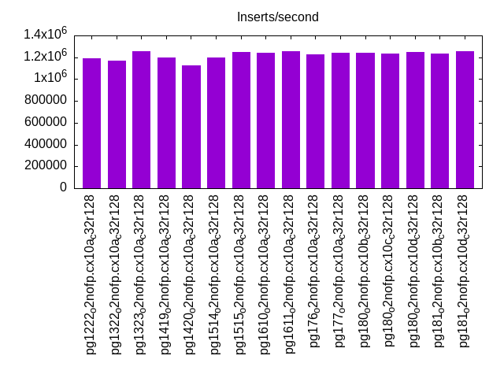
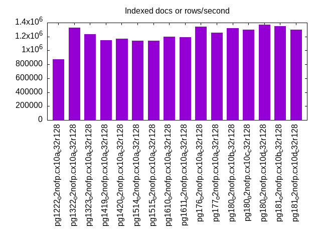
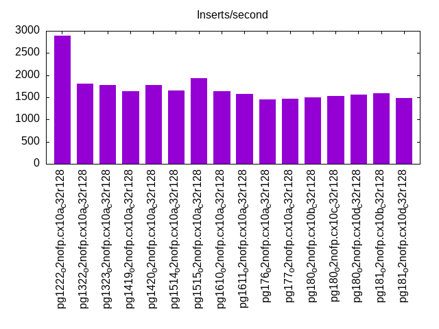
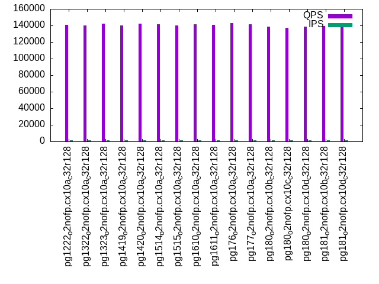
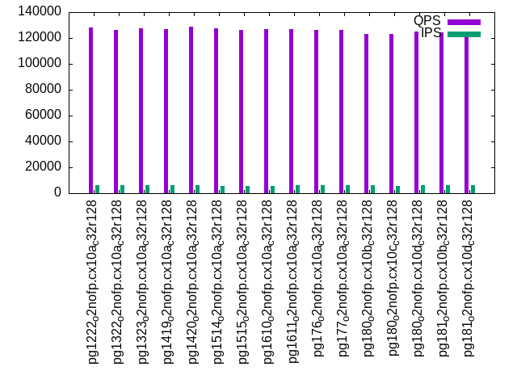
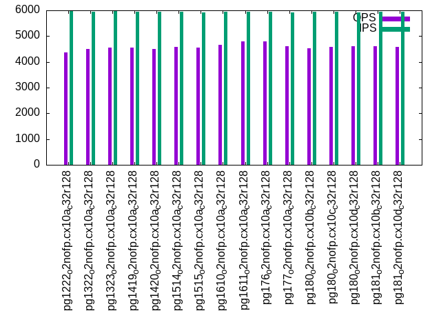
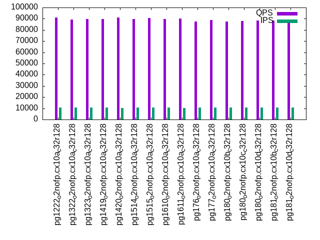
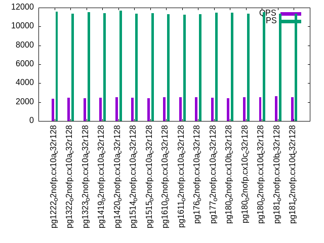

Introduction
This is a report for the insert benchmark with 3600M docs and 12 client(s). It is generated by scripts (bash, awk, sed) and Tufte might not be impressed. An overview of the insert benchmark is here and a short update is here. Below, by DBMS, I mean DBMS+version.config. An example is my8020.c10b40 where my means MySQL, 8020 is version 8.0.20 and c10b40 is the name for the configuration file.
The test server has 32 cores, 128G RAM and 1 NVMe devices. The benchmark was run with 8 clients and there were 1 or 3 connections per client (1 for queries or inserts without rate limits, 1+1 for rate limited inserts+deletes). It uses 8 tables with a table per client. It loads 300M rows per table without secondary indexes, creates 3 secondary indexes per table, then inserts 4m+1m rows per table with a delete per insert to avoid growing the table. It then does 6 read+write tests for 1800s each that do queries as fast as possible with 100,100,500,500,1000,1000 inserts/s and the same for deletes/s per client concurrent with the queries. The database is larger than RAM and most tests are IO-bound except for the range query (qr*) tests that frequently have a cached working set. Clients and the DBMS share one server.
The tested DBMS are:
- pg1222_o2nofp.cx10a_c32r128 - Postgres 12.22 with the cx10a_c32r128 config
- pg1322_o2nofp.cx10a_c32r128 - Postgres 13.22 with the cx10a_c32r128 config
- pg1323_o2nofp.cx10a_c32r128 - Postgres 13.23 with the cx10a_c32r128 config
- pg1419_o2nofp.cx10a_c32r128 - Postgres 14.19 with the cx10a_c32r128 config
- pg1420_o2nofp.cx10a_c32r128 - Postgres 14.20 with the cx10a_c32r128 config
- pg1514_o2nofp.cx10a_c32r128 - Postgres 15.14 with the cx10a_c32r128 config
- pg1515_o2nofp.cx10a_c32r128 - Postgres 15.15 with the cx10a_c32r128 config
- pg1610_o2nofp.cx10a_c32r128 - Postgres 16.10 with the cx10a_c32r128 config
- pg1611_o2nofp.cx10a_c32r128 - Postgres 16.11 with the cx10a_c32r128 config
- pg176_o2nofp.cx10a_c32r128 - Postgres 17.6 with the cx10a_c32r128 config
- pg177_o2nofp.cx10a_c32r128 - Postgres 17.7 with the cx10a_c32r128 config
- pg180_o2nofp.cx10b_c32r128 - Postgres 18.0 with the cx10b_c32r128 config that uses io_method=sync
- pg180_o2nofp.cx10c_c32r128 - Postgres 18.0 with the cx10c_c32r128 config that uses io_method=io_worker
- pg180_o2nofp.cx10d_c32r128 - Postgres 18.0 with the cx10d_c32r128 config that uses io_method=io_uring
- pg181_o2nofp.cx10b_c32r128 - Postgres 18.1 with the cx10b_c32r128 config that uses io_method=sync
- pg181_o2nofp.cx10d_c32r128 - Postgres 18.1 with the cx10d_c32r128 config that uses io_method=io_uring
Contents
- Summary
- l.i0: load without secondary indexes
- l.x: create secondary indexes
- l.i1: continue load after secondary indexes created with 50 inserts per transaction
- l.i2: continue load after secondary indexes created with 5 inserts per transaction
- qr100.L1: range queries with 100 insert/s per client
- qp100.L2: point queries with 100 insert/s per client
- qr500.L3: range queries with 500 insert/s per client
- qp500.L4: point queries with 500 insert/s per client
- qr1000.L5: range queries with 1000 insert/s per client
- qp1000.L6: point queries with 1000 insert/s per client
Summary
The numbers are inserts/s for l.i0, l.i1 and l.i2, indexed docs (or rows) /s for l.x and queries/s for qr100, qp100 thru qr1000, qp1000" The values are the average rate over the entire test for inserts (IPS) and queries (QPS). The range of values for IPS and QPS is split into 3 parts: bottom 25%, middle 50%, top 25%. Values in the bottom 25% have a red background, values in the top 25% have a green background and values in the middle have no color. A gray background is used for values that can be ignored because the DBMS did not sustain the target insert rate. Red backgrounds are not used when the minimum value is within 80% of the max value.
| dbms | l.i0 | l.x | l.i1 | l.i2 | qr100 | qp100 | qr500 | qp500 | qr1000 | qp1000 |
|---|---|---|---|---|---|---|---|---|---|---|
| pg1222_o2nofp.cx10a_c32r128 | 1190476 | 871249 | 18626 | 2889 | 140612 | 6795 | 128116 | 4367 | 90900 | 2378 |
| pg1322_o2nofp.cx10a_c32r128 | 1171112 | 1324503 | 19958 | 1807 | 140305 | 6878 | 126343 | 4511 | 89388 | 2443 |
| pg1323_o2nofp.cx10a_c32r128 | 1253046 | 1231190 | 18965 | 1786 | 141921 | 6845 | 127531 | 4542 | 89831 | 2417 |
| pg1419_o2nofp.cx10a_c32r128 | 1200000 | 1144310 | 20788 | 1639 | 140271 | 6907 | 126999 | 4547 | 89622 | 2452 |
| pg1420_o2nofp.cx10a_c32r128 | 1125704 | 1167694 | 21670 | 1781 | 142137 | 6888 | 128896 | 4488 | 91285 | 2543 |
| pg1514_o2nofp.cx10a_c32r128 | 1199200 | 1143220 | 20788 | 1658 | 141556 | 7062 | 127253 | 4572 | 89698 | 2456 |
| pg1515_o2nofp.cx10a_c32r128 | 1250000 | 1136722 | 19942 | 1927 | 140122 | 7050 | 126156 | 4542 | 90608 | 2399 |
| pg1610_o2nofp.cx10a_c32r128 | 1243953 | 1196411 | 19536 | 1646 | 141533 | 7051 | 126692 | 4654 | 89759 | 2501 |
| pg1611_o2nofp.cx10a_c32r128 | 1255230 | 1188119 | 19884 | 1580 | 140488 | 7067 | 126844 | 4783 | 89961 | 2504 |
| pg176_o2nofp.cx10a_c32r128 | 1229928 | 1343284 | 19786 | 1447 | 142565 | 7043 | 126199 | 4786 | 87565 | 2530 |
| pg177_o2nofp.cx10a_c32r128 | 1238816 | 1252610 | 21525 | 1463 | 141252 | 7072 | 126363 | 4601 | 88811 | 2458 |
| pg180_o2nofp.cx10b_c32r128 | 1237964 | 1323529 | 20654 | 1499 | 138567 | 6676 | 123088 | 4520 | 87363 | 2418 |
| pg180_o2nofp.cx10c_c32r128 | 1232877 | 1297765 | 19900 | 1538 | 137424 | 6998 | 123078 | 4570 | 88107 | 2531 |
| pg180_o2nofp.cx10d_c32r128 | 1245244 | 1371429 | 20134 | 1556 | 138890 | 6842 | 125002 | 4606 | 88368 | 2505 |
| pg181_o2nofp.cx10b_c32r128 | 1232877 | 1351351 | 20601 | 1598 | 139408 | 7024 | 124342 | 4603 | 88467 | 2600 |
| pg181_o2nofp.cx10d_c32r128 | 1253046 | 1299639 | 20210 | 1488 | 138173 | 7001 | 124279 | 4588 | 88054 | 2512 |
This table has relative throughput, throughput for the DBMS relative to the DBMS in the first line, using the absolute throughput from the previous table. Values less than 0.95 have a yellow background. Values greater than 1.05 have a blue background.
| dbms | l.i0 | l.x | l.i1 | l.i2 | qr100 | qp100 | qr500 | qp500 | qr1000 | qp1000 |
|---|---|---|---|---|---|---|---|---|---|---|
| pg1222_o2nofp.cx10a_c32r128 | 1.00 | 1.00 | 1.00 | 1.00 | 1.00 | 1.00 | 1.00 | 1.00 | 1.00 | 1.00 |
| pg1322_o2nofp.cx10a_c32r128 | 0.98 | 1.52 | 1.07 | 0.63 | 1.00 | 1.01 | 0.99 | 1.03 | 0.98 | 1.03 |
| pg1323_o2nofp.cx10a_c32r128 | 1.05 | 1.41 | 1.02 | 0.62 | 1.01 | 1.01 | 1.00 | 1.04 | 0.99 | 1.02 |
| pg1419_o2nofp.cx10a_c32r128 | 1.01 | 1.31 | 1.12 | 0.57 | 1.00 | 1.02 | 0.99 | 1.04 | 0.99 | 1.03 |
| pg1420_o2nofp.cx10a_c32r128 | 0.95 | 1.34 | 1.16 | 0.62 | 1.01 | 1.01 | 1.01 | 1.03 | 1.00 | 1.07 |
| pg1514_o2nofp.cx10a_c32r128 | 1.01 | 1.31 | 1.12 | 0.57 | 1.01 | 1.04 | 0.99 | 1.05 | 0.99 | 1.03 |
| pg1515_o2nofp.cx10a_c32r128 | 1.05 | 1.30 | 1.07 | 0.67 | 1.00 | 1.04 | 0.98 | 1.04 | 1.00 | 1.01 |
| pg1610_o2nofp.cx10a_c32r128 | 1.04 | 1.37 | 1.05 | 0.57 | 1.01 | 1.04 | 0.99 | 1.07 | 0.99 | 1.05 |
| pg1611_o2nofp.cx10a_c32r128 | 1.05 | 1.36 | 1.07 | 0.55 | 1.00 | 1.04 | 0.99 | 1.10 | 0.99 | 1.05 |
| pg176_o2nofp.cx10a_c32r128 | 1.03 | 1.54 | 1.06 | 0.50 | 1.01 | 1.04 | 0.99 | 1.10 | 0.96 | 1.06 |
| pg177_o2nofp.cx10a_c32r128 | 1.04 | 1.44 | 1.16 | 0.51 | 1.00 | 1.04 | 0.99 | 1.05 | 0.98 | 1.03 |
| pg180_o2nofp.cx10b_c32r128 | 1.04 | 1.52 | 1.11 | 0.52 | 0.99 | 0.98 | 0.96 | 1.04 | 0.96 | 1.02 |
| pg180_o2nofp.cx10c_c32r128 | 1.04 | 1.49 | 1.07 | 0.53 | 0.98 | 1.03 | 0.96 | 1.05 | 0.97 | 1.06 |
| pg180_o2nofp.cx10d_c32r128 | 1.05 | 1.57 | 1.08 | 0.54 | 0.99 | 1.01 | 0.98 | 1.05 | 0.97 | 1.05 |
| pg181_o2nofp.cx10b_c32r128 | 1.04 | 1.55 | 1.11 | 0.55 | 0.99 | 1.03 | 0.97 | 1.05 | 0.97 | 1.09 |
| pg181_o2nofp.cx10d_c32r128 | 1.05 | 1.49 | 1.09 | 0.52 | 0.98 | 1.03 | 0.97 | 1.05 | 0.97 | 1.06 |
This lists the average rate of inserts/s for the tests that do inserts concurrent with queries. For such tests the query rate is listed in the table above. The read+write tests are setup so that the insert rate should match the target rate every second. Cells that are not at least 95% of the target have a red background to indicate a failure to satisfy the target.
| dbms | qr100.L1 | qp100.L2 | qr500.L3 | qp500.L4 | qr1000.L5 | qp1000.L6 |
|---|---|---|---|---|---|---|
| pg1222_o2nofp.cx10a_c32r128 | 1193 | 1192 | 5940 | 5960 | 10730 | 11563 |
| pg1322_o2nofp.cx10a_c32r128 | 1193 | 1192 | 5940 | 5957 | 10593 | 11344 |
| pg1323_o2nofp.cx10a_c32r128 | 1193 | 1193 | 5950 | 5964 | 10688 | 11495 |
| pg1419_o2nofp.cx10a_c32r128 | 1193 | 1193 | 5944 | 5957 | 10557 | 11386 |
| pg1420_o2nofp.cx10a_c32r128 | 1192 | 1192 | 5944 | 5934 | 10480 | 11688 |
| pg1514_o2nofp.cx10a_c32r128 | 1192 | 1192 | 5937 | 5957 | 10521 | 11333 |
| pg1515_o2nofp.cx10a_c32r128 | 1192 | 1192 | 5937 | 5921 | 10568 | 11428 |
| pg1610_o2nofp.cx10a_c32r128 | 1192 | 1192 | 5934 | 5944 | 10599 | 11279 |
| pg1611_o2nofp.cx10a_c32r128 | 1193 | 1193 | 5950 | 5940 | 10455 | 11273 |
| pg176_o2nofp.cx10a_c32r128 | 1193 | 1193 | 5947 | 5944 | 10562 | 11297 |
| pg177_o2nofp.cx10a_c32r128 | 1193 | 1193 | 5947 | 5931 | 10578 | 11459 |
| pg180_o2nofp.cx10b_c32r128 | 1192 | 1191 | 5947 | 5937 | 10568 | 11447 |
| pg180_o2nofp.cx10c_c32r128 | 1193 | 1193 | 5937 | 5940 | 10557 | 11368 |
| pg180_o2nofp.cx10d_c32r128 | 1193 | 1193 | 5950 | 5918 | 10619 | 11520 |
| pg181_o2nofp.cx10b_c32r128 | 1192 | 1192 | 5944 | 5937 | 10578 | 11380 |
| pg181_o2nofp.cx10d_c32r128 | 1192 | 1192 | 5944 | 5934 | 10573 | 11344 |
| target | 1200 | 1200 | 6000 | 6000 | 12000 | 12000 |
l.i0
l.i0: load without secondary indexes. Graphs for performance per 1-second interval are here.
Average throughput:
Insert response time histogram: each cell has the percentage of responses that take <= the time in the header and max is the max response time in seconds. For the max column values in the top 25% of the range have a red background and in the bottom 25% of the range have a green background. The red background is not used when the min value is within 80% of the max value.
| dbms | 256us | 1ms | 4ms | 16ms | 64ms | 256ms | 1s | 4s | 16s | gt | max |
|---|---|---|---|---|---|---|---|---|---|---|---|
| pg1222_o2nofp.cx10a_c32r128 | 89.822 | 10.079 | 0.040 | 0.038 | 0.015 | 0.006 | 0.001 | 2.190 | |||
| pg1322_o2nofp.cx10a_c32r128 | 95.901 | 3.885 | 0.113 | 0.059 | 0.031 | 0.011 | 0.001 | 3.798 | |||
| pg1323_o2nofp.cx10a_c32r128 | 98.684 | 1.161 | 0.076 | 0.055 | 0.018 | 0.005 | 0.001 | 2.825 | |||
| pg1419_o2nofp.cx10a_c32r128 | 95.540 | 4.302 | 0.089 | 0.047 | 0.017 | 0.005 | 0.001 | 3.072 | |||
| pg1420_o2nofp.cx10a_c32r128 | 94.211 | 5.549 | 0.133 | 0.058 | 0.038 | 0.010 | 0.001 | 2.401 | |||
| pg1514_o2nofp.cx10a_c32r128 | 93.454 | 6.381 | 0.083 | 0.056 | 0.021 | 0.006 | 0.001 | 2.058 | |||
| pg1515_o2nofp.cx10a_c32r128 | 98.551 | 1.287 | 0.082 | 0.053 | 0.021 | 0.006 | nonzero | 1.888 | |||
| pg1610_o2nofp.cx10a_c32r128 | 98.313 | 1.521 | 0.087 | 0.055 | 0.017 | 0.007 | nonzero | 1.584 | |||
| pg1611_o2nofp.cx10a_c32r128 | 98.666 | 1.163 | 0.083 | 0.060 | 0.023 | 0.006 | nonzero | 1.819 | |||
| pg176_o2nofp.cx10a_c32r128 | 97.422 | 2.384 | 0.112 | 0.057 | 0.019 | 0.006 | nonzero | 1.905 | |||
| pg177_o2nofp.cx10a_c32r128 | 98.335 | 1.492 | 0.097 | 0.052 | 0.018 | 0.006 | nonzero | 2.093 | |||
| pg180_o2nofp.cx10b_c32r128 | 98.485 | 1.328 | 0.098 | 0.057 | 0.025 | 0.006 | nonzero | 2.252 | |||
| pg180_o2nofp.cx10c_c32r128 | 98.440 | 1.382 | 0.087 | 0.055 | 0.029 | 0.006 | nonzero | 2.129 | |||
| pg180_o2nofp.cx10d_c32r128 | 98.539 | 1.302 | 0.082 | 0.053 | 0.018 | 0.006 | 0.001 | 1.804 | |||
| pg181_o2nofp.cx10b_c32r128 | 98.378 | 1.445 | 0.095 | 0.055 | 0.021 | 0.006 | 0.001 | 1.767 | |||
| pg181_o2nofp.cx10d_c32r128 | 98.460 | 1.389 | 0.083 | 0.044 | 0.016 | 0.006 | nonzero | nonzero | 4.082 |
Performance metrics for the DBMS listed above. Some are normalized by throughput, others are not. Legend for results is here.
ips qps rps rmbps wps wmbps rpq rkbpq wpi wkbpi csps cpups cspq cpupq dbgb1 dbgb2 rss maxop p50 p99 tag 1190476 0 677 5.4 5492.7 475.9 0.001 0.005 0.005 0.409 128901 55.5 0.108 15 344.4 440.5 97.3 2.190 103887 7999 pg1222_o2nofp.cx10a_c32r128 1171112 0 599 4.8 4403.7 470.7 0.001 0.004 0.004 0.412 128835 52.2 0.110 14 344.4 440.5 11.5 3.798 113788 4999 pg1322_o2nofp.cx10a_c32r128 1253046 0 637 5.1 4648.4 500.7 0.001 0.004 0.004 0.409 136208 55.3 0.109 14 344.4 440.5 10.1 2.825 114387 8098 pg1323_o2nofp.cx10a_c32r128 1200000 0 621 4.8 4467.6 482.2 0.001 0.004 0.004 0.411 129851 54.2 0.108 14 344.4 440.5 15.7 3.072 110187 8096 pg1419_o2nofp.cx10a_c32r128 1125704 0 590 4.6 4238.4 453.0 0.001 0.004 0.004 0.412 124585 51.5 0.111 15 344.4 440.5 5.3 2.401 108788 5899 pg1420_o2nofp.cx10a_c32r128 1199200 0 649 5.1 4453.5 477.5 0.001 0.004 0.004 0.408 129554 54.8 0.108 15 344.4 440.5 8.8 2.058 108987 7799 pg1514_o2nofp.cx10a_c32r128 1250000 0 646 5.0 4664.7 502.0 0.001 0.004 0.004 0.411 134764 54.9 0.108 14 344.4 440.5 7.4 1.888 113987 13698 pg1515_o2nofp.cx10a_c32r128 1243953 0 650 5.1 4575.4 498.1 0.001 0.004 0.004 0.410 134045 54.8 0.108 14 344.4 440.5 2.5 1.584 113987 10999 pg1610_o2nofp.cx10a_c32r128 1255230 0 626 4.9 4612.9 502.5 0.000 0.004 0.004 0.410 136587 54.7 0.109 14 344.4 440.5 10.3 1.819 115487 9298 pg1611_o2nofp.cx10a_c32r128 1229928 0 622 4.9 4588.9 494.0 0.001 0.004 0.004 0.411 124113 54.3 0.101 14 344.4 440.5 97.2 1.905 112886 10398 pg176_o2nofp.cx10a_c32r128 1238816 0 641 5.1 4588.6 496.8 0.001 0.004 0.004 0.411 124989 54.6 0.101 14 344.4 440.5 97.2 2.093 113087 9599 pg177_o2nofp.cx10a_c32r128 1237964 0 626 5.0 4599.9 495.1 0.001 0.004 0.004 0.410 124705 54.0 0.101 14 344.4 440.5 97.2 2.252 114187 12798 pg180_o2nofp.cx10b_c32r128 1232877 0 625 5.0 4570.5 494.3 0.001 0.004 0.004 0.411 125875 53.9 0.102 14 344.4 440.5 97.2 2.129 113886 13097 pg180_o2nofp.cx10c_c32r128 1245244 0 645 5.1 4626.2 497.4 0.001 0.004 0.004 0.409 127552 54.6 0.102 14 344.4 440.5 97.2 1.804 113786 7999 pg180_o2nofp.cx10d_c32r128 1232877 0 636 5.0 4557.1 493.8 0.001 0.004 0.004 0.410 124047 54.3 0.101 14 344.4 440.5 97.2 1.767 113286 7799 pg181_o2nofp.cx10b_c32r128 1253046 0 654 5.2 4620.3 500.2 0.001 0.004 0.004 0.409 128481 55.1 0.103 14 344.4 440.5 97.2 4.082 113584 12298 pg181_o2nofp.cx10d_c32r128
Average values from iostat.
r/s rkB/s rrqm/s %rrqm r_await rareq-s w/s wkB/s wrqm/s %wrqm w_await wareq-s d/s dkB/s drqm/s %drqm d_await dareq-s f/s f_await aqu-sz %util 677.1 5527.1 0.019 0.157 0.355 3.390 5492.7 487346 670.8 8.569 3.812 96.14 3.197 2636.3 0.000 0.000 5.044 108.5 223.7 1.198 12.00 46.68 pg1222_o2nofp.cx10a_c32r128 598.8 4886.6 0.069 0.935 1.321 4.466 4403.7 482037 599.1 8.344 6.011 110.5 3.607 2187.6 0.000 0.000 6.478 90.81 215.0 1.777 14.00 46.82 pg1322_o2nofp.cx10a_c32r128 637.3 5202.8 0.005 0.114 0.403 3.353 4648.4 512762 599.1 7.944 4.560 112.2 3.550 1208.2 0.000 0.000 4.865 70.98 228.2 1.282 12.92 46.21 pg1323_o2nofp.cx10a_c32r128 620.8 4962.3 0.000 0.000 0.897 4.028 4467.6 493796 560.3 6.875 3.576 112.4 3.623 1425.6 0.000 0.000 4.466 78.76 220.4 1.262 10.81 43.57 pg1419_o2nofp.cx10a_c32r128 590.5 4721.6 0.078 0.828 1.006 4.251 4238.4 463852 479.9 6.566 5.868 110.5 3.469 1207.9 0.000 0.000 6.893 76.09 206.8 1.840 13.98 44.24 pg1420_o2nofp.cx10a_c32r128 648.8 5187.4 0.000 0.000 0.652 4.323 4453.5 488913 468.4 5.960 3.817 112.1 0.707 822.1 0.000 0.000 1.670 92.75 218.8 1.277 11.06 42.70 pg1514_o2nofp.cx10a_c32r128 646.0 5164.4 0.000 0.000 0.512 4.137 4664.7 514060 556.4 6.821 3.683 112.4 0.776 1816.6 0.000 0.000 2.004 107.4 228.5 1.274 11.40 45.12 pg1515_o2nofp.cx10a_c32r128 650.1 5196.1 0.000 0.000 0.650 4.019 4575.4 510071 501.7 6.098 3.931 113.1 0.707 921.2 0.000 0.000 1.585 85.03 225.8 1.344 11.24 44.62 pg1610_o2nofp.cx10a_c32r128 626.1 5004.6 0.000 0.000 0.640 3.816 4612.9 514527 457.0 6.058 4.006 113.1 0.735 645.5 0.000 0.000 1.925 66.87 228.6 1.321 11.77 44.94 pg1611_o2nofp.cx10a_c32r128 621.5 5050.6 0.004 0.118 0.748 3.619 4588.9 505865 427.6 5.949 3.854 111.9 0.490 849.2 0.000 0.000 1.223 130.7 223.2 1.228 10.55 43.64 pg176_o2nofp.cx10a_c32r128 640.6 5204.4 0.000 0.000 0.750 4.111 4588.6 508743 412.9 5.646 3.664 112.6 0.480 581.7 0.000 0.000 0.922 134.8 224.9 1.261 10.96 43.65 pg177_o2nofp.cx10a_c32r128 626.4 5092.5 0.062 0.349 0.400 2.942 4599.9 506961 457.8 5.942 4.442 112.2 0.482 940.3 0.000 0.000 1.636 143.2 225.5 1.320 12.50 43.73 pg180_o2nofp.cx10b_c32r128 624.9 5078.7 0.000 0.000 0.624 4.361 4570.5 506206 525.1 6.558 4.082 112.7 0.590 1884.8 0.000 0.000 1.702 190.2 224.7 1.424 11.39 46.03 pg180_o2nofp.cx10c_c32r128 645.0 5241.5 0.002 0.000 0.741 4.205 4626.2 509299 467.3 5.946 3.751 112.2 0.615 826.6 0.000 0.000 1.445 158.2 228.0 1.264 10.93 42.76 pg180_o2nofp.cx10d_c32r128 636.0 5167.7 0.007 0.076 0.883 4.002 4557.1 505656 503.0 6.549 4.007 112.5 0.534 1039.5 0.000 0.000 1.374 165.0 226.2 1.375 11.12 44.03 pg181_o2nofp.cx10b_c32r128 653.6 5310.0 0.000 0.008 0.513 4.089 4620.3 512182 488.4 6.708 3.539 112.3 0.628 1389.6 0.000 0.000 1.779 156.4 229.4 1.234 10.90 43.84 pg181_o2nofp.cx10d_c32r128
l.x
l.x: create secondary indexes.
Average throughput:
Performance metrics for the DBMS listed above. Some are normalized by throughput, others are not. Legend for results is here.
ips qps rps rmbps wps wmbps rpq rkbpq wpi wkbpi csps cpups cspq cpupq dbgb1 dbgb2 rss maxop p50 p99 tag 871249 0 2407 297.9 4018.0 378.9 0.003 0.350 0.005 0.445 51675 12.5 0.059 5 691.9 788.0 64.0 0.004 NA NA pg1222_o2nofp.cx10a_c32r128 1324503 0 3647 453.0 3551.5 410.5 0.003 0.350 0.003 0.317 46600 17.7 0.035 4 691.5 787.6 50.5 0.003 NA NA pg1322_o2nofp.cx10a_c32r128 1231190 0 3385 420.5 3305.4 383.1 0.003 0.350 0.003 0.319 43901 16.6 0.036 4 691.5 787.6 55.1 0.159 NA NA pg1323_o2nofp.cx10a_c32r128 1144310 0 3146 390.7 3068.4 354.5 0.003 0.350 0.003 0.317 39752 15.3 0.035 4 691.5 787.6 54.6 0.004 NA NA pg1419_o2nofp.cx10a_c32r128 1167694 0 3213 399.1 3119.6 361.6 0.003 0.350 0.003 0.317 41790 15.6 0.036 4 691.5 787.6 52.6 0.006 NA NA pg1420_o2nofp.cx10a_c32r128 1143220 0 3742 464.0 3662.8 427.8 0.003 0.416 0.003 0.383 41672 15.2 0.036 4 691.5 787.6 37.9 0.003 NA NA pg1514_o2nofp.cx10a_c32r128 1136722 0 3722 461.6 3647.0 424.9 0.003 0.416 0.003 0.383 41543 15.0 0.037 4 691.5 787.6 38.6 0.005 NA NA pg1515_o2nofp.cx10a_c32r128 1196411 0 3903 484.9 3845.3 447.4 0.003 0.415 0.003 0.383 41428 15.8 0.035 4 691.5 787.6 29.5 0.003 NA NA pg1610_o2nofp.cx10a_c32r128 1188119 0 3875 481.6 3809.0 445.0 0.003 0.415 0.003 0.384 43715 15.5 0.037 4 691.5 787.6 31.0 0.004 NA NA pg1611_o2nofp.cx10a_c32r128 1343284 0 3794 472.3 3707.2 430.1 0.003 0.360 0.003 0.328 19572 16.0 0.015 4 691.5 787.6 53.7 0.003 NA NA pg176_o2nofp.cx10a_c32r128 1252610 0 3538 440.4 3426.2 400.4 0.003 0.360 0.003 0.327 18896 15.1 0.015 4 691.5 787.6 54.1 0.003 NA NA pg177_o2nofp.cx10a_c32r128 1323529 0 3739 465.3 3668.7 423.8 0.003 0.360 0.003 0.328 19719 16.0 0.015 4 691.5 787.6 53.6 0.004 NA NA pg180_o2nofp.cx10b_c32r128 1297765 0 3723 457.2 3621.6 415.9 0.003 0.361 0.003 0.328 23507 15.7 0.018 4 691.5 787.6 77.4 0.004 NA NA pg180_o2nofp.cx10c_c32r128 1371429 0 3877 482.3 3744.8 437.9 0.003 0.360 0.003 0.327 24617 16.6 0.018 4 691.5 787.6 54.6 0.005 NA NA pg180_o2nofp.cx10d_c32r128 1351351 0 3817 475.1 3705.7 433.1 0.003 0.360 0.003 0.328 19725 16.3 0.015 4 691.5 787.6 53.5 0.003 NA NA pg181_o2nofp.cx10b_c32r128 1299639 0 3675 457.0 3556.7 415.8 0.003 0.360 0.003 0.328 23726 16.0 0.018 4 691.5 787.6 39.9 0.828 NA NA pg181_o2nofp.cx10d_c32r128
Average values from iostat.
r/s rkB/s rrqm/s %rrqm r_await rareq-s w/s wkB/s wrqm/s %wrqm w_await wareq-s d/s dkB/s drqm/s %drqm d_await dareq-s f/s f_await aqu-sz %util 2407.2 305043 0.000 0.000 1.361 127.0 4018.0 388007 171.7 3.058 37.52 108.3 4.382 76090.2 0.000 0.000 26.34 1783.2 34.60 10.33 75.77 91.01 pg1222_o2nofp.cx10a_c32r128 3646.6 463858 0.006 0.002 1.158 127.4 3551.5 420308 173.0 3.496 22.86 121.8 5.488 117565 0.000 0.000 19.36 2168.2 32.88 6.066 42.49 85.68 pg1322_o2nofp.cx10a_c32r128 3385.1 430546 0.001 0.000 1.199 127.2 3305.4 392272 130.2 2.894 27.76 122.5 5.113 111537 0.000 0.000 22.29 1860.8 30.43 7.614 51.30 86.93 pg1323_o2nofp.cx10a_c32r128 3145.6 400097 0.005 0.000 1.180 127.4 3068.4 362987 89.88 2.296 32.49 122.2 4.682 96833.8 0.000 0.000 24.62 1434.7 27.67 8.561 55.76 88.56 pg1419_o2nofp.cx10a_c32r128 3212.8 408665 0.003 0.000 1.121 127.4 3119.6 370246 90.73 2.119 31.34 122.5 4.585 84204.1 0.000 0.000 24.20 1286.4 28.17 7.858 52.32 87.94 pg1420_o2nofp.cx10a_c32r128 3741.9 475135 0.010 0.001 0.852 126.9 3662.8 438103 92.87 1.778 40.61 122.5 2.839 102939 0.000 0.000 15.85 2262.0 27.89 12.40 80.16 87.89 pg1514_o2nofp.cx10a_c32r128 3721.9 472651 0.004 0.000 0.782 126.8 3647.0 435116 119.5 2.167 37.54 122.4 2.323 85803.4 0.000 0.000 20.55 3330.1 27.92 11.88 74.84 88.33 pg1515_o2nofp.cx10a_c32r128 3903.4 496519 0.008 0.006 0.692 127.1 3845.3 458177 105.8 2.142 39.47 122.3 3.100 107784 0.000 0.000 17.60 3003.5 29.13 8.755 65.98 88.38 pg1610_o2nofp.cx10a_c32r128 3875.0 493141 0.007 0.000 4.412 127.1 3809.0 455665 100.5 2.057 62.38 122.3 3.051 107074 0.000 0.000 30.15 2461.9 28.90 23.15 92.05 88.09 pg1611_o2nofp.cx10a_c32r128 3793.7 483647 0.002 0.000 1.081 127.1 3707.2 440389 98.33 2.050 47.07 123.1 3.245 120943 0.000 0.000 15.93 3207.5 32.74 7.649 60.07 90.64 pg176_o2nofp.cx10a_c32r128 3538.2 450971 0.004 0.000 0.912 127.5 3426.2 410056 88.53 1.922 43.96 123.0 3.063 113091 0.000 0.000 19.95 2919.0 30.33 7.623 66.32 90.63 pg177_o2nofp.cx10a_c32r128 3738.7 476463 0.311 0.012 0.853 127.1 3668.7 433945 92.99 2.117 36.13 121.2 2.941 119214 0.000 0.000 17.12 3362.9 31.66 7.386 61.82 89.11 pg180_o2nofp.cx10b_c32r128 3723.3 468138 0.005 0.000 0.792 126.6 3621.6 425922 101.8 1.934 38.59 123.0 2.649 100363 0.000 0.000 19.40 4994.0 31.15 9.954 65.99 91.04 pg180_o2nofp.cx10c_c32r128 3877.0 493845 0.006 0.000 0.974 127.4 3744.8 448432 98.18 1.803 40.86 123.2 3.504 123596 0.000 0.000 15.96 2984.6 33.14 7.329 71.27 90.54 pg180_o2nofp.cx10d_c32r128 3816.8 486533 0.002 0.000 0.743 127.5 3705.7 443485 91.81 1.789 33.99 123.0 3.549 121704 0.000 0.000 14.35 2725.3 32.33 9.429 67.17 89.82 pg181_o2nofp.cx10b_c32r128 3674.7 467961 0.010 0.000 1.607 127.0 3556.7 425798 88.24 1.689 62.20 123.3 3.200 117067 0.000 0.000 18.92 2773.4 31.15 20.50 74.77 90.96 pg181_o2nofp.cx10d_c32r128
l.i1
l.i1: continue load after secondary indexes created with 50 inserts per transaction. Graphs for performance per 1-second interval are here.
Average throughput:

Insert response time histogram: each cell has the percentage of responses that take <= the time in the header and max is the max response time in seconds. For the max column values in the top 25% of the range have a red background and in the bottom 25% of the range have a green background. The red background is not used when the min value is within 80% of the max value.
| dbms | 256us | 1ms | 4ms | 16ms | 64ms | 256ms | 1s | 4s | 16s | gt | max |
|---|---|---|---|---|---|---|---|---|---|---|---|
| pg1222_o2nofp.cx10a_c32r128 | 14.359 | 81.806 | 3.737 | 0.067 | 0.030 | 0.002 | 5.656 | ||||
| pg1322_o2nofp.cx10a_c32r128 | 25.936 | 71.413 | 2.543 | 0.096 | 0.011 | 3.753 | |||||
| pg1323_o2nofp.cx10a_c32r128 | 23.988 | 72.540 | 3.289 | 0.168 | 0.016 | 3.487 | |||||
| pg1419_o2nofp.cx10a_c32r128 | 27.005 | 69.483 | 3.470 | 0.023 | 0.019 | 3.927 | |||||
| pg1420_o2nofp.cx10a_c32r128 | 27.097 | 68.897 | 3.978 | 0.015 | 0.013 | 2.745 | |||||
| pg1514_o2nofp.cx10a_c32r128 | 24.963 | 71.618 | 3.378 | 0.028 | 0.012 | 0.001 | 4.808 | ||||
| pg1515_o2nofp.cx10a_c32r128 | 20.383 | 75.793 | 3.778 | 0.034 | 0.012 | 2.852 | |||||
| pg1610_o2nofp.cx10a_c32r128 | 21.456 | 74.133 | 4.336 | 0.048 | 0.027 | 2.698 | |||||
| pg1611_o2nofp.cx10a_c32r128 | 22.946 | 73.842 | 3.143 | 0.048 | 0.021 | nonzero | 4.040 | ||||
| pg176_o2nofp.cx10a_c32r128 | 25.240 | 70.798 | 3.908 | 0.041 | 0.013 | nonzero | 4.006 | ||||
| pg177_o2nofp.cx10a_c32r128 | 28.989 | 68.025 | 2.966 | 0.010 | 0.008 | 0.001 | 6.307 | ||||
| pg180_o2nofp.cx10b_c32r128 | 25.245 | 71.025 | 3.667 | 0.043 | 0.020 | 3.004 | |||||
| pg180_o2nofp.cx10c_c32r128 | 23.650 | 72.897 | 3.393 | 0.040 | 0.021 | 3.509 | |||||
| pg180_o2nofp.cx10d_c32r128 | 23.447 | 73.093 | 3.409 | 0.035 | 0.014 | nonzero | 4.032 | ||||
| pg181_o2nofp.cx10b_c32r128 | 25.833 | 70.584 | 3.541 | 0.025 | 0.017 | 3.066 | |||||
| pg181_o2nofp.cx10d_c32r128 | 22.483 | 73.876 | 3.601 | 0.026 | 0.015 | 3.936 |
Delete response time histogram: each cell has the percentage of responses that take <= the time in the header and max is the max response time in seconds. For the max column values in the top 25% of the range have a red background and in the bottom 25% of the range have a green background. The red background is not used when the min value is within 80% of the max value.
| dbms | 256us | 1ms | 4ms | 16ms | 64ms | 256ms | 1s | 4s | 16s | gt | max |
|---|---|---|---|---|---|---|---|---|---|---|---|
| pg1222_o2nofp.cx10a_c32r128 | 2.513 | 12.416 | 37.045 | 47.336 | 0.645 | 0.022 | 0.023 | nonzero | 4.127 | ||
| pg1322_o2nofp.cx10a_c32r128 | 2.170 | 13.939 | 35.924 | 46.998 | 0.891 | 0.070 | 0.007 | 2.873 | |||
| pg1323_o2nofp.cx10a_c32r128 | 2.256 | 16.118 | 37.925 | 42.468 | 1.123 | 0.101 | 0.010 | 2.801 | |||
| pg1419_o2nofp.cx10a_c32r128 | 2.128 | 10.567 | 30.175 | 56.953 | 0.151 | 0.009 | 0.017 | 3.121 | |||
| pg1420_o2nofp.cx10a_c32r128 | 2.225 | 11.362 | 32.407 | 53.850 | 0.133 | 0.013 | 0.011 | 2.738 | |||
| pg1514_o2nofp.cx10a_c32r128 | 2.172 | 10.652 | 30.162 | 56.800 | 0.195 | 0.007 | 0.011 | 0.001 | 4.765 | ||
| pg1515_o2nofp.cx10a_c32r128 | 2.235 | 10.986 | 29.417 | 56.859 | 0.470 | 0.021 | 0.011 | 2.842 | |||
| pg1610_o2nofp.cx10a_c32r128 | 2.244 | 10.449 | 28.451 | 58.465 | 0.349 | 0.017 | 0.024 | 3.432 | |||
| pg1611_o2nofp.cx10a_c32r128 | 2.150 | 10.292 | 26.767 | 60.481 | 0.268 | 0.023 | 0.019 | 3.544 | |||
| pg176_o2nofp.cx10a_c32r128 | 2.041 | 10.226 | 23.689 | 63.775 | 0.243 | 0.015 | 0.011 | nonzero | 4.011 | ||
| pg177_o2nofp.cx10a_c32r128 | 2.083 | 10.362 | 23.221 | 64.149 | 0.168 | 0.008 | 0.008 | 0.001 | 6.292 | ||
| pg180_o2nofp.cx10b_c32r128 | 2.048 | 10.012 | 25.857 | 61.797 | 0.246 | 0.021 | 0.018 | 3.680 | |||
| pg180_o2nofp.cx10c_c32r128 | 2.020 | 10.182 | 25.398 | 62.113 | 0.252 | 0.018 | 0.018 | 3.327 | |||
| pg180_o2nofp.cx10d_c32r128 | 2.065 | 10.255 | 27.013 | 60.424 | 0.209 | 0.020 | 0.013 | nonzero | 4.042 | ||
| pg181_o2nofp.cx10b_c32r128 | 2.059 | 10.632 | 27.269 | 59.731 | 0.281 | 0.012 | 0.015 | 2.389 | |||
| pg181_o2nofp.cx10d_c32r128 | 2.074 | 10.274 | 25.602 | 61.816 | 0.211 | 0.012 | 0.011 | 3.624 |
Performance metrics for the DBMS listed above. Some are normalized by throughput, others are not. Legend for results is here.
ips qps rps rmbps wps wmbps rpq rkbpq wpi wkbpi csps cpups cspq cpupq dbgb1 dbgb2 rss maxop p50 p99 tag 18626 0 22558 179.1 28059.4 487.9 1.211 9.844 1.506 26.824 54043 24.2 2.901 416 699.8 795.8 97.4 5.656 1600 50 pg1222_o2nofp.cx10a_c32r128 19958 0 24490 221.1 30938.0 549.6 1.227 11.344 1.550 28.196 58511 26.7 2.932 428 699.3 795.4 4.3 3.753 1650 150 pg1322_o2nofp.cx10a_c32r128 18965 0 23693 245.4 30876.7 547.9 1.249 13.249 1.628 29.584 56532 25.1 2.981 424 699.2 795.3 4.2 3.487 1500 200 pg1323_o2nofp.cx10a_c32r128 20788 0 25192 201.5 31278.7 531.7 1.212 9.925 1.505 26.188 59421 30.3 2.858 466 699.4 795.4 2.5 3.927 1650 250 pg1419_o2nofp.cx10a_c32r128 21670 0 26217 208.6 32529.6 552.7 1.210 9.859 1.501 26.115 62160 29.7 2.868 439 699.4 795.4 2.5 2.745 1750 350 pg1420_o2nofp.cx10a_c32r128 20788 0 25145 200.2 31438.4 532.3 1.210 9.859 1.512 26.220 59728 29.5 2.873 454 699.4 795.4 2.6 4.808 1750 300 pg1514_o2nofp.cx10a_c32r128 19942 0 24181 192.8 30318.5 511.9 1.213 9.902 1.520 26.286 57571 28.8 2.887 462 699.4 795.4 2.5 2.852 1650 350 pg1515_o2nofp.cx10a_c32r128 19536 0 23751 189.9 29553.5 501.0 1.216 9.953 1.513 26.261 55597 28.4 2.846 465 699.4 795.4 97.2 2.698 1750 100 pg1610_o2nofp.cx10a_c32r128 19884 0 24203 193.8 29932.6 509.4 1.217 9.979 1.505 26.232 57003 30.3 2.867 488 699.4 795.4 2.6 4.040 1650 250 pg1611_o2nofp.cx10a_c32r128 19786 0 23972 190.9 30071.7 506.9 1.212 9.878 1.520 26.236 55870 30.5 2.824 493 699.4 795.4 97.2 4.006 1750 300 pg176_o2nofp.cx10a_c32r128 21525 0 26103 209.0 32387.1 557.1 1.213 9.945 1.505 26.505 61099 32.1 2.839 477 699.4 795.4 97.2 6.307 1700 350 pg177_o2nofp.cx10a_c32r128 20654 0 24966 199.3 31138.1 528.2 1.209 9.881 1.508 26.187 58506 30.7 2.833 476 699.4 795.4 97.1 3.004 1700 250 pg180_o2nofp.cx10b_c32r128 19900 0 24192 193.8 30146.6 512.2 1.216 9.972 1.515 26.354 56806 30.3 2.855 487 699.4 795.4 97.2 3.509 1750 200 pg180_o2nofp.cx10c_c32r128 20134 0 24410 194.8 30586.9 516.8 1.212 9.906 1.519 26.284 57221 30.0 2.842 477 699.4 795.4 97.2 4.032 1750 300 pg180_o2nofp.cx10d_c32r128 20601 0 24994 200.1 30940.8 527.7 1.213 9.948 1.502 26.230 58462 30.1 2.838 468 699.4 795.4 97.2 3.066 1800 400 pg181_o2nofp.cx10b_c32r128 20210 0 24498 195.2 30721.4 518.8 1.212 9.892 1.520 26.285 57503 30.0 2.845 475 699.4 795.4 97.2 3.936 1750 350 pg181_o2nofp.cx10d_c32r128
Average values from iostat.
r/s rkB/s rrqm/s %rrqm r_await rareq-s w/s wkB/s wrqm/s %wrqm w_await wareq-s d/s dkB/s drqm/s %drqm d_await dareq-s f/s f_await aqu-sz %util 22558.5 183362 0.000 0.000 0.451 8.131 28059.4 499632 1323.0 6.693 3.986 23.19 2.935 13005.7 0.000 0.000 6.570 436.4 155.7 2.780 63.18 99.54 pg1222_o2nofp.cx10a_c32r128 24489.5 226401 0.002 0.000 0.420 10.15 30938.0 562743 1338.7 6.734 1.991 22.66 3.423 19694.7 0.000 0.000 4.928 605.6 199.4 2.416 52.19 98.38 pg1322_o2nofp.cx10a_c32r128 23692.7 251263 0.001 0.000 0.452 11.10 30876.7 561063 729.2 4.130 2.199 22.52 3.455 19661.4 0.000 0.000 5.559 457.1 204.0 2.475 55.97 98.85 pg1323_o2nofp.cx10a_c32r128 25192.0 206313 0.000 0.000 0.445 8.202 31278.7 544410 298.4 2.744 1.231 20.61 2.100 574.0 0.000 0.000 4.284 132.8 196.3 2.286 44.39 98.48 pg1419_o2nofp.cx10a_c32r128 26217.2 213656 0.000 0.000 0.465 8.157 32529.6 565914 293.5 3.169 1.274 20.79 2.184 1900.1 0.000 0.000 4.435 166.0 195.7 2.283 45.92 99.68 pg1420_o2nofp.cx10a_c32r128 25145.2 204958 0.000 0.000 0.448 8.162 31438.4 545076 284.5 2.640 1.326 20.58 0.083 598.1 0.000 0.000 0.310 240.7 193.2 2.311 44.47 97.49 pg1514_o2nofp.cx10a_c32r128 24180.9 197461 0.001 0.000 0.444 8.171 30318.5 524193 321.5 2.872 1.386 20.46 0.076 1832.3 0.000 0.000 0.328 496.3 189.5 2.400 46.74 98.20 pg1515_o2nofp.cx10a_c32r128 23751.4 194446 0.002 0.000 0.465 8.190 29553.5 513042 287.7 2.792 1.544 20.49 0.077 596.1 0.000 0.000 0.301 239.3 180.4 2.454 48.08 97.74 pg1610_o2nofp.cx10a_c32r128 24203.1 198424 0.001 0.000 0.432 8.216 29932.6 521588 278.4 2.611 1.414 20.67 0.089 633.6 0.000 0.000 0.291 248.8 190.2 2.364 46.60 98.42 pg1611_o2nofp.cx10a_c32r128 23971.9 195441 0.000 0.000 0.442 8.167 30071.7 519090 214.6 2.314 1.305 20.63 0.051 521.1 0.000 0.000 0.222 326.2 184.5 2.314 44.10 96.76 pg176_o2nofp.cx10a_c32r128 26103.0 214056 0.001 0.000 0.431 8.214 32387.1 570518 268.4 2.502 1.618 20.81 0.461 6290.0 0.000 0.000 0.641 388.8 193.5 2.348 43.77 98.59 pg177_o2nofp.cx10a_c32r128 24966.2 204082 0.001 0.000 0.447 8.175 31138.1 540876 229.4 2.433 1.488 20.79 0.067 691.5 0.000 0.000 0.200 309.5 184.2 2.411 47.65 98.67 pg180_o2nofp.cx10b_c32r128 24192.2 198443 0.001 0.000 0.434 8.257 30146.6 524449 319.9 2.861 1.417 20.75 0.066 1108.2 0.000 0.000 0.477 556.4 183.6 2.363 45.94 97.65 pg180_o2nofp.cx10c_c32r128 24410.4 199454 0.001 0.000 0.439 8.190 30586.9 529212 235.4 2.385 1.379 20.83 0.067 564.3 0.000 0.000 0.318 301.7 184.0 2.424 46.23 97.61 pg180_o2nofp.cx10d_c32r128 24993.5 204938 0.001 0.000 0.438 8.214 30940.8 540357 223.6 2.279 1.356 20.91 0.069 542.4 0.000 0.000 0.242 292.0 184.6 2.318 45.40 97.28 pg181_o2nofp.cx10b_c32r128 24498.3 199929 0.000 0.000 0.438 8.175 30721.4 531238 270.3 2.489 1.279 20.62 0.077 635.6 0.000 0.000 0.337 284.6 186.4 2.341 45.23 97.38 pg181_o2nofp.cx10d_c32r128
l.i2
l.i2: continue load after secondary indexes created with 5 inserts per transaction. Graphs for performance per 1-second interval are here.
Average throughput:
Insert response time histogram: each cell has the percentage of responses that take <= the time in the header and max is the max response time in seconds. For the max column values in the top 25% of the range have a red background and in the bottom 25% of the range have a green background. The red background is not used when the min value is within 80% of the max value.
| dbms | 256us | 1ms | 4ms | 16ms | 64ms | 256ms | 1s | 4s | 16s | gt | max |
|---|---|---|---|---|---|---|---|---|---|---|---|
| pg1222_o2nofp.cx10a_c32r128 | 21.435 | 74.806 | 2.373 | 1.339 | 0.048 | 0.237 | |||||
| pg1322_o2nofp.cx10a_c32r128 | 23.980 | 73.466 | 1.633 | 0.889 | 0.033 | nonzero | 0.688 | ||||
| pg1323_o2nofp.cx10a_c32r128 | nonzero | 27.367 | 69.087 | 3.143 | 0.388 | 0.016 | nonzero | 0.576 | |||
| pg1419_o2nofp.cx10a_c32r128 | 17.542 | 80.072 | 1.461 | 0.810 | 0.114 | 0.001 | 0.937 | ||||
| pg1420_o2nofp.cx10a_c32r128 | 17.719 | 79.587 | 1.719 | 0.931 | 0.044 | nonzero | 0.540 | ||||
| pg1514_o2nofp.cx10a_c32r128 | 18.884 | 78.028 | 1.992 | 1.087 | 0.009 | nonzero | 0.700 | ||||
| pg1515_o2nofp.cx10a_c32r128 | 18.613 | 78.451 | 1.881 | 1.028 | 0.026 | 0.001 | 0.958 | ||||
| pg1610_o2nofp.cx10a_c32r128 | 20.126 | 76.603 | 2.153 | 1.113 | 0.006 | 0.109 | |||||
| pg1611_o2nofp.cx10a_c32r128 | 18.712 | 78.747 | 1.688 | 0.849 | 0.004 | 0.122 | |||||
| pg176_o2nofp.cx10a_c32r128 | 19.997 | 77.177 | 1.856 | 0.967 | 0.003 | 0.111 | |||||
| pg177_o2nofp.cx10a_c32r128 | 21.874 | 75.784 | 1.526 | 0.769 | 0.045 | 0.001 | 0.728 | ||||
| pg180_o2nofp.cx10b_c32r128 | 18.668 | 78.665 | 1.737 | 0.915 | 0.014 | 0.129 | |||||
| pg180_o2nofp.cx10c_c32r128 | 18.976 | 78.249 | 1.831 | 0.940 | 0.004 | nonzero | 0.685 | ||||
| pg180_o2nofp.cx10d_c32r128 | 20.120 | 76.787 | 2.010 | 1.076 | 0.007 | 0.128 | |||||
| pg181_o2nofp.cx10b_c32r128 | 18.166 | 79.256 | 1.707 | 0.862 | 0.008 | nonzero | 0.920 | ||||
| pg181_o2nofp.cx10d_c32r128 | 19.009 | 78.568 | 1.609 | 0.810 | 0.003 | nonzero | 0.932 |
Delete response time histogram: each cell has the percentage of responses that take <= the time in the header and max is the max response time in seconds. For the max column values in the top 25% of the range have a red background and in the bottom 25% of the range have a green background. The red background is not used when the min value is within 80% of the max value.
| dbms | 256us | 1ms | 4ms | 16ms | 64ms | 256ms | 1s | 4s | 16s | gt | max |
|---|---|---|---|---|---|---|---|---|---|---|---|
| pg1222_o2nofp.cx10a_c32r128 | 0.238 | 99.761 | 0.002 | 0.170 | |||||||
| pg1322_o2nofp.cx10a_c32r128 | 3.044 | 9.717 | 87.238 | nonzero | 0.001 | 0.704 | |||||
| pg1323_o2nofp.cx10a_c32r128 | nonzero | 2.297 | 11.534 | 30.157 | 56.009 | 0.002 | 0.001 | 0.594 | |||
| pg1419_o2nofp.cx10a_c32r128 | 1.347 | 98.650 | 0.001 | 0.001 | 0.946 | ||||||
| pg1420_o2nofp.cx10a_c32r128 | 0.046 | 99.952 | 0.001 | 0.001 | 0.558 | ||||||
| pg1514_o2nofp.cx10a_c32r128 | 0.070 | 99.926 | 0.004 | 0.001 | 0.864 | ||||||
| pg1515_o2nofp.cx10a_c32r128 | 1.546 | 98.450 | 0.003 | 0.002 | 0.983 | ||||||
| pg1610_o2nofp.cx10a_c32r128 | 0.456 | 99.543 | 0.001 | 0.193 | |||||||
| pg1611_o2nofp.cx10a_c32r128 | 1.510 | 98.489 | 0.001 | 0.180 | |||||||
| pg176_o2nofp.cx10a_c32r128 | 0.029 | 99.971 | 0.001 | 0.181 | |||||||
| pg177_o2nofp.cx10a_c32r128 | 0.023 | 99.974 | 0.001 | 0.002 | 0.857 | ||||||
| pg180_o2nofp.cx10b_c32r128 | 0.038 | 99.961 | 0.001 | 0.167 | |||||||
| pg180_o2nofp.cx10c_c32r128 | 0.039 | 99.960 | 0.001 | 0.001 | 0.709 | ||||||
| pg180_o2nofp.cx10d_c32r128 | 0.029 | 99.970 | 0.001 | 0.177 | |||||||
| pg181_o2nofp.cx10b_c32r128 | 0.040 | 99.954 | 0.004 | 0.002 | 0.953 | ||||||
| pg181_o2nofp.cx10d_c32r128 | 0.036 | 99.962 | 0.001 | 0.002 | 0.951 |
Performance metrics for the DBMS listed above. Some are normalized by throughput, others are not. Legend for results is here.
ips qps rps rmbps wps wmbps rpq rkbpq wpi wkbpi csps cpups cspq cpupq dbgb1 dbgb2 rss maxop p50 p99 tag 2889 0 3344 26.6 4808.2 77.5 1.158 9.414 1.664 27.474 21708 38.3 7.513 4242 701.8 797.8 97.4 0.237 240 210 pg1222_o2nofp.cx10a_c32r128 1807 0 2068 16.5 3395.6 52.1 1.145 9.344 1.880 29.530 13943 24.7 7.718 4375 701.2 797.2 97.3 0.688 840 585 pg1322_o2nofp.cx10a_c32r128 1786 0 2109 23.3 3256.5 53.6 1.181 13.367 1.823 30.744 13834 19.6 7.744 3511 701.0 797.0 9.3 0.576 140 120 pg1323_o2nofp.cx10a_c32r128 1639 0 1884 15.0 3119.9 47.6 1.149 9.386 1.904 29.717 12368 26.5 7.547 5175 701.4 797.4 97.2 0.937 120 110 pg1419_o2nofp.cx10a_c32r128 1781 0 2062 16.4 3476.5 52.4 1.158 9.434 1.952 30.153 13529 27.1 7.598 4870 701.4 797.5 97.1 0.540 225 200 pg1420_o2nofp.cx10a_c32r128 1658 0 1914 15.4 3246.4 49.1 1.155 9.512 1.959 30.330 12371 24.5 7.463 4730 701.4 797.4 97.2 0.700 230 195 pg1514_o2nofp.cx10a_c32r128 1927 0 2226 17.7 3523.3 54.4 1.155 9.408 1.828 28.908 14405 28.9 7.474 4798 701.4 797.4 97.2 0.958 125 110 pg1515_o2nofp.cx10a_c32r128 1646 0 1898 15.3 3148.8 48.3 1.153 9.507 1.913 30.019 12281 26.6 7.461 5171 701.4 797.4 97.2 0.109 220 200 pg1610_o2nofp.cx10a_c32r128 1580 0 1827 14.7 2941.0 45.8 1.156 9.519 1.861 29.655 11958 28.4 7.566 5750 701.4 797.4 97.2 0.122 215 120 pg1611_o2nofp.cx10a_c32r128 1447 0 1674 13.5 2783.9 42.4 1.157 9.536 1.924 29.977 9996 24.6 6.908 5440 701.4 797.4 97.2 0.111 200 185 pg176_o2nofp.cx10a_c32r128 1463 0 1687 13.6 2872.2 43.4 1.153 9.491 1.964 30.397 10209 24.0 6.980 5251 701.4 797.4 97.2 0.728 205 190 pg177_o2nofp.cx10a_c32r128 1499 0 1746 14.3 2901.4 44.8 1.165 9.792 1.936 30.610 10423 25.7 6.955 5488 701.4 797.4 97.1 0.129 120 100 pg180_o2nofp.cx10b_c32r128 1538 0 1783 14.3 2964.8 45.3 1.159 9.548 1.927 30.148 10704 25.5 6.959 5305 701.4 797.4 97.2 0.685 215 190 pg180_o2nofp.cx10c_c32r128 1556 0 1797 14.3 3030.4 45.5 1.155 9.420 1.948 29.962 10838 24.0 6.966 4936 701.4 797.4 97.2 0.128 220 190 pg180_o2nofp.cx10d_c32r128 1598 0 1864 15.3 3066.8 47.6 1.167 9.790 1.919 30.497 11081 27.1 6.934 5427 701.4 797.4 97.2 0.920 215 190 pg181_o2nofp.cx10b_c32r128 1488 0 1716 13.7 2817.5 42.9 1.153 9.403 1.894 29.538 10363 25.7 6.965 5527 701.4 797.4 97.2 0.932 210 185 pg181_o2nofp.cx10d_c32r128
Average values from iostat.
r/s rkB/s rrqm/s %rrqm r_await rareq-s w/s wkB/s wrqm/s %wrqm w_await wareq-s d/s dkB/s drqm/s %drqm d_await dareq-s f/s f_await aqu-sz %util 3344.5 27199.5 0.000 0.000 0.190 8.133 4808.2 79384.1 72.08 1.872 1.655 17.70 2.073 603.0 0.000 0.000 4.007 19.33 42.60 1.734 9.695 38.28 pg1222_o2nofp.cx10a_c32r128 2068.3 16881.4 0.000 0.000 0.155 8.213 3395.6 53348.3 48.94 2.698 0.824 18.42 2.032 95.59 0.000 0.000 2.710 9.581 27.72 1.282 3.826 24.53 pg1322_o2nofp.cx10a_c32r128 2109.0 23879.8 0.000 0.000 0.139 9.052 3256.5 54924.3 42.08 2.331 0.355 19.58 2.071 558.3 0.000 0.000 1.890 14.24 32.36 0.935 2.074 23.59 pg1323_o2nofp.cx10a_c32r128 1883.6 15382.3 0.000 0.000 0.163 8.218 3119.9 48699.9 33.26 1.785 0.783 18.48 2.030 36.07 0.000 0.000 2.583 7.381 26.67 1.145 3.390 23.03 pg1419_o2nofp.cx10a_c32r128 2062.4 16797.8 0.000 0.000 0.157 8.184 3476.5 53690.6 34.23 1.582 0.847 17.31 2.027 16.36 0.000 0.000 2.659 6.661 29.23 1.248 4.070 24.58 pg1420_o2nofp.cx10a_c32r128 1913.8 15767.2 0.000 0.000 0.156 8.290 3246.4 50274.3 25.03 1.426 0.832 18.40 0.019 2.557 0.000 0.000 0.074 0.548 28.40 1.252 4.026 22.79 pg1514_o2nofp.cx10a_c32r128 2225.8 18133.9 0.000 0.000 0.157 8.201 3523.3 55716.6 34.93 1.416 0.923 17.21 0.022 23.93 0.000 0.000 0.048 2.938 30.37 1.322 4.390 26.31 pg1515_o2nofp.cx10a_c32r128 1898.1 15648.3 0.000 0.000 0.151 8.251 3148.8 49411.5 27.52 1.359 0.775 18.59 0.024 7.021 0.000 0.000 0.023 2.984 27.08 1.298 3.556 23.48 pg1610_o2nofp.cx10a_c32r128 1827.1 15044.6 0.000 0.000 0.141 8.215 2941.0 46866.3 24.85 1.242 0.684 18.78 0.024 2.354 0.000 0.000 0.039 0.306 24.78 1.262 3.004 22.68 pg1611_o2nofp.cx10a_c32r128 1673.9 13797.9 0.000 0.000 0.144 8.276 2783.9 43376.6 20.77 1.212 0.656 18.63 0.003 2.338 0.000 0.000 0.012 2.952 23.59 1.178 2.941 20.44 pg176_o2nofp.cx10a_c32r128 1686.6 13882.8 0.000 0.000 0.145 8.273 2872.2 44461.7 19.92 1.225 0.667 17.82 0.004 12.33 0.000 0.000 0.017 5.934 24.42 1.110 2.925 20.14 pg177_o2nofp.cx10a_c32r128 1746.1 14673.7 0.000 0.000 0.159 8.343 2901.4 45871.5 19.62 1.161 0.692 18.57 0.003 0.354 0.000 0.000 0.034 0.560 24.45 1.190 3.055 21.44 pg180_o2nofp.cx10b_c32r128 1782.6 14686.0 0.000 0.000 0.144 8.265 2964.8 46374.4 30.14 1.602 0.689 18.09 0.004 2.512 0.000 0.000 0.022 2.701 25.00 1.213 3.054 21.72 pg180_o2nofp.cx10c_c32r128 1797.3 14655.1 0.000 0.000 0.150 8.254 3030.4 46614.9 20.58 1.222 0.835 18.00 0.004 0.407 0.000 0.000 0.024 0.551 25.60 1.264 4.213 21.49 pg180_o2nofp.cx10d_c32r128 1864.1 15644.8 0.000 0.000 0.142 8.328 3066.8 48734.5 20.59 1.046 0.700 18.77 0.003 0.386 0.000 0.000 0.028 0.529 26.02 1.222 3.048 22.71 pg181_o2nofp.cx10b_c32r128 1715.7 13991.1 0.000 0.000 0.137 8.210 2817.5 43949.9 23.91 1.283 0.605 18.50 0.004 0.379 0.000 0.000 0.044 0.478 23.63 1.121 2.707 20.73 pg181_o2nofp.cx10d_c32r128
qr100.L1
qr100.L1: range queries with 100 insert/s per client. Graphs for performance per 1-second interval are here.
Average throughput:
Query response time histogram: each cell has the percentage of responses that take <= the time in the header and max is the max response time in seconds. For max values in the top 25% of the range have a red background and in the bottom 25% of the range have a green background. The red background is not used when the min value is within 80% of the max value.
| dbms | 256us | 1ms | 4ms | 16ms | 64ms | 256ms | 1s | 4s | 16s | gt | max |
|---|---|---|---|---|---|---|---|---|---|---|---|
| pg1222_o2nofp.cx10a_c32r128 | 99.984 | 0.013 | 0.002 | nonzero | nonzero | 0.036 | |||||
| pg1322_o2nofp.cx10a_c32r128 | 99.991 | 0.008 | nonzero | nonzero | 0.024 | ||||||
| pg1323_o2nofp.cx10a_c32r128 | 99.991 | 0.009 | nonzero | nonzero | 0.006 | ||||||
| pg1419_o2nofp.cx10a_c32r128 | 99.992 | 0.008 | nonzero | nonzero | 0.005 | ||||||
| pg1420_o2nofp.cx10a_c32r128 | 99.991 | 0.008 | nonzero | nonzero | 0.005 | ||||||
| pg1514_o2nofp.cx10a_c32r128 | 99.992 | 0.007 | nonzero | nonzero | nonzero | 0.061 | |||||
| pg1515_o2nofp.cx10a_c32r128 | 99.991 | 0.009 | nonzero | nonzero | nonzero | 0.027 | |||||
| pg1610_o2nofp.cx10a_c32r128 | 99.991 | 0.008 | 0.001 | nonzero | nonzero | 0.022 | |||||
| pg1611_o2nofp.cx10a_c32r128 | 99.981 | 0.016 | 0.003 | nonzero | nonzero | 0.035 | |||||
| pg176_o2nofp.cx10a_c32r128 | 99.993 | 0.007 | nonzero | nonzero | nonzero | 0.028 | |||||
| pg177_o2nofp.cx10a_c32r128 | 99.990 | 0.009 | 0.001 | nonzero | nonzero | 0.036 | |||||
| pg180_o2nofp.cx10b_c32r128 | 99.989 | 0.010 | 0.001 | nonzero | nonzero | nonzero | 0.096 | ||||
| pg180_o2nofp.cx10c_c32r128 | 99.978 | 0.019 | 0.003 | nonzero | nonzero | nonzero | 0.120 | ||||
| pg180_o2nofp.cx10d_c32r128 | 99.992 | 0.007 | 0.001 | nonzero | nonzero | 0.033 | |||||
| pg181_o2nofp.cx10b_c32r128 | 99.976 | 0.020 | 0.003 | nonzero | nonzero | nonzero | 0.128 | ||||
| pg181_o2nofp.cx10d_c32r128 | 99.978 | 0.019 | 0.003 | nonzero | nonzero | nonzero | 0.142 |
Insert response time histogram: each cell has the percentage of responses that take <= the time in the header and max is the max response time in seconds. For max values in the top 25% of the range have a red background and in the bottom 25% of the range have a green background. The red background is not used when the min value is within 80% of the max value.
| dbms | 256us | 1ms | 4ms | 16ms | 64ms | 256ms | 1s | 4s | 16s | gt | max |
|---|---|---|---|---|---|---|---|---|---|---|---|
| pg1222_o2nofp.cx10a_c32r128 | 96.065 | 3.546 | 0.389 | 0.129 | |||||||
| pg1322_o2nofp.cx10a_c32r128 | 99.630 | 0.370 | 0.048 | ||||||||
| pg1323_o2nofp.cx10a_c32r128 | 99.440 | 0.560 | 0.028 | ||||||||
| pg1419_o2nofp.cx10a_c32r128 | 99.620 | 0.380 | 0.063 | ||||||||
| pg1420_o2nofp.cx10a_c32r128 | 99.650 | 0.350 | 0.037 | ||||||||
| pg1514_o2nofp.cx10a_c32r128 | 99.521 | 0.447 | 0.032 | 0.110 | |||||||
| pg1515_o2nofp.cx10a_c32r128 | 99.688 | 0.312 | 0.050 | ||||||||
| pg1610_o2nofp.cx10a_c32r128 | 99.738 | 0.252 | 0.009 | 0.083 | |||||||
| pg1611_o2nofp.cx10a_c32r128 | 95.850 | 3.688 | 0.463 | 0.121 | |||||||
| pg176_o2nofp.cx10a_c32r128 | 97.546 | 2.245 | 0.208 | 0.143 | |||||||
| pg177_o2nofp.cx10a_c32r128 | 98.942 | 0.921 | 0.137 | 0.132 | |||||||
| pg180_o2nofp.cx10b_c32r128 | 97.296 | 2.470 | 0.234 | 0.132 | |||||||
| pg180_o2nofp.cx10c_c32r128 | 92.512 | 6.796 | 0.692 | 0.191 | |||||||
| pg180_o2nofp.cx10d_c32r128 | 98.088 | 1.831 | 0.081 | 0.121 | |||||||
| pg181_o2nofp.cx10b_c32r128 | 98.951 | 0.931 | 0.118 | 0.197 | |||||||
| pg181_o2nofp.cx10d_c32r128 | 95.100 | 4.329 | 0.572 | 0.172 |
Delete response time histogram: each cell has the percentage of responses that take <= the time in the header and max is the max response time in seconds. For max values in the top 25% of the range have a red background and in the bottom 25% of the range have a green background. The red background is not used when the min value is within 80% of the max value.
| dbms | 256us | 1ms | 4ms | 16ms | 64ms | 256ms | 1s | 4s | 16s | gt | max |
|---|---|---|---|---|---|---|---|---|---|---|---|
| pg1222_o2nofp.cx10a_c32r128 | 45.352 | 54.632 | 0.014 | 0.002 | 0.016 | ||||||
| pg1322_o2nofp.cx10a_c32r128 | 40.991 | 59.009 | 0.004 | ||||||||
| pg1323_o2nofp.cx10a_c32r128 | 44.428 | 55.572 | 0.004 | ||||||||
| pg1419_o2nofp.cx10a_c32r128 | 39.866 | 60.132 | 0.002 | 0.004 | |||||||
| pg1420_o2nofp.cx10a_c32r128 | 46.174 | 53.826 | 0.004 | ||||||||
| pg1514_o2nofp.cx10a_c32r128 | 41.787 | 58.211 | 0.002 | 0.006 | |||||||
| pg1515_o2nofp.cx10a_c32r128 | 46.725 | 53.273 | 0.002 | 0.024 | |||||||
| pg1610_o2nofp.cx10a_c32r128 | 43.481 | 56.519 | 0.004 | ||||||||
| pg1611_o2nofp.cx10a_c32r128 | 46.775 | 53.199 | 0.016 | 0.009 | 0.023 | ||||||
| pg176_o2nofp.cx10a_c32r128 | 40.403 | 59.593 | 0.005 | 0.016 | |||||||
| pg177_o2nofp.cx10a_c32r128 | 45.067 | 54.931 | 0.002 | 0.009 | |||||||
| pg180_o2nofp.cx10b_c32r128 | 39.808 | 60.139 | 0.053 | 0.011 | |||||||
| pg180_o2nofp.cx10c_c32r128 | 38.431 | 61.551 | 0.007 | 0.012 | 0.022 | ||||||
| pg180_o2nofp.cx10d_c32r128 | 38.780 | 61.220 | 0.004 | ||||||||
| pg181_o2nofp.cx10b_c32r128 | 43.669 | 56.292 | 0.023 | 0.016 | 0.023 | ||||||
| pg181_o2nofp.cx10d_c32r128 | 41.708 | 58.266 | 0.019 | 0.007 | 0.021 |
Performance metrics for the DBMS listed above. Some are normalized by throughput, others are not. Legend for results is here.
ips qps rps rmbps wps wmbps rpq rkbpq wpi wkbpi csps cpups cspq cpupq dbgb1 dbgb2 rss maxop p50 p99 tag 1193 140612 1458 11.8 334.0 18.3 0.010 0.086 0.280 15.738 540179 37.9 3.842 86 702.0 798.0 97.4 0.036 11646 11422 pg1222_o2nofp.cx10a_c32r128 1193 140305 1453 11.8 619.7 21.1 0.010 0.086 0.520 18.090 539036 38.0 3.842 87 701.3 797.4 97.3 0.024 11726 11502 pg1322_o2nofp.cx10a_c32r128 1193 141921 1450 11.9 627.9 21.1 0.010 0.086 0.526 18.111 545253 38.0 3.842 86 701.1 797.1 97.4 0.006 11951 11694 pg1323_o2nofp.cx10a_c32r128 1193 140271 1455 11.8 628.6 21.1 0.010 0.086 0.527 18.091 538681 38.0 3.840 87 701.5 797.5 97.2 0.005 11774 11583 pg1419_o2nofp.cx10a_c32r128 1192 142137 1456 11.8 625.3 21.1 0.010 0.085 0.525 18.091 546203 38.0 3.843 86 701.5 797.6 97.1 0.005 11934 11758 pg1420_o2nofp.cx10a_c32r128 1192 141556 1456 11.7 606.9 20.9 0.010 0.085 0.509 17.926 543764 38.0 3.841 86 701.5 797.5 97.2 0.061 11854 11630 pg1514_o2nofp.cx10a_c32r128 1192 140122 1458 11.8 608.0 20.9 0.010 0.087 0.510 17.947 538442 38.0 3.843 87 701.5 797.5 97.2 0.027 11791 11582 pg1515_o2nofp.cx10a_c32r128 1192 141533 1492 12.2 531.7 20.1 0.011 0.088 0.446 17.300 543757 37.9 3.842 86 701.5 797.5 97.2 0.022 11918 11711 pg1610_o2nofp.cx10a_c32r128 1193 140488 1491 12.1 436.8 19.2 0.011 0.088 0.366 16.512 539566 38.0 3.841 87 701.5 797.5 97.2 0.035 11838 11598 pg1611_o2nofp.cx10a_c32r128 1193 142565 1495 12.3 381.3 18.7 0.010 0.088 0.320 16.057 547320 38.0 3.839 85 701.5 797.0 97.2 0.028 11998 11742 pg176_o2nofp.cx10a_c32r128 1193 141252 1491 12.2 476.7 19.6 0.011 0.088 0.400 16.848 542418 38.0 3.840 86 701.5 797.5 97.2 0.036 11854 11534 pg177_o2nofp.cx10a_c32r128 1192 138567 1477 11.9 454.2 19.4 0.011 0.088 0.381 16.658 532495 37.9 3.843 88 701.5 797.5 97.1 0.096 11695 11519 pg180_o2nofp.cx10b_c32r128 1193 137424 1474 11.9 342.7 18.4 0.011 0.089 0.287 15.766 527805 37.9 3.841 88 701.5 797.5 97.2 0.120 11486 11230 pg180_o2nofp.cx10c_c32r128 1193 138890 1475 11.9 432.6 19.2 0.011 0.088 0.363 16.479 533416 38.0 3.841 88 701.5 797.5 97.2 0.033 11647 11406 pg180_o2nofp.cx10d_c32r128 1192 139408 1475 11.9 534.5 20.2 0.011 0.088 0.448 17.327 535668 37.9 3.842 87 701.5 797.5 97.2 0.128 11598 11310 pg181_o2nofp.cx10b_c32r128 1192 138173 1475 11.9 437.2 19.3 0.011 0.088 0.367 16.539 530974 37.9 3.843 88 701.5 797.5 97.2 0.142 11679 11326 pg181_o2nofp.cx10d_c32r128
Average values from iostat.
r/s rkB/s rrqm/s %rrqm r_await rareq-s w/s wkB/s wrqm/s %wrqm w_await wareq-s d/s dkB/s drqm/s %drqm d_await dareq-s f/s f_await aqu-sz %util 1457.9 12045.7 0.000 0.000 0.133 8.234 334.0 18771.3 34.43 10.89 0.937 68.15 1.998 11.18 0.000 0.000 2.052 5.549 15.22 0.985 0.431 6.782 pg1222_o2nofp.cx10a_c32r128 1452.7 12086.8 0.000 0.000 0.110 8.287 619.7 21575.8 34.33 9.522 0.156 61.88 2.000 11.20 0.000 0.000 1.271 5.328 16.10 0.490 0.226 6.619 pg1322_o2nofp.cx10a_c32r128 1449.7 12166.5 0.000 0.000 0.118 8.378 627.9 21600.7 19.41 5.797 0.172 61.90 1.997 11.19 0.000 0.000 1.295 5.384 15.20 0.505 0.246 5.794 pg1323_o2nofp.cx10a_c32r128 1455.2 12041.3 0.000 0.000 0.115 8.247 628.6 21576.6 17.65 5.373 0.173 62.37 1.999 11.59 0.000 0.000 1.288 5.799 13.89 0.507 0.239 5.558 pg1419_o2nofp.cx10a_c32r128 1455.8 12050.5 0.000 0.000 0.121 8.260 625.3 21565.0 18.29 5.551 0.168 62.33 2.001 11.60 0.000 0.000 1.239 5.799 13.78 0.506 0.246 5.578 pg1420_o2nofp.cx10a_c32r128 1456.5 12016.0 0.000 0.000 0.114 8.226 606.9 21368.1 10.62 3.368 0.187 63.71 0.001 0.002 0.000 0.000 0.003 0.011 13.05 0.522 0.268 5.480 pg1514_o2nofp.cx10a_c32r128 1458.0 12127.2 0.000 0.000 0.122 8.303 608.0 21392.3 18.49 5.559 0.168 63.15 0.001 0.002 0.000 0.000 0.003 0.011 14.88 0.505 0.242 5.719 pg1515_o2nofp.cx10a_c32r128 1491.6 12492.7 0.000 0.000 0.115 8.308 531.7 20621.4 11.75 3.825 0.191 64.77 0.001 0.002 0.000 0.000 0.003 0.011 14.60 0.528 0.235 5.546 pg1610_o2nofp.cx10a_c32r128 1491.2 12409.6 0.000 0.000 0.135 8.276 436.8 19693.8 11.38 3.864 1.043 67.27 0.001 0.004 0.000 0.000 0.006 0.022 13.70 1.002 0.476 6.516 pg1611_o2nofp.cx10a_c32r128 1495.4 12580.8 0.000 0.000 0.125 8.355 381.3 19151.4 10.28 3.632 0.613 68.31 0.001 0.002 0.000 0.000 0.003 0.011 12.97 0.761 0.359 5.881 pg176_o2nofp.cx10a_c32r128 1490.9 12453.9 0.000 0.000 0.121 8.292 476.7 20094.1 9.981 3.406 0.286 66.29 0.001 0.002 0.000 0.000 0.003 0.011 13.26 0.636 0.457 6.047 pg177_o2nofp.cx10a_c32r128 1477.1 12227.2 0.000 0.000 0.121 8.277 454.2 19856.8 8.338 2.851 0.603 66.71 0.001 0.002 0.000 0.000 0.003 0.011 15.02 0.790 0.550 7.015 pg180_o2nofp.cx10b_c32r128 1473.5 12177.6 0.000 0.000 0.153 8.264 342.7 18804.4 19.12 6.497 1.758 69.36 0.001 0.002 0.000 0.000 0.003 0.011 12.82 1.451 0.649 6.798 pg180_o2nofp.cx10c_c32r128 1475.2 12203.8 0.000 0.000 0.121 8.272 432.6 19654.3 9.266 3.188 0.457 67.13 0.001 0.002 0.000 0.000 0.003 0.011 13.74 0.697 0.316 5.625 pg180_o2nofp.cx10d_c32r128 1475.2 12198.6 0.000 0.000 0.120 8.268 534.5 20654.3 9.111 3.034 0.448 65.36 0.001 0.002 0.000 0.000 0.003 0.011 14.02 0.652 0.294 5.821 pg181_o2nofp.cx10b_c32r128 1475.0 12185.3 0.000 0.000 0.136 8.259 437.2 19714.1 12.98 4.394 1.115 67.15 0.001 0.002 0.000 0.000 0.003 0.011 13.61 1.087 0.487 6.414 pg181_o2nofp.cx10d_c32r128
qp100.L2
qp100.L2: point queries with 100 insert/s per client. Graphs for performance per 1-second interval are here.
Average throughput:

Query response time histogram: each cell has the percentage of responses that take <= the time in the header and max is the max response time in seconds. For max values in the top 25% of the range have a red background and in the bottom 25% of the range have a green background. The red background is not used when the min value is within 80% of the max value.
| dbms | 256us | 1ms | 4ms | 16ms | 64ms | 256ms | 1s | 4s | 16s | gt | max |
|---|---|---|---|---|---|---|---|---|---|---|---|
| pg1222_o2nofp.cx10a_c32r128 | 1.295 | 97.251 | 1.437 | 0.016 | nonzero | 0.103 | |||||
| pg1322_o2nofp.cx10a_c32r128 | 1.332 | 97.400 | 1.267 | 0.001 | 0.039 | ||||||
| pg1323_o2nofp.cx10a_c32r128 | 1.323 | 97.328 | 1.343 | 0.005 | nonzero | nonzero | 0.678 | ||||
| pg1419_o2nofp.cx10a_c32r128 | 1.358 | 97.568 | 1.067 | 0.006 | 0.001 | nonzero | 0.787 | ||||
| pg1420_o2nofp.cx10a_c32r128 | 1.333 | 97.532 | 1.134 | 0.001 | 0.057 | ||||||
| pg1514_o2nofp.cx10a_c32r128 | nonzero | 1.364 | 98.414 | 0.222 | 0.001 | 0.031 | |||||
| pg1515_o2nofp.cx10a_c32r128 | 1.332 | 98.485 | 0.182 | 0.001 | 0.030 | ||||||
| pg1610_o2nofp.cx10a_c32r128 | 1.318 | 98.484 | 0.196 | 0.002 | nonzero | 0.218 | |||||
| pg1611_o2nofp.cx10a_c32r128 | 1.352 | 98.433 | 0.215 | nonzero | 0.018 | ||||||
| pg176_o2nofp.cx10a_c32r128 | 1.308 | 98.475 | 0.217 | nonzero | 0.022 | ||||||
| pg177_o2nofp.cx10a_c32r128 | nonzero | 1.332 | 98.500 | 0.168 | nonzero | 0.024 | |||||
| pg180_o2nofp.cx10b_c32r128 | nonzero | 1.120 | 97.908 | 0.870 | 0.097 | 0.004 | nonzero | nonzero | nonzero | 9.656 | |
| pg180_o2nofp.cx10c_c32r128 | 1.229 | 98.540 | 0.230 | 0.001 | 0.029 | ||||||
| pg180_o2nofp.cx10d_c32r128 | nonzero | 1.184 | 97.684 | 1.132 | nonzero | 0.029 | |||||
| pg181_o2nofp.cx10b_c32r128 | nonzero | 1.238 | 98.607 | 0.155 | nonzero | 0.025 | |||||
| pg181_o2nofp.cx10d_c32r128 | nonzero | 1.214 | 98.588 | 0.198 | 0.001 | 0.029 |
Insert response time histogram: each cell has the percentage of responses that take <= the time in the header and max is the max response time in seconds. For max values in the top 25% of the range have a red background and in the bottom 25% of the range have a green background. The red background is not used when the min value is within 80% of the max value.
| dbms | 256us | 1ms | 4ms | 16ms | 64ms | 256ms | 1s | 4s | 16s | gt | max |
|---|---|---|---|---|---|---|---|---|---|---|---|
| pg1222_o2nofp.cx10a_c32r128 | 18.266 | 80.944 | 0.789 | 0.137 | |||||||
| pg1322_o2nofp.cx10a_c32r128 | 5.120 | 94.877 | 0.002 | 0.065 | |||||||
| pg1323_o2nofp.cx10a_c32r128 | 16.412 | 83.431 | 0.150 | 0.007 | 0.737 | ||||||
| pg1419_o2nofp.cx10a_c32r128 | 17.458 | 82.051 | 0.248 | 0.213 | 0.030 | 1.579 | |||||
| pg1420_o2nofp.cx10a_c32r128 | 10.861 | 88.831 | 0.308 | 0.091 | |||||||
| pg1514_o2nofp.cx10a_c32r128 | 10.035 | 89.896 | 0.069 | 0.088 | |||||||
| pg1515_o2nofp.cx10a_c32r128 | 18.498 | 81.431 | 0.072 | 0.071 | |||||||
| pg1610_o2nofp.cx10a_c32r128 | 28.340 | 71.593 | 0.039 | 0.028 | 0.288 | ||||||
| pg1611_o2nofp.cx10a_c32r128 | 15.130 | 84.831 | 0.039 | 0.067 | |||||||
| pg176_o2nofp.cx10a_c32r128 | 14.634 | 85.322 | 0.044 | 0.069 | |||||||
| pg177_o2nofp.cx10a_c32r128 | 30.093 | 69.875 | 0.032 | 0.069 | |||||||
| pg180_o2nofp.cx10b_c32r128 | 39.208 | 57.523 | 3.169 | 0.046 | 0.037 | 0.016 | 9.674 | ||||
| pg180_o2nofp.cx10c_c32r128 | 12.782 | 87.127 | 0.090 | 0.075 | |||||||
| pg180_o2nofp.cx10d_c32r128 | 19.500 | 80.380 | 0.120 | 0.086 | |||||||
| pg181_o2nofp.cx10b_c32r128 | 28.456 | 71.521 | 0.023 | 0.068 | |||||||
| pg181_o2nofp.cx10d_c32r128 | 12.023 | 87.903 | 0.074 | 0.091 |
Delete response time histogram: each cell has the percentage of responses that take <= the time in the header and max is the max response time in seconds. For max values in the top 25% of the range have a red background and in the bottom 25% of the range have a green background. The red background is not used when the min value is within 80% of the max value.
| dbms | 256us | 1ms | 4ms | 16ms | 64ms | 256ms | 1s | 4s | 16s | gt | max |
|---|---|---|---|---|---|---|---|---|---|---|---|
| pg1222_o2nofp.cx10a_c32r128 | 98.833 | 1.150 | 0.016 | 0.022 | |||||||
| pg1322_o2nofp.cx10a_c32r128 | 96.366 | 3.632 | 0.002 | 0.017 | |||||||
| pg1323_o2nofp.cx10a_c32r128 | 99.275 | 0.720 | 0.005 | 0.018 | |||||||
| pg1419_o2nofp.cx10a_c32r128 | 96.046 | 3.815 | 0.028 | 0.028 | 0.079 | 0.005 | 1.002 | ||||
| pg1420_o2nofp.cx10a_c32r128 | 99.120 | 0.880 | 0.015 | ||||||||
| pg1514_o2nofp.cx10a_c32r128 | 95.037 | 4.963 | 0.016 | ||||||||
| pg1515_o2nofp.cx10a_c32r128 | 98.926 | 1.074 | 0.015 | ||||||||
| pg1610_o2nofp.cx10a_c32r128 | 96.861 | 3.137 | 0.002 | 0.017 | |||||||
| pg1611_o2nofp.cx10a_c32r128 | 97.900 | 2.100 | 0.015 | ||||||||
| pg176_o2nofp.cx10a_c32r128 | 93.583 | 6.417 | 0.015 | ||||||||
| pg177_o2nofp.cx10a_c32r128 | 98.958 | 1.042 | 0.014 | ||||||||
| pg180_o2nofp.cx10b_c32r128 | 94.787 | 4.965 | 0.190 | 0.012 | 0.009 | 0.037 | 2.903 | ||||
| pg180_o2nofp.cx10c_c32r128 | 93.669 | 6.329 | 0.002 | 0.020 | |||||||
| pg180_o2nofp.cx10d_c32r128 | 93.838 | 6.162 | 0.016 | ||||||||
| pg181_o2nofp.cx10b_c32r128 | 99.100 | 0.898 | 0.002 | 0.019 | |||||||
| pg181_o2nofp.cx10d_c32r128 | 98.169 | 1.831 | 0.015 |
Performance metrics for the DBMS listed above. Some are normalized by throughput, others are not. Legend for results is here.
ips qps rps rmbps wps wmbps rpq rkbpq wpi wkbpi csps cpups cspq cpupq dbgb1 dbgb2 rss maxop p50 p99 tag 1192 6795 89510 702.8 4515.9 51.0 13.173 105.906 3.789 43.848 198485 11.3 29.211 532 702.1 798.2 97.4 0.103 608 272 pg1222_o2nofp.cx10a_c32r128 1192 6878 90562 711.3 4212.9 48.7 13.167 105.906 3.534 41.828 200825 11.5 29.199 535 701.5 797.5 97.3 0.039 608 400 pg1322_o2nofp.cx10a_c32r128 1193 6845 90019 706.6 4201.6 48.5 13.151 105.704 3.523 41.640 199771 11.4 29.184 533 701.2 797.2 97.4 0.678 592 400 pg1323_o2nofp.cx10a_c32r128 1193 6907 90867 713.8 4184.0 48.4 13.155 105.812 3.508 41.537 201199 11.4 29.128 528 701.5 797.6 97.2 0.787 608 384 pg1419_o2nofp.cx10a_c32r128 1192 6888 90721 712.5 4199.1 48.4 13.170 105.921 3.523 41.614 201023 11.5 29.182 534 701.6 797.6 97.1 0.057 608 384 pg1420_o2nofp.cx10a_c32r128 1192 7062 92861 729.5 4207.4 48.5 13.149 105.778 3.530 41.646 205475 11.7 29.094 530 701.5 797.6 97.2 0.031 608 400 pg1514_o2nofp.cx10a_c32r128 1192 7050 92706 727.9 4213.4 48.6 13.149 105.720 3.535 41.716 205279 11.7 29.116 531 701.6 797.6 97.2 0.030 608 400 pg1515_o2nofp.cx10a_c32r128 1192 7051 92702 728.3 4291.7 49.1 13.148 105.773 3.600 42.211 204972 11.5 29.072 522 701.5 797.6 97.2 0.218 608 400 pg1610_o2nofp.cx10a_c32r128 1193 7067 92822 728.8 4387.4 49.9 13.134 105.603 3.679 42.834 205367 11.6 29.060 525 701.5 797.6 97.2 0.018 608 414 pg1611_o2nofp.cx10a_c32r128 1193 7043 92541 726.9 4449.3 50.4 13.140 105.691 3.730 43.236 204561 11.6 29.045 527 701.5 793.2 97.2 0.022 608 416 pg176_o2nofp.cx10a_c32r128 1193 7072 92901 729.5 4344.3 49.5 13.136 105.625 3.642 42.539 205470 11.6 29.053 525 701.5 797.6 97.2 0.024 608 415 pg177_o2nofp.cx10a_c32r128 1191 6676 87921 691.7 4371.3 49.7 13.171 106.098 3.671 42.750 195371 12.0 29.267 575 701.5 793.7 79.0 9.656 592 80 pg180_o2nofp.cx10b_c32r128 1193 6998 91920 722.0 4491.4 50.7 13.135 105.643 3.766 43.537 203317 11.6 29.054 530 701.5 797.6 97.2 0.029 592 400 pg180_o2nofp.cx10c_c32r128 1193 6842 90031 707.3 4395.5 49.9 13.159 105.869 3.685 42.868 199131 11.6 29.106 543 701.5 797.6 97.2 0.029 592 400 pg180_o2nofp.cx10d_c32r128 1192 7024 92321 725.0 4286.1 49.1 13.144 105.696 3.596 42.159 204214 11.6 29.075 529 701.5 797.6 97.2 0.025 608 400 pg181_o2nofp.cx10b_c32r128 1192 7001 92047 722.7 4392.5 49.9 13.149 105.717 3.685 42.892 203607 11.6 29.084 530 701.5 797.6 97.2 0.029 608 400 pg181_o2nofp.cx10d_c32r128
Average values from iostat.
r/s rkB/s rrqm/s %rrqm r_await rareq-s w/s wkB/s wrqm/s %wrqm w_await wareq-s d/s dkB/s drqm/s %drqm d_await dareq-s f/s f_await aqu-sz %util 89510.4 719617 0.000 0.000 0.106 8.040 4515.9 52267.3 53.31 1.670 0.163 13.44 2.006 11.55 0.000 0.000 1.821 5.996 18.10 1.228 10.05 99.97 pg1222_o2nofp.cx10a_c32r128 90562.3 728399 0.000 0.000 0.104 8.042 4212.9 49859.1 53.59 1.701 0.070 13.49 2.006 11.50 0.000 0.000 1.825 5.664 17.77 1.286 9.670 99.97 pg1322_o2nofp.cx10a_c32r128 90018.8 723566 0.000 0.000 0.103 8.038 4201.6 49663.9 32.65 1.057 0.101 13.46 2.008 11.50 0.000 0.000 1.848 5.657 16.89 1.283 9.908 99.97 pg1323_o2nofp.cx10a_c32r128 90866.9 730888 0.000 0.000 0.102 8.042 4184.0 49540.6 27.92 0.892 0.176 13.44 2.007 11.90 0.000 0.000 1.762 5.862 16.01 1.175 12.30 99.97 pg1419_o2nofp.cx10a_c32r128 90721.1 729635 0.000 0.000 0.104 8.042 4199.1 49604.4 28.40 0.908 0.056 13.46 2.006 11.89 0.000 0.000 1.676 5.867 18.08 1.132 9.412 99.97 pg1420_o2nofp.cx10a_c32r128 92860.9 747049 0.000 0.000 0.100 8.044 4207.4 49642.0 20.06 0.648 0.122 13.46 0.008 0.301 0.000 0.000 0.011 0.145 18.16 0.653 9.342 99.97 pg1514_o2nofp.cx10a_c32r128 92706.0 745378 0.000 0.000 0.100 8.041 4213.4 49725.8 28.65 0.919 0.035 13.47 0.005 0.298 0.000 0.000 0.006 0.196 18.26 0.640 9.176 99.97 pg1515_o2nofp.cx10a_c32r128 92701.5 745767 0.000 0.000 0.100 8.044 4291.7 50315.2 20.62 0.641 0.072 13.43 0.007 0.309 0.000 0.000 0.014 0.161 18.32 0.635 9.211 99.97 pg1610_o2nofp.cx10a_c32r128 92821.9 746307 0.000 0.000 0.100 8.040 4387.4 51088.3 21.04 0.661 0.031 13.42 0.009 0.325 0.000 0.000 0.017 0.136 18.35 0.658 9.172 99.97 pg1611_o2nofp.cx10a_c32r128 92541.1 744363 0.000 0.000 0.100 8.043 4449.3 51567.6 19.50 0.597 0.041 13.39 0.152 2245.2 0.000 0.000 0.015 81.57 18.56 0.645 9.169 99.97 pg176_o2nofp.cx10a_c32r128 92900.8 747014 0.000 0.000 0.100 8.041 4344.3 50736.6 18.34 0.556 0.032 13.42 0.004 0.294 0.000 0.000 0.009 0.254 18.09 0.625 9.118 99.97 pg177_o2nofp.cx10a_c32r128 87921.1 708254 0.314 0.001 0.112 8.056 4371.3 50902.4 18.52 0.607 0.471 13.56 0.153 2230.0 0.000 0.000 0.006 40.41 17.83 1.314 9.950 99.25 pg180_o2nofp.cx10b_c32r128 91920.3 739291 0.000 0.000 0.100 8.042 4491.4 51926.1 30.87 0.982 0.037 13.38 0.004 0.307 0.000 0.000 0.009 0.265 18.62 0.655 9.090 99.96 pg180_o2nofp.cx10c_c32r128 90030.7 724315 0.000 0.000 0.102 8.045 4395.5 51129.2 18.09 0.543 0.058 13.40 0.005 0.301 0.000 0.000 0.022 0.234 17.93 1.223 9.320 99.97 pg180_o2nofp.cx10d_c32r128 92320.8 742365 0.000 0.000 0.099 8.041 4286.1 50253.2 17.48 0.534 0.030 13.41 0.003 0.285 0.000 0.000 0.009 0.365 17.95 0.621 9.029 99.97 pg181_o2nofp.cx10b_c32r128 92047.4 740082 0.000 0.000 0.100 8.041 4392.5 51126.8 22.81 0.733 0.028 13.40 0.003 0.298 0.000 0.000 0.014 0.381 18.48 0.642 9.061 99.97 pg181_o2nofp.cx10d_c32r128
qr500.L3
qr500.L3: range queries with 500 insert/s per client. Graphs for performance per 1-second interval are here.
Average throughput:
Query response time histogram: each cell has the percentage of responses that take <= the time in the header and max is the max response time in seconds. For max values in the top 25% of the range have a red background and in the bottom 25% of the range have a green background. The red background is not used when the min value is within 80% of the max value.
| dbms | 256us | 1ms | 4ms | 16ms | 64ms | 256ms | 1s | 4s | 16s | gt | max |
|---|---|---|---|---|---|---|---|---|---|---|---|
| pg1222_o2nofp.cx10a_c32r128 | 99.956 | 0.037 | 0.003 | 0.001 | 0.002 | 0.001 | nonzero | nonzero | 1.088 | ||
| pg1322_o2nofp.cx10a_c32r128 | 99.934 | 0.054 | 0.008 | 0.001 | 0.002 | 0.001 | nonzero | 0.740 | |||
| pg1323_o2nofp.cx10a_c32r128 | 99.941 | 0.048 | 0.007 | 0.001 | 0.002 | 0.001 | nonzero | nonzero | 1.118 | ||
| pg1419_o2nofp.cx10a_c32r128 | 99.948 | 0.044 | 0.005 | 0.001 | 0.002 | 0.001 | nonzero | 0.398 | |||
| pg1420_o2nofp.cx10a_c32r128 | 99.959 | 0.036 | 0.002 | 0.001 | 0.001 | 0.001 | nonzero | nonzero | 2.183 | ||
| pg1514_o2nofp.cx10a_c32r128 | 99.946 | 0.044 | 0.006 | 0.001 | 0.002 | 0.001 | nonzero | 0.336 | |||
| pg1515_o2nofp.cx10a_c32r128 | 99.951 | 0.042 | 0.004 | 0.001 | 0.002 | 0.001 | nonzero | 0.560 | |||
| pg1610_o2nofp.cx10a_c32r128 | 99.950 | 0.043 | 0.003 | 0.001 | 0.002 | 0.002 | nonzero | 0.344 | |||
| pg1611_o2nofp.cx10a_c32r128 | 99.940 | 0.047 | 0.009 | 0.001 | 0.002 | 0.001 | nonzero | 0.381 | |||
| pg176_o2nofp.cx10a_c32r128 | 99.940 | 0.049 | 0.006 | 0.001 | 0.002 | 0.002 | nonzero | 0.260 | |||
| pg177_o2nofp.cx10a_c32r128 | 99.943 | 0.046 | 0.006 | 0.001 | 0.002 | 0.002 | nonzero | 0.323 | |||
| pg180_o2nofp.cx10b_c32r128 | 99.940 | 0.049 | 0.007 | 0.001 | 0.002 | 0.002 | nonzero | 0.317 | |||
| pg180_o2nofp.cx10c_c32r128 | 99.941 | 0.048 | 0.006 | 0.001 | 0.002 | 0.002 | nonzero | 0.313 | |||
| pg180_o2nofp.cx10d_c32r128 | 99.945 | 0.045 | 0.005 | 0.001 | 0.002 | 0.002 | nonzero | 0.264 | |||
| pg181_o2nofp.cx10b_c32r128 | 99.941 | 0.048 | 0.005 | 0.001 | 0.002 | 0.002 | nonzero | 0.281 | |||
| pg181_o2nofp.cx10d_c32r128 | 99.945 | 0.046 | 0.004 | 0.001 | 0.002 | 0.001 | nonzero | 0.310 |
Insert response time histogram: each cell has the percentage of responses that take <= the time in the header and max is the max response time in seconds. For max values in the top 25% of the range have a red background and in the bottom 25% of the range have a green background. The red background is not used when the min value is within 80% of the max value.
| dbms | 256us | 1ms | 4ms | 16ms | 64ms | 256ms | 1s | 4s | 16s | gt | max |
|---|---|---|---|---|---|---|---|---|---|---|---|
| pg1222_o2nofp.cx10a_c32r128 | 74.318 | 18.548 | 6.882 | 0.249 | 0.004 | 1.155 | |||||
| pg1322_o2nofp.cx10a_c32r128 | 72.852 | 20.756 | 6.145 | 0.247 | 0.863 | ||||||
| pg1323_o2nofp.cx10a_c32r128 | 74.069 | 19.156 | 6.567 | 0.205 | 0.003 | 1.147 | |||||
| pg1419_o2nofp.cx10a_c32r128 | 71.814 | 22.212 | 5.571 | 0.403 | 0.424 | ||||||
| pg1420_o2nofp.cx10a_c32r128 | 73.626 | 21.232 | 4.722 | 0.413 | 0.006 | 2.217 | |||||
| pg1514_o2nofp.cx10a_c32r128 | 71.022 | 21.435 | 7.133 | 0.410 | 0.469 | ||||||
| pg1515_o2nofp.cx10a_c32r128 | 70.983 | 22.984 | 5.568 | 0.465 | 0.584 | ||||||
| pg1610_o2nofp.cx10a_c32r128 | 68.816 | 20.147 | 10.598 | 0.439 | 0.445 | ||||||
| pg1611_o2nofp.cx10a_c32r128 | 68.143 | 21.090 | 10.435 | 0.332 | 0.417 | ||||||
| pg176_o2nofp.cx10a_c32r128 | 67.679 | 22.254 | 9.705 | 0.362 | 0.353 | ||||||
| pg177_o2nofp.cx10a_c32r128 | 69.817 | 18.753 | 11.007 | 0.423 | 0.396 | ||||||
| pg180_o2nofp.cx10b_c32r128 | 67.880 | 23.269 | 8.468 | 0.384 | 0.381 | ||||||
| pg180_o2nofp.cx10c_c32r128 | 69.982 | 19.552 | 10.036 | 0.430 | 0.555 | ||||||
| pg180_o2nofp.cx10d_c32r128 | 71.287 | 19.130 | 9.287 | 0.297 | 0.366 | ||||||
| pg181_o2nofp.cx10b_c32r128 | 68.529 | 19.959 | 11.087 | 0.425 | 0.393 | ||||||
| pg181_o2nofp.cx10d_c32r128 | 69.609 | 19.558 | 10.471 | 0.362 | 0.477 |
Delete response time histogram: each cell has the percentage of responses that take <= the time in the header and max is the max response time in seconds. For max values in the top 25% of the range have a red background and in the bottom 25% of the range have a green background. The red background is not used when the min value is within 80% of the max value.
| dbms | 256us | 1ms | 4ms | 16ms | 64ms | 256ms | 1s | 4s | 16s | gt | max |
|---|---|---|---|---|---|---|---|---|---|---|---|
| pg1222_o2nofp.cx10a_c32r128 | 53.311 | 45.031 | 0.688 | 0.951 | 0.019 | nonzero | 1.021 | ||||
| pg1322_o2nofp.cx10a_c32r128 | 38.150 | 60.223 | 0.721 | 0.893 | 0.013 | 0.789 | |||||
| pg1323_o2nofp.cx10a_c32r128 | 40.536 | 57.716 | 0.776 | 0.966 | 0.004 | 0.003 | 1.127 | ||||
| pg1419_o2nofp.cx10a_c32r128 | 32.920 | 65.601 | 0.573 | 0.899 | 0.007 | 0.297 | |||||
| pg1420_o2nofp.cx10a_c32r128 | 40.584 | 58.005 | 0.536 | 0.848 | 0.022 | 0.005 | 2.190 | ||||
| pg1514_o2nofp.cx10a_c32r128 | 34.384 | 63.997 | 0.627 | 0.970 | 0.021 | 0.348 | |||||
| pg1515_o2nofp.cx10a_c32r128 | 36.372 | 62.140 | 0.600 | 0.874 | 0.014 | 0.565 | |||||
| pg1610_o2nofp.cx10a_c32r128 | 30.179 | 67.969 | 0.763 | 1.072 | 0.017 | 0.350 | |||||
| pg1611_o2nofp.cx10a_c32r128 | 31.623 | 66.932 | 0.587 | 0.850 | 0.008 | 0.394 | |||||
| pg176_o2nofp.cx10a_c32r128 | 22.697 | 75.295 | 0.821 | 1.179 | 0.008 | 0.302 | |||||
| pg177_o2nofp.cx10a_c32r128 | 33.381 | 64.704 | 0.825 | 1.069 | 0.021 | 0.326 | |||||
| pg180_o2nofp.cx10b_c32r128 | 21.021 | 77.129 | 0.736 | 1.111 | 0.003 | 0.320 | |||||
| pg180_o2nofp.cx10c_c32r128 | 30.100 | 67.984 | 0.815 | 1.091 | 0.009 | 0.320 | |||||
| pg180_o2nofp.cx10d_c32r128 | 27.156 | 71.153 | 0.716 | 0.968 | 0.007 | 0.274 | |||||
| pg181_o2nofp.cx10b_c32r128 | 31.900 | 66.184 | 0.805 | 1.106 | 0.005 | 0.304 | |||||
| pg181_o2nofp.cx10d_c32r128 | 31.252 | 67.197 | 0.664 | 0.881 | 0.006 | 0.322 |
Performance metrics for the DBMS listed above. Some are normalized by throughput, others are not. Legend for results is here.
ips qps rps rmbps wps wmbps rpq rkbpq wpi wkbpi csps cpups cspq cpupq dbgb1 dbgb2 rss maxop p50 p99 tag 5940 128116 8555 68.5 7528.1 137.9 0.067 0.547 1.267 23.763 508054 40.7 3.966 102 703.1 799.2 97.4 1.088 11102 6207 pg1222_o2nofp.cx10a_c32r128 5940 126343 8549 68.6 7382.9 136.1 0.068 0.556 1.243 23.467 500742 40.9 3.963 104 702.3 798.4 97.3 0.740 10927 5007 pg1322_o2nofp.cx10a_c32r128 5950 127531 8545 68.7 7367.8 135.7 0.067 0.552 1.238 23.357 504741 40.9 3.958 103 701.8 797.8 97.4 1.118 11022 5919 pg1323_o2nofp.cx10a_c32r128 5944 126999 8564 69.0 7368.1 135.5 0.067 0.557 1.240 23.347 502569 41.0 3.957 103 701.9 798.0 97.2 0.398 10927 5231 pg1419_o2nofp.cx10a_c32r128 5944 128896 8560 69.0 7368.5 135.5 0.066 0.548 1.240 23.350 510267 40.9 3.959 102 702.0 798.0 97.1 2.183 11134 5039 pg1420_o2nofp.cx10a_c32r128 5937 127253 8560 69.0 7373.9 135.6 0.067 0.556 1.242 23.385 504270 40.7 3.963 102 701.9 797.9 97.2 0.336 11022 4399 pg1514_o2nofp.cx10a_c32r128 5937 126156 8559 69.0 7379.0 135.6 0.068 0.560 1.243 23.392 499879 40.8 3.962 103 701.9 797.9 97.2 0.560 10894 5375 pg1515_o2nofp.cx10a_c32r128 5934 126692 8540 68.9 7401.4 135.8 0.067 0.557 1.247 23.435 500504 40.9 3.951 103 701.9 797.9 97.2 0.344 10879 4528 pg1610_o2nofp.cx10a_c32r128 5950 126844 8564 69.1 7470.6 136.7 0.068 0.558 1.255 23.532 501496 40.8 3.954 103 701.8 797.9 97.2 0.381 11007 5695 pg1611_o2nofp.cx10a_c32r128 5947 126199 8560 69.0 7528.1 141.3 0.068 0.560 1.266 24.327 498610 41.0 3.951 104 701.9 797.9 97.2 0.260 10991 5071 pg176_o2nofp.cx10a_c32r128 5947 126363 8563 69.1 7454.1 136.5 0.068 0.560 1.253 23.505 499929 40.7 3.956 103 701.8 797.9 97.2 0.323 10974 4959 pg177_o2nofp.cx10a_c32r128 5947 123088 8558 69.1 7485.1 140.5 0.070 0.575 1.259 24.197 486928 41.1 3.956 107 701.8 797.9 79.1 0.317 10639 3967 pg180_o2nofp.cx10b_c32r128 5937 123078 8539 68.9 7491.1 136.9 0.069 0.573 1.262 23.611 486643 40.9 3.954 106 701.8 797.9 97.2 0.313 10766 5903 pg180_o2nofp.cx10c_c32r128 5950 125002 8559 69.1 7469.7 136.7 0.068 0.566 1.255 23.521 494432 40.9 3.955 105 701.8 797.9 97.2 0.264 10783 5743 pg180_o2nofp.cx10d_c32r128 5944 124342 8561 69.1 7418.4 136.2 0.069 0.569 1.248 23.464 492199 40.9 3.958 105 701.8 797.9 97.2 0.281 10815 5999 pg181_o2nofp.cx10b_c32r128 5944 124279 8561 69.0 7469.1 136.7 0.069 0.569 1.257 23.556 492175 40.9 3.960 105 701.9 797.9 97.2 0.310 10687 5727 pg181_o2nofp.cx10d_c32r128
Average values from iostat.
r/s rkB/s rrqm/s %rrqm r_await rareq-s w/s wkB/s wrqm/s %wrqm w_await wareq-s d/s dkB/s drqm/s %drqm d_await dareq-s f/s f_await aqu-sz %util 8555.4 70140.6 0.000 0.000 0.166 8.190 7528.1 141163 83.24 1.977 3.143 35.76 2.011 11.76 0.000 0.000 6.091 6.043 62.92 2.105 21.05 48.69 pg1222_o2nofp.cx10a_c32r128 8549.4 70254.2 0.000 0.000 0.177 8.212 7382.9 139408 83.08 2.268 2.721 35.65 2.019 65.85 0.000 0.000 5.581 15.02 63.67 1.833 19.89 45.61 pg1322_o2nofp.cx10a_c32r128 8544.8 70362.2 0.000 0.000 0.164 8.229 7367.8 138985 49.45 1.387 2.878 35.43 2.015 29.72 0.000 0.000 5.643 9.617 62.54 1.917 20.03 45.19 pg1323_o2nofp.cx10a_c32r128 8564.3 70697.1 0.000 0.000 0.165 8.249 7368.1 138771 40.57 1.149 2.665 35.78 2.014 12.05 0.000 0.000 5.516 5.884 63.51 1.891 19.51 47.48 pg1419_o2nofp.cx10a_c32r128 8560.2 70643.0 0.001 0.000 0.162 8.245 7368.5 138789 41.16 1.156 2.443 35.82 2.012 12.04 0.000 0.000 5.222 5.891 64.15 1.788 19.05 46.77 pg1420_o2nofp.cx10a_c32r128 8560.2 70705.0 0.000 0.000 0.175 8.253 7373.9 138842 33.75 0.952 3.478 35.78 0.013 0.458 0.000 0.000 0.029 0.327 61.49 2.393 22.96 49.68 pg1514_o2nofp.cx10a_c32r128 8558.8 70647.9 0.000 0.000 0.163 8.248 7379.0 138886 43.06 1.166 2.678 35.87 0.014 0.456 0.000 0.000 0.040 0.385 63.20 1.968 20.70 48.64 pg1515_o2nofp.cx10a_c32r128 8539.6 70528.6 0.000 0.000 0.194 8.251 7401.4 139064 35.38 0.920 4.309 36.14 0.013 0.490 0.000 0.000 0.030 0.408 58.84 2.872 23.24 49.34 pg1610_o2nofp.cx10a_c32r128 8564.2 70739.8 0.000 0.000 0.192 8.255 7470.6 140022 35.62 0.927 4.264 35.70 0.014 9.532 0.000 0.000 0.072 5.323 59.07 2.800 23.54 52.43 pg1611_o2nofp.cx10a_c32r128 8560.4 70694.5 0.000 0.000 0.192 8.252 7528.1 144673 42.33 1.003 4.192 36.51 0.125 1814.6 0.000 0.000 0.017 41.14 58.12 2.767 22.83 50.15 pg176_o2nofp.cx10a_c32r128 8563.3 70721.3 0.000 0.000 0.192 8.252 7454.1 139784 32.42 0.855 4.327 35.82 0.003 0.167 0.000 0.000 0.076 0.430 58.85 2.894 22.89 51.25 pg177_o2nofp.cx10a_c32r128 8558.5 70769.0 0.016 0.000 0.179 8.267 7485.1 143900 41.03 0.975 3.614 36.08 0.127 1859.7 0.000 0.000 0.029 63.82 60.72 2.494 22.15 49.82 pg180_o2nofp.cx10b_c32r128 8539.1 70556.1 0.000 0.000 0.192 8.257 7491.1 140187 54.46 1.273 4.050 35.73 0.003 0.198 0.000 0.000 0.021 0.505 59.97 2.743 22.29 51.30 pg180_o2nofp.cx10c_c32r128 8559.1 70728.1 0.000 0.000 0.181 8.258 7469.7 139961 31.87 0.821 3.897 35.89 0.003 0.181 0.000 0.000 0.019 0.463 60.34 2.643 20.04 51.64 pg180_o2nofp.cx10d_c32r128 8561.3 70721.6 0.000 0.000 0.194 8.254 7418.4 139465 31.61 0.795 4.309 36.07 0.011 117.5 0.000 0.000 0.018 51.37 58.53 2.834 23.52 48.94 pg181_o2nofp.cx10b_c32r128 8560.7 70654.4 0.000 0.000 0.189 8.247 7469.1 140010 35.61 0.977 4.348 35.82 0.003 0.176 0.000 0.000 0.062 0.452 58.79 2.770 22.15 51.17 pg181_o2nofp.cx10d_c32r128
qp500.L4
qp500.L4: point queries with 500 insert/s per client. Graphs for performance per 1-second interval are here.
Average throughput:
Query response time histogram: each cell has the percentage of responses that take <= the time in the header and max is the max response time in seconds. For max values in the top 25% of the range have a red background and in the bottom 25% of the range have a green background. The red background is not used when the min value is within 80% of the max value.
| dbms | 256us | 1ms | 4ms | 16ms | 64ms | 256ms | 1s | 4s | 16s | gt | max |
|---|---|---|---|---|---|---|---|---|---|---|---|
| pg1222_o2nofp.cx10a_c32r128 | 0.324 | 82.781 | 16.510 | 0.384 | 0.001 | 0.194 | |||||
| pg1322_o2nofp.cx10a_c32r128 | 0.337 | 83.742 | 15.665 | 0.253 | 0.004 | 0.001 | 0.856 | ||||
| pg1323_o2nofp.cx10a_c32r128 | 0.343 | 83.739 | 15.710 | 0.206 | 0.002 | nonzero | nonzero | 1.350 | |||
| pg1419_o2nofp.cx10a_c32r128 | 0.337 | 83.813 | 15.583 | 0.264 | 0.003 | nonzero | nonzero | 1.119 | |||
| pg1420_o2nofp.cx10a_c32r128 | 0.327 | 83.270 | 16.104 | 0.296 | 0.003 | 0.225 | |||||
| pg1514_o2nofp.cx10a_c32r128 | 0.349 | 83.823 | 15.615 | 0.212 | 0.002 | 0.246 | |||||
| pg1515_o2nofp.cx10a_c32r128 | 0.320 | 84.301 | 14.919 | 0.456 | 0.004 | nonzero | nonzero | 1.435 | |||
| pg1610_o2nofp.cx10a_c32r128 | 0.339 | 85.113 | 14.257 | 0.290 | 0.001 | nonzero | 0.678 | ||||
| pg1611_o2nofp.cx10a_c32r128 | 0.355 | 86.638 | 12.702 | 0.304 | 0.001 | nonzero | nonzero | 1.212 | |||
| pg176_o2nofp.cx10a_c32r128 | 0.342 | 86.494 | 12.872 | 0.292 | 0.001 | 0.132 | |||||
| pg177_o2nofp.cx10a_c32r128 | 0.351 | 84.464 | 14.827 | 0.351 | 0.006 | 0.001 | nonzero | 1.282 | |||
| pg180_o2nofp.cx10b_c32r128 | 0.259 | 83.956 | 15.370 | 0.407 | 0.007 | 0.001 | nonzero | 1.149 | |||
| pg180_o2nofp.cx10c_c32r128 | 0.296 | 84.286 | 14.950 | 0.468 | nonzero | nonzero | 0.616 | ||||
| pg180_o2nofp.cx10d_c32r128 | 0.277 | 84.999 | 14.195 | 0.527 | 0.002 | 0.171 | |||||
| pg181_o2nofp.cx10b_c32r128 | 0.329 | 84.772 | 14.534 | 0.363 | 0.001 | 0.179 | |||||
| pg181_o2nofp.cx10d_c32r128 | 0.286 | 84.728 | 14.499 | 0.484 | 0.002 | nonzero | 0.673 |
Insert response time histogram: each cell has the percentage of responses that take <= the time in the header and max is the max response time in seconds. For max values in the top 25% of the range have a red background and in the bottom 25% of the range have a green background. The red background is not used when the min value is within 80% of the max value.
| dbms | 256us | 1ms | 4ms | 16ms | 64ms | 256ms | 1s | 4s | 16s | gt | max |
|---|---|---|---|---|---|---|---|---|---|---|---|
| pg1222_o2nofp.cx10a_c32r128 | 2.915 | 91.799 | 5.285 | 0.001 | 0.278 | ||||||
| pg1322_o2nofp.cx10a_c32r128 | 5.735 | 91.311 | 2.917 | 0.037 | nonzero | 1.111 | |||||
| pg1323_o2nofp.cx10a_c32r128 | 4.268 | 93.226 | 2.487 | 0.010 | 0.009 | 1.388 | |||||
| pg1419_o2nofp.cx10a_c32r128 | 11.219 | 86.362 | 2.385 | 0.030 | 0.005 | 1.176 | |||||
| pg1420_o2nofp.cx10a_c32r128 | 6.487 | 90.770 | 2.688 | 0.054 | 0.403 | ||||||
| pg1514_o2nofp.cx10a_c32r128 | 3.475 | 94.563 | 1.952 | 0.011 | 0.367 | ||||||
| pg1515_o2nofp.cx10a_c32r128 | 18.400 | 77.614 | 3.901 | 0.081 | 0.004 | 1.474 | |||||
| pg1610_o2nofp.cx10a_c32r128 | 11.127 | 86.174 | 2.685 | 0.014 | 0.795 | ||||||
| pg1611_o2nofp.cx10a_c32r128 | 15.743 | 81.698 | 2.536 | 0.018 | 0.006 | 1.240 | |||||
| pg176_o2nofp.cx10a_c32r128 | 17.164 | 80.379 | 2.456 | 0.001 | 0.260 | ||||||
| pg177_o2nofp.cx10a_c32r128 | 7.823 | 88.807 | 3.290 | 0.065 | 0.015 | 1.324 | |||||
| pg180_o2nofp.cx10b_c32r128 | 31.472 | 65.319 | 3.116 | 0.083 | 0.010 | 1.171 | |||||
| pg180_o2nofp.cx10c_c32r128 | 19.163 | 77.256 | 3.571 | 0.008 | 0.001 | 1.230 | |||||
| pg180_o2nofp.cx10d_c32r128 | 35.066 | 61.108 | 3.788 | 0.038 | 0.382 | ||||||
| pg181_o2nofp.cx10b_c32r128 | 5.956 | 90.708 | 3.336 | 0.238 | |||||||
| pg181_o2nofp.cx10d_c32r128 | 20.348 | 75.726 | 3.892 | 0.034 | 0.699 |
Delete response time histogram: each cell has the percentage of responses that take <= the time in the header and max is the max response time in seconds. For max values in the top 25% of the range have a red background and in the bottom 25% of the range have a green background. The red background is not used when the min value is within 80% of the max value.
| dbms | 256us | 1ms | 4ms | 16ms | 64ms | 256ms | 1s | 4s | 16s | gt | max |
|---|---|---|---|---|---|---|---|---|---|---|---|
| pg1222_o2nofp.cx10a_c32r128 | 65.571 | 34.415 | 0.014 | 0.136 | |||||||
| pg1322_o2nofp.cx10a_c32r128 | 73.445 | 26.495 | 0.048 | 0.012 | 0.877 | ||||||
| pg1323_o2nofp.cx10a_c32r128 | 55.760 | 44.186 | 0.037 | 0.011 | 0.006 | 1.363 | |||||
| pg1419_o2nofp.cx10a_c32r128 | 61.719 | 38.250 | 0.020 | 0.011 | 0.947 | ||||||
| pg1420_o2nofp.cx10a_c32r128 | 57.357 | 42.605 | 0.038 | 0.128 | |||||||
| pg1514_o2nofp.cx10a_c32r128 | 51.523 | 48.457 | 0.019 | 0.185 | |||||||
| pg1515_o2nofp.cx10a_c32r128 | 86.825 | 12.978 | 0.192 | 0.006 | 0.811 | ||||||
| pg1610_o2nofp.cx10a_c32r128 | 60.756 | 39.198 | 0.041 | 0.006 | 0.762 | ||||||
| pg1611_o2nofp.cx10a_c32r128 | 67.247 | 32.703 | 0.039 | 0.006 | 0.006 | 1.232 | |||||
| pg176_o2nofp.cx10a_c32r128 | 51.749 | 48.223 | 0.029 | 0.136 | |||||||
| pg177_o2nofp.cx10a_c32r128 | 37.432 | 62.319 | 0.227 | 0.022 | 0.956 | ||||||
| pg180_o2nofp.cx10b_c32r128 | 79.518 | 20.135 | 0.288 | 0.052 | 0.008 | 1.166 | |||||
| pg180_o2nofp.cx10c_c32r128 | 68.528 | 31.450 | 0.016 | 0.006 | 0.657 | ||||||
| pg180_o2nofp.cx10d_c32r128 | 81.467 | 18.516 | 0.017 | 0.178 | |||||||
| pg181_o2nofp.cx10b_c32r128 | 45.935 | 54.029 | 0.036 | 0.086 | |||||||
| pg181_o2nofp.cx10d_c32r128 | 74.824 | 25.106 | 0.058 | 0.012 | 0.686 |
Performance metrics for the DBMS listed above. Some are normalized by throughput, others are not. Legend for results is here.
ips qps rps rmbps wps wmbps rpq rkbpq wpi wkbpi csps cpups cspq cpupq dbgb1 dbgb2 rss maxop p50 p99 tag 5960 4367 70858 555.6 13986.0 185.6 16.225 130.281 2.347 31.894 156066 16.2 35.735 1187 704.1 800.1 97.4 0.194 384 80 pg1222_o2nofp.cx10a_c32r128 5957 4511 72696 570.2 14155.5 186.9 16.116 129.441 2.376 32.132 160193 16.0 35.514 1135 703.2 799.3 97.3 0.856 384 96 pg1322_o2nofp.cx10a_c32r128 5964 4542 73008 572.6 14163.2 186.4 16.073 129.082 2.375 32.005 161021 16.8 35.449 1184 702.5 798.6 97.4 1.350 384 112 pg1323_o2nofp.cx10a_c32r128 5957 4547 73142 574.0 14147.0 186.0 16.086 129.258 2.375 31.967 160690 16.4 35.340 1154 702.4 798.5 97.2 1.119 384 48 pg1419_o2nofp.cx10a_c32r128 5934 4488 72289 567.4 14106.4 185.2 16.108 129.459 2.377 31.953 158923 16.6 35.412 1184 702.4 798.5 97.1 0.225 384 48 pg1420_o2nofp.cx10a_c32r128 5957 4572 73504 576.9 14130.5 185.9 16.076 129.207 2.372 31.957 161349 17.0 35.289 1190 702.3 798.4 97.2 0.246 384 80 pg1514_o2nofp.cx10a_c32r128 5921 4542 72922 572.3 14133.2 185.2 16.055 129.020 2.387 32.035 160654 15.3 35.372 1078 702.3 798.3 97.2 1.435 384 48 pg1515_o2nofp.cx10a_c32r128 5944 4654 74549 585.0 14106.4 185.3 16.017 128.697 2.373 31.919 163234 16.7 35.072 1148 702.5 798.5 97.2 0.678 384 64 pg1610_o2nofp.cx10a_c32r128 5940 4783 76225 598.0 14136.2 185.4 15.938 128.034 2.380 31.966 167093 16.6 34.938 1111 702.4 798.5 97.2 1.212 400 48 pg1611_o2nofp.cx10a_c32r128 5944 4786 76256 598.4 14100.0 185.1 15.932 128.022 2.372 31.889 166624 17.1 34.812 1143 702.4 798.4 97.2 0.132 400 48 pg176_o2nofp.cx10a_c32r128 5931 4601 73805 579.2 14038.1 184.4 16.042 128.913 2.367 31.833 161293 17.3 35.058 1203 702.2 798.2 97.3 1.282 400 48 pg177_o2nofp.cx10a_c32r128 5937 4520 72530 569.8 14057.4 184.4 16.046 129.093 2.368 31.799 158690 15.9 35.108 1126 702.1 798.2 95.6 1.149 384 48 pg180_o2nofp.cx10b_c32r128 5940 4570 73460 576.5 14029.5 184.9 16.074 129.182 2.362 31.876 160653 16.2 35.153 1134 702.3 798.3 97.2 0.616 384 48 pg180_o2nofp.cx10c_c32r128 5918 4606 73795 579.1 14075.4 184.4 16.023 128.762 2.378 31.906 161458 15.7 35.057 1091 702.3 798.4 97.2 0.171 384 48 pg180_o2nofp.cx10d_c32r128 5937 4603 73935 580.2 14091.7 184.9 16.062 129.073 2.373 31.895 161574 17.3 35.100 1203 702.2 798.2 97.2 0.179 400 48 pg181_o2nofp.cx10b_c32r128 5934 4588 73625 577.5 14105.2 185.0 16.048 128.912 2.377 31.928 161055 16.0 35.106 1116 702.6 798.7 97.2 0.673 384 48 pg181_o2nofp.cx10d_c32r128
Average values from iostat.
r/s rkB/s rrqm/s %rrqm r_await rareq-s w/s wkB/s wrqm/s %wrqm w_await wareq-s d/s dkB/s drqm/s %drqm d_await dareq-s f/s f_await aqu-sz %util 70857.9 568978 0.000 0.000 0.210 8.031 13986.0 190094 372.7 1.963 0.754 13.94 2.026 120.5 0.000 0.000 3.329 28.01 75.31 2.345 23.20 99.98 pg1222_o2nofp.cx10a_c32r128 72695.6 583868 0.000 0.000 0.191 8.032 14155.5 191405 316.1 1.691 0.569 13.91 2.025 57.34 0.000 0.000 3.116 15.53 76.24 2.173 20.80 99.97 pg1322_o2nofp.cx10a_c32r128 73008.5 586331 0.000 0.000 0.185 8.032 14163.2 190864 173.5 1.031 0.541 13.87 2.025 48.28 0.000 0.000 3.000 13.04 75.74 2.166 20.43 99.97 pg1323_o2nofp.cx10a_c32r128 73141.5 587738 0.000 0.000 0.190 8.036 14147.0 190426 134.1 0.770 0.525 13.86 2.027 84.88 0.000 0.000 3.070 21.05 76.62 2.176 20.11 99.97 pg1419_o2nofp.cx10a_c32r128 72289.4 580985 0.000 0.000 0.200 8.038 14106.4 189612 131.8 0.789 0.534 13.85 2.027 75.48 0.000 0.000 2.992 19.01 76.20 2.204 20.23 99.90 pg1420_o2nofp.cx10a_c32r128 73504.1 590762 0.000 0.000 0.188 8.038 14130.5 190367 111.6 0.610 0.451 13.86 0.025 55.18 0.000 0.000 0.055 21.67 76.40 2.189 19.19 99.97 pg1514_o2nofp.cx10a_c32r128 72922.4 585997 0.000 0.000 0.205 8.037 14133.2 189681 169.7 1.005 0.727 13.92 0.025 45.77 0.000 0.000 0.084 17.58 77.35 2.229 21.79 99.91 pg1515_o2nofp.cx10a_c32r128 74549.3 598996 0.000 0.000 0.188 8.035 14106.4 189721 119.0 0.681 0.577 13.94 0.024 46.02 0.000 0.000 0.062 17.05 77.02 2.144 19.70 99.98 pg1610_o2nofp.cx10a_c32r128 76225.2 612337 0.000 0.000 0.183 8.034 14136.2 189896 121.5 0.715 0.530 13.97 0.022 45.92 0.000 0.000 0.068 15.91 78.06 1.966 19.00 99.97 pg1611_o2nofp.cx10a_c32r128 76256.3 612764 0.000 0.000 0.181 8.036 14100.0 189540 104.0 0.612 0.443 13.95 0.012 99.62 0.000 0.000 0.045 83.25 76.68 1.958 18.07 99.97 pg176_o2nofp.cx10a_c32r128 73804.6 593102 0.000 0.000 0.200 8.037 14038.1 188794 104.7 0.641 0.570 13.95 0.010 63.45 0.000 0.000 0.046 58.95 74.92 2.173 19.70 99.97 pg177_o2nofp.cx10a_c32r128 72530.3 583515 0.000 0.000 0.187 8.045 14057.4 188803 98.84 0.592 0.677 13.77 0.008 45.45 0.000 0.000 0.056 53.12 77.93 2.122 22.94 99.91 pg180_o2nofp.cx10b_c32r128 73459.9 590375 0.000 0.000 0.197 8.037 14029.5 189358 167.2 0.920 0.515 13.88 0.011 99.60 0.000 0.000 0.037 36.37 77.54 2.111 19.27 99.97 pg180_o2nofp.cx10c_c32r128 73794.6 593024 0.000 0.000 0.202 8.037 14075.4 188812 111.9 0.684 0.492 13.81 0.008 45.19 0.000 0.000 0.048 57.36 79.82 2.014 18.65 99.93 pg180_o2nofp.cx10d_c32r128 73934.8 594148 0.000 0.000 0.198 8.037 14091.7 189370 94.11 0.606 0.511 13.90 0.008 36.52 0.000 0.000 0.043 38.95 74.85 2.167 19.43 99.97 pg181_o2nofp.cx10b_c32r128 73625.3 591409 0.000 0.000 0.199 8.035 14105.2 189461 117.5 0.764 0.523 13.83 0.008 54.32 0.000 0.000 0.053 68.71 77.65 2.061 19.32 99.95 pg181_o2nofp.cx10d_c32r128
qr1000.L5
qr1000.L5: range queries with 1000 insert/s per client. Graphs for performance per 1-second interval are here.
Average throughput:
Query response time histogram: each cell has the percentage of responses that take <= the time in the header and max is the max response time in seconds. For max values in the top 25% of the range have a red background and in the bottom 25% of the range have a green background. The red background is not used when the min value is within 80% of the max value.
| dbms | 256us | 1ms | 4ms | 16ms | 64ms | 256ms | 1s | 4s | 16s | gt | max |
|---|---|---|---|---|---|---|---|---|---|---|---|
| pg1222_o2nofp.cx10a_c32r128 | 99.543 | 0.420 | 0.011 | 0.006 | 0.011 | 0.009 | nonzero | 0.980 | |||
| pg1322_o2nofp.cx10a_c32r128 | 99.532 | 0.423 | 0.019 | 0.005 | 0.011 | 0.010 | nonzero | 0.627 | |||
| pg1323_o2nofp.cx10a_c32r128 | 99.544 | 0.411 | 0.019 | 0.006 | 0.011 | 0.009 | nonzero | nonzero | 1.333 | ||
| pg1419_o2nofp.cx10a_c32r128 | 99.509 | 0.460 | 0.009 | 0.004 | 0.008 | 0.009 | nonzero | 0.547 | |||
| pg1420_o2nofp.cx10a_c32r128 | 99.564 | 0.406 | 0.009 | 0.004 | 0.008 | 0.009 | nonzero | 0.518 | |||
| pg1514_o2nofp.cx10a_c32r128 | 99.518 | 0.450 | 0.010 | 0.005 | 0.008 | 0.009 | nonzero | nonzero | 1.408 | ||
| pg1515_o2nofp.cx10a_c32r128 | 99.603 | 0.359 | 0.017 | 0.004 | 0.008 | 0.009 | nonzero | nonzero | 1.166 | ||
| pg1610_o2nofp.cx10a_c32r128 | 99.531 | 0.439 | 0.009 | 0.004 | 0.008 | 0.009 | nonzero | nonzero | 1.033 | ||
| pg1611_o2nofp.cx10a_c32r128 | 99.596 | 0.371 | 0.010 | 0.005 | 0.008 | 0.009 | nonzero | 0.746 | |||
| pg176_o2nofp.cx10a_c32r128 | 99.592 | 0.369 | 0.014 | 0.006 | 0.009 | 0.010 | nonzero | nonzero | 1.275 | ||
| pg177_o2nofp.cx10a_c32r128 | 99.553 | 0.407 | 0.018 | 0.005 | 0.008 | 0.009 | nonzero | nonzero | 1.079 | ||
| pg180_o2nofp.cx10b_c32r128 | 99.435 | 0.525 | 0.018 | 0.005 | 0.008 | 0.009 | nonzero | nonzero | 1.456 | ||
| pg180_o2nofp.cx10c_c32r128 | 99.464 | 0.498 | 0.017 | 0.005 | 0.008 | 0.009 | nonzero | nonzero | 1.093 | ||
| pg180_o2nofp.cx10d_c32r128 | 99.500 | 0.461 | 0.017 | 0.005 | 0.008 | 0.009 | nonzero | nonzero | 1.510 | ||
| pg181_o2nofp.cx10b_c32r128 | 99.537 | 0.423 | 0.017 | 0.005 | 0.008 | 0.009 | nonzero | nonzero | 1.043 | ||
| pg181_o2nofp.cx10d_c32r128 | 99.516 | 0.449 | 0.013 | 0.005 | 0.009 | 0.009 | nonzero | nonzero | 1.106 |
Insert response time histogram: each cell has the percentage of responses that take <= the time in the header and max is the max response time in seconds. For max values in the top 25% of the range have a red background and in the bottom 25% of the range have a green background. The red background is not used when the min value is within 80% of the max value.
| dbms | 256us | 1ms | 4ms | 16ms | 64ms | 256ms | 1s | 4s | 16s | gt | max |
|---|---|---|---|---|---|---|---|---|---|---|---|
| pg1222_o2nofp.cx10a_c32r128 | 46.030 | 43.818 | 9.806 | 0.342 | 0.003 | 1.503 | |||||
| pg1322_o2nofp.cx10a_c32r128 | 51.796 | 37.705 | 10.128 | 0.371 | 0.677 | ||||||
| pg1323_o2nofp.cx10a_c32r128 | 50.388 | 40.149 | 9.027 | 0.432 | 0.003 | 2.520 | |||||
| pg1419_o2nofp.cx10a_c32r128 | 49.732 | 41.384 | 8.151 | 0.733 | 0.630 | ||||||
| pg1420_o2nofp.cx10a_c32r128 | 51.256 | 39.951 | 7.950 | 0.842 | nonzero | 1.036 | |||||
| pg1514_o2nofp.cx10a_c32r128 | 50.871 | 40.625 | 7.631 | 0.864 | 0.008 | 1.452 | |||||
| pg1515_o2nofp.cx10a_c32r128 | 56.010 | 35.270 | 8.063 | 0.653 | 0.003 | 1.359 | |||||
| pg1610_o2nofp.cx10a_c32r128 | 49.983 | 41.368 | 7.965 | 0.681 | 0.003 | 1.125 | |||||
| pg1611_o2nofp.cx10a_c32r128 | 55.096 | 35.638 | 8.437 | 0.830 | 0.805 | ||||||
| pg176_o2nofp.cx10a_c32r128 | 65.491 | 25.808 | 7.967 | 0.732 | 0.003 | 1.301 | |||||
| pg177_o2nofp.cx10a_c32r128 | 52.009 | 39.376 | 7.918 | 0.694 | 0.003 | 1.129 | |||||
| pg180_o2nofp.cx10b_c32r128 | 49.374 | 42.306 | 7.566 | 0.752 | 0.002 | 1.494 | |||||
| pg180_o2nofp.cx10c_c32r128 | 50.960 | 40.583 | 7.847 | 0.607 | 0.003 | 1.136 | |||||
| pg180_o2nofp.cx10d_c32r128 | 51.578 | 39.864 | 7.946 | 0.605 | 0.007 | 2.329 | |||||
| pg181_o2nofp.cx10b_c32r128 | 51.979 | 39.432 | 7.876 | 0.712 | 0.001 | 1.092 | |||||
| pg181_o2nofp.cx10d_c32r128 | 50.957 | 39.798 | 8.630 | 0.613 | 0.003 | 1.135 |
Delete response time histogram: each cell has the percentage of responses that take <= the time in the header and max is the max response time in seconds. For max values in the top 25% of the range have a red background and in the bottom 25% of the range have a green background. The red background is not used when the min value is within 80% of the max value.
| dbms | 256us | 1ms | 4ms | 16ms | 64ms | 256ms | 1s | 4s | 16s | gt | max |
|---|---|---|---|---|---|---|---|---|---|---|---|
| pg1222_o2nofp.cx10a_c32r128 | 17.756 | 76.150 | 6.007 | 0.086 | nonzero | 1.002 | |||||
| pg1322_o2nofp.cx10a_c32r128 | 9.365 | 83.960 | 6.598 | 0.077 | 0.644 | ||||||
| pg1323_o2nofp.cx10a_c32r128 | 7.556 | 86.062 | 6.261 | 0.116 | 0.004 | 2.490 | |||||
| pg1419_o2nofp.cx10a_c32r128 | 9.306 | 85.516 | 5.064 | 0.113 | 0.545 | ||||||
| pg1420_o2nofp.cx10a_c32r128 | 12.118 | 82.926 | 4.811 | 0.145 | 0.556 | ||||||
| pg1514_o2nofp.cx10a_c32r128 | 9.958 | 84.694 | 5.138 | 0.205 | 0.005 | 1.449 | |||||
| pg1515_o2nofp.cx10a_c32r128 | 12.066 | 82.667 | 5.169 | 0.095 | 0.003 | 1.364 | |||||
| pg1610_o2nofp.cx10a_c32r128 | 7.556 | 86.979 | 5.365 | 0.099 | 0.001 | 1.058 | |||||
| pg1611_o2nofp.cx10a_c32r128 | 7.020 | 87.334 | 5.500 | 0.145 | 0.669 | ||||||
| pg176_o2nofp.cx10a_c32r128 | 3.193 | 91.072 | 5.577 | 0.155 | 0.002 | 1.311 | |||||
| pg177_o2nofp.cx10a_c32r128 | 2.874 | 91.658 | 5.312 | 0.154 | 0.003 | 1.112 | |||||
| pg180_o2nofp.cx10b_c32r128 | 5.344 | 89.424 | 5.064 | 0.166 | 0.002 | 1.499 | |||||
| pg180_o2nofp.cx10c_c32r128 | 8.786 | 86.154 | 4.965 | 0.092 | 0.003 | 1.115 | |||||
| pg180_o2nofp.cx10d_c32r128 | 6.359 | 88.422 | 5.125 | 0.089 | 0.005 | 2.278 | |||||
| pg181_o2nofp.cx10b_c32r128 | 4.419 | 89.999 | 5.436 | 0.144 | 0.002 | 1.090 | |||||
| pg181_o2nofp.cx10d_c32r128 | 4.919 | 89.293 | 5.696 | 0.090 | 0.003 | 1.135 |
Performance metrics for the DBMS listed above. Some are normalized by throughput, others are not. Legend for results is here.
ips qps rps rmbps wps wmbps rpq rkbpq wpi wkbpi csps cpups cspq cpupq dbgb1 dbgb2 rss maxop p50 p99 tag 10730 90900 13944 112.3 16009.7 269.8 0.153 1.265 1.492 25.751 354001 52.2 3.894 184 706.0 802.1 97.4 0.980 8543 2592 pg1222_o2nofp.cx10a_c32r128 10593 89388 13757 110.8 15669.6 265.2 0.154 1.270 1.479 25.638 347077 53.2 3.883 190 705.2 801.2 97.3 0.627 8367 2480 pg1322_o2nofp.cx10a_c32r128 10688 89831 13858 111.6 15859.2 267.4 0.154 1.272 1.484 25.623 348667 54.0 3.881 192 704.5 800.5 97.4 1.333 8431 2064 pg1323_o2nofp.cx10a_c32r128 10557 89622 13704 110.4 15653.8 263.6 0.153 1.261 1.483 25.571 347915 53.5 3.882 191 704.3 800.4 97.2 0.547 8319 2784 pg1419_o2nofp.cx10a_c32r128 10480 91285 13599 109.6 15512.4 261.3 0.149 1.230 1.480 25.533 355706 52.6 3.897 184 704.2 800.2 97.1 0.518 8495 2592 pg1420_o2nofp.cx10a_c32r128 10521 89698 13664 110.1 15805.8 264.9 0.152 1.257 1.502 25.786 348893 52.9 3.890 189 704.2 800.2 97.2 1.408 8477 1792 pg1514_o2nofp.cx10a_c32r128 10568 90608 13740 110.8 15650.3 263.4 0.152 1.252 1.481 25.524 355503 52.7 3.924 186 704.0 800.0 97.2 1.166 8511 2336 pg1515_o2nofp.cx10a_c32r128 10599 89759 13767 111.0 15729.9 264.6 0.153 1.266 1.484 25.566 347615 54.0 3.873 193 704.2 800.3 97.2 1.033 8319 2496 pg1610_o2nofp.cx10a_c32r128 10455 89961 13592 109.5 15491.2 261.0 0.151 1.246 1.482 25.564 350915 53.4 3.901 190 704.3 800.4 97.2 0.746 8415 2512 pg1611_o2nofp.cx10a_c32r128 10562 87565 13701 110.4 15658.9 263.6 0.156 1.291 1.483 25.555 345438 53.8 3.945 197 704.3 800.3 97.2 1.275 8287 2304 pg176_o2nofp.cx10a_c32r128 10578 88811 13737 110.7 15701.6 264.1 0.155 1.276 1.484 25.564 343208 54.1 3.864 195 704.0 800.0 97.3 1.079 8367 2000 pg177_o2nofp.cx10a_c32r128 10568 87363 13704 110.6 15657.4 263.5 0.157 1.297 1.482 25.531 334715 54.2 3.831 199 703.8 799.8 97.0 1.456 8175 2128 pg180_o2nofp.cx10b_c32r128 10557 88107 13709 110.5 15627.9 263.4 0.156 1.284 1.480 25.552 340495 53.2 3.865 193 704.0 800.1 97.2 1.093 8175 2304 pg180_o2nofp.cx10c_c32r128 10619 88368 13783 111.1 15690.6 264.5 0.156 1.287 1.478 25.500 341899 53.9 3.869 195 704.2 800.2 97.2 1.510 8271 2352 pg180_o2nofp.cx10d_c32r128 10578 88467 13740 110.7 15807.1 265.4 0.155 1.282 1.494 25.697 342275 54.2 3.869 196 703.9 799.9 97.2 1.043 8271 2096 pg181_o2nofp.cx10b_c32r128 10573 88054 13732 110.6 15638.2 263.7 0.156 1.286 1.479 25.541 339241 54.2 3.853 197 704.5 800.6 97.2 1.106 8223 2528 pg181_o2nofp.cx10d_c32r128
Average values from iostat.
r/s rkB/s rrqm/s %rrqm r_await rareq-s w/s wkB/s wrqm/s %wrqm w_await wareq-s d/s dkB/s drqm/s %drqm d_await dareq-s f/s f_await aqu-sz %util 13944.2 114981 0.000 0.000 0.229 8.220 16009.7 276309 324.0 2.337 4.884 20.21 2.043 314.0 0.000 0.000 9.870 60.37 104.3 2.954 50.40 75.64 pg1222_o2nofp.cx10a_c32r128 13757.1 113482 0.000 0.000 0.229 8.224 15669.6 271593 371.6 2.521 4.983 19.90 2.036 181.7 0.000 0.000 9.834 44.53 109.7 2.840 47.75 75.02 pg1322_o2nofp.cx10a_c32r128 13857.8 114258 0.000 0.000 0.231 8.220 15859.2 273847 226.6 1.891 4.875 19.77 2.045 272.2 0.000 0.000 9.357 49.26 109.3 2.790 47.81 75.45 pg1323_o2nofp.cx10a_c32r128 13704.0 113035 0.000 0.000 0.243 8.221 15653.8 269950 154.6 1.210 5.061 19.72 2.039 205.2 0.000 0.000 9.956 44.11 109.9 2.986 47.72 74.96 pg1419_o2nofp.cx10a_c32r128 13599.4 112279 0.000 0.000 0.255 8.228 15512.4 267589 150.0 1.424 5.122 19.80 2.036 172.0 0.000 0.000 9.983 39.14 112.1 3.099 47.58 75.08 pg1420_o2nofp.cx10a_c32r128 13663.6 112731 0.000 0.000 0.239 8.224 15805.8 271297 130.2 1.077 5.060 19.28 0.040 265.0 0.000 0.000 0.167 124.3 108.8 3.153 47.68 74.37 pg1514_o2nofp.cx10a_c32r128 13739.7 113431 0.000 0.000 0.234 8.228 15650.3 269727 164.3 1.295 4.848 19.74 0.031 121.9 0.000 0.000 0.417 55.01 112.5 3.099 46.84 76.41 pg1515_o2nofp.cx10a_c32r128 13767.1 113663 0.000 0.000 0.240 8.228 15729.9 270960 153.9 1.208 4.906 19.80 0.035 170.4 0.000 0.000 0.330 65.78 109.0 3.116 47.30 75.65 pg1610_o2nofp.cx10a_c32r128 13592.0 112087 0.001 0.000 0.260 8.221 15491.2 267272 145.9 1.562 5.046 20.49 0.042 310.8 0.000 0.000 0.043 98.18 111.9 3.119 47.63 77.53 pg1611_o2nofp.cx10a_c32r128 13701.0 113033 0.000 0.000 0.232 8.229 15658.9 269917 118.4 1.075 4.770 20.21 0.021 208.9 0.000 0.000 0.052 147.3 110.6 2.988 47.45 82.23 pg176_o2nofp.cx10a_c32r128 13736.6 113367 0.000 0.000 0.240 8.225 15701.6 270416 120.4 1.070 4.967 19.98 0.027 281.6 0.000 0.000 0.165 136.6 108.8 3.045 46.79 74.66 pg177_o2nofp.cx10a_c32r128 13704.2 113293 0.000 0.000 0.235 8.237 15657.4 269798 124.0 1.012 4.828 19.90 0.027 289.0 0.000 0.000 0.243 139.7 106.5 3.074 46.42 73.05 pg180_o2nofp.cx10b_c32r128 13708.9 113166 0.000 0.000 0.237 8.227 15627.9 269751 176.2 1.306 4.752 19.66 0.022 192.8 0.000 0.000 0.106 121.4 106.1 3.037 46.88 73.24 pg180_o2nofp.cx10c_c32r128 13782.6 113748 0.000 0.000 0.231 8.227 15690.6 270798 122.5 0.958 4.745 20.09 0.021 217.9 0.000 0.000 0.076 120.7 107.3 3.035 46.98 75.43 pg180_o2nofp.cx10d_c32r128 13739.7 113408 0.000 0.000 0.233 8.226 15807.1 271816 115.0 0.935 4.909 19.34 0.017 137.0 0.000 0.000 0.050 75.49 108.8 3.154 47.09 76.05 pg181_o2nofp.cx10b_c32r128 13732.1 113232 0.000 0.000 0.237 8.219 15638.2 270036 136.9 1.144 4.885 20.16 0.021 193.3 0.000 0.000 0.073 132.6 107.7 3.056 47.80 73.87 pg181_o2nofp.cx10d_c32r128
qp1000.L6
qp1000.L6: point queries with 1000 insert/s per client. Graphs for performance per 1-second interval are here.
Average throughput:
Query response time histogram: each cell has the percentage of responses that take <= the time in the header and max is the max response time in seconds. For max values in the top 25% of the range have a red background and in the bottom 25% of the range have a green background. The red background is not used when the min value is within 80% of the max value.
| dbms | 256us | 1ms | 4ms | 16ms | 64ms | 256ms | 1s | 4s | 16s | gt | max |
|---|---|---|---|---|---|---|---|---|---|---|---|
| pg1222_o2nofp.cx10a_c32r128 | 0.010 | 46.537 | 51.842 | 1.595 | 0.016 | 0.001 | nonzero | 2.047 | |||
| pg1322_o2nofp.cx10a_c32r128 | 0.013 | 52.314 | 45.540 | 2.121 | 0.010 | 0.001 | 0.001 | 2.336 | |||
| pg1323_o2nofp.cx10a_c32r128 | 0.011 | 49.171 | 48.995 | 1.818 | 0.003 | 0.001 | 0.001 | 2.206 | |||
| pg1419_o2nofp.cx10a_c32r128 | 0.012 | 51.637 | 46.281 | 2.053 | 0.015 | nonzero | 0.001 | 1.710 | |||
| pg1420_o2nofp.cx10a_c32r128 | 0.011 | 51.512 | 47.286 | 1.184 | 0.007 | nonzero | 0.001 | 2.795 | |||
| pg1514_o2nofp.cx10a_c32r128 | 0.011 | 51.611 | 45.890 | 2.485 | 0.002 | 0.001 | 2.401 | ||||
| pg1515_o2nofp.cx10a_c32r128 | 0.010 | 47.186 | 50.758 | 2.032 | 0.013 | nonzero | 0.001 | 2.917 | |||
| pg1610_o2nofp.cx10a_c32r128 | 0.012 | 53.092 | 44.598 | 2.278 | 0.018 | 0.001 | 0.001 | 2.268 | |||
| pg1611_o2nofp.cx10a_c32r128 | 0.014 | 53.009 | 44.606 | 2.357 | 0.011 | 0.001 | 0.001 | 2.250 | |||
| pg176_o2nofp.cx10a_c32r128 | 0.014 | 53.754 | 44.079 | 2.135 | 0.015 | nonzero | 0.001 | 2.576 | |||
| pg177_o2nofp.cx10a_c32r128 | 0.012 | 48.601 | 49.457 | 1.921 | 0.010 | nonzero | 0.001 | 1.982 | |||
| pg180_o2nofp.cx10b_c32r128 | 0.010 | 47.935 | 50.075 | 1.973 | 0.006 | nonzero | 0.001 | 1.656 | |||
| pg180_o2nofp.cx10c_c32r128 | 0.012 | 53.853 | 43.918 | 2.207 | 0.008 | nonzero | 0.001 | 1.493 | |||
| pg180_o2nofp.cx10d_c32r128 | 0.011 | 51.104 | 47.269 | 1.609 | 0.006 | nonzero | nonzero | 2.940 | |||
| pg181_o2nofp.cx10b_c32r128 | 0.015 | 54.949 | 43.263 | 1.751 | 0.022 | 0.001 | nonzero | 2.857 | |||
| pg181_o2nofp.cx10d_c32r128 | 0.013 | 52.904 | 45.028 | 2.037 | 0.016 | 0.001 | 0.001 | 1.997 |
Insert response time histogram: each cell has the percentage of responses that take <= the time in the header and max is the max response time in seconds. For max values in the top 25% of the range have a red background and in the bottom 25% of the range have a green background. The red background is not used when the min value is within 80% of the max value.
| dbms | 256us | 1ms | 4ms | 16ms | 64ms | 256ms | 1s | 4s | 16s | gt | max |
|---|---|---|---|---|---|---|---|---|---|---|---|
| pg1222_o2nofp.cx10a_c32r128 | 8.244 | 86.181 | 5.557 | 0.013 | 0.006 | 2.912 | |||||
| pg1322_o2nofp.cx10a_c32r128 | 12.614 | 78.436 | 8.933 | 0.008 | 0.009 | 3.502 | |||||
| pg1323_o2nofp.cx10a_c32r128 | 10.162 | 82.566 | 7.260 | 0.008 | 0.004 | 3.420 | |||||
| pg1419_o2nofp.cx10a_c32r128 | 11.349 | 83.072 | 5.558 | 0.013 | 0.008 | 3.093 | |||||
| pg1420_o2nofp.cx10a_c32r128 | 11.515 | 84.905 | 3.566 | 0.009 | 0.006 | 2.866 | |||||
| pg1514_o2nofp.cx10a_c32r128 | 12.524 | 81.409 | 6.056 | 0.003 | 0.006 | 0.001 | 4.644 | ||||
| pg1515_o2nofp.cx10a_c32r128 | 10.250 | 84.531 | 5.206 | 0.009 | 0.004 | 0.001 | 4.269 | ||||
| pg1610_o2nofp.cx10a_c32r128 | 13.936 | 79.545 | 6.475 | 0.036 | 0.008 | 2.545 | |||||
| pg1611_o2nofp.cx10a_c32r128 | 11.489 | 82.000 | 6.482 | 0.017 | 0.011 | 3.006 | |||||
| pg176_o2nofp.cx10a_c32r128 | 12.372 | 81.519 | 6.075 | 0.027 | 0.009 | 3.757 | |||||
| pg177_o2nofp.cx10a_c32r128 | 11.731 | 83.144 | 5.113 | 0.006 | 0.006 | 2.554 | |||||
| pg180_o2nofp.cx10b_c32r128 | 7.945 | 87.042 | 5.000 | 0.007 | 0.006 | 3.179 | |||||
| pg180_o2nofp.cx10c_c32r128 | 14.043 | 79.930 | 6.017 | 0.002 | 0.008 | 2.891 | |||||
| pg180_o2nofp.cx10d_c32r128 | 10.779 | 84.715 | 4.490 | 0.010 | 0.006 | 3.119 | |||||
| pg181_o2nofp.cx10b_c32r128 | 15.353 | 79.456 | 5.151 | 0.035 | 0.005 | 2.919 | |||||
| pg181_o2nofp.cx10d_c32r128 | 11.975 | 82.258 | 5.730 | 0.025 | 0.012 | 3.041 |
Delete response time histogram: each cell has the percentage of responses that take <= the time in the header and max is the max response time in seconds. For max values in the top 25% of the range have a red background and in the bottom 25% of the range have a green background. The red background is not used when the min value is within 80% of the max value.
| dbms | 256us | 1ms | 4ms | 16ms | 64ms | 256ms | 1s | 4s | 16s | gt | max |
|---|---|---|---|---|---|---|---|---|---|---|---|
| pg1222_o2nofp.cx10a_c32r128 | 1.998 | 97.915 | 0.080 | 0.003 | 0.004 | 2.849 | |||||
| pg1322_o2nofp.cx10a_c32r128 | 1.635 | 98.080 | 0.271 | 0.003 | 0.011 | 2.344 | |||||
| pg1323_o2nofp.cx10a_c32r128 | 0.202 | 99.744 | 0.043 | 0.008 | 0.003 | 3.120 | |||||
| pg1419_o2nofp.cx10a_c32r128 | 0.111 | 99.566 | 0.312 | 0.003 | 0.008 | 3.088 | |||||
| pg1420_o2nofp.cx10a_c32r128 | 0.057 | 99.906 | 0.031 | 0.006 | 2.816 | ||||||
| pg1514_o2nofp.cx10a_c32r128 | 0.022 | 99.882 | 0.089 | 0.007 | 2.420 | ||||||
| pg1515_o2nofp.cx10a_c32r128 | 0.899 | 98.779 | 0.317 | nonzero | 0.005 | 2.930 | |||||
| pg1610_o2nofp.cx10a_c32r128 | 0.353 | 99.330 | 0.288 | 0.020 | 0.008 | 2.302 | |||||
| pg1611_o2nofp.cx10a_c32r128 | 0.040 | 99.725 | 0.218 | 0.006 | 0.011 | 2.281 | |||||
| pg176_o2nofp.cx10a_c32r128 | 0.009 | 99.596 | 0.383 | 0.002 | 0.009 | 3.751 | |||||
| pg177_o2nofp.cx10a_c32r128 | 0.005 | 99.710 | 0.278 | 0.002 | 0.005 | 2.168 | |||||
| pg180_o2nofp.cx10b_c32r128 | 0.013 | 99.831 | 0.150 | 0.006 | 3.152 | ||||||
| pg180_o2nofp.cx10c_c32r128 | 0.021 | 99.861 | 0.108 | 0.002 | 0.008 | 1.513 | |||||
| pg180_o2nofp.cx10d_c32r128 | 0.013 | 99.829 | 0.150 | 0.003 | 0.006 | 2.957 | |||||
| pg181_o2nofp.cx10b_c32r128 | 0.046 | 99.786 | 0.161 | 0.004 | 0.002 | 2.857 | |||||
| pg181_o2nofp.cx10d_c32r128 | 0.010 | 99.643 | 0.332 | 0.003 | 0.012 | 2.019 |
Performance metrics for the DBMS listed above. Some are normalized by throughput, others are not. Legend for results is here.
ips qps rps rmbps wps wmbps rpq rkbpq wpi wkbpi csps cpups cspq cpupq dbgb1 dbgb2 rss maxop p50 p99 tag 11563 2378 55449 435.3 22618.8 331.2 23.319 187.463 1.956 29.328 122874 27.1 51.673 3647 708.6 804.6 97.4 2.047 192 48 pg1222_o2nofp.cx10a_c32r128 11344 2443 56039 439.9 22354.3 326.2 22.942 184.416 1.970 29.443 124183 27.9 50.840 3655 707.9 804.0 97.3 2.336 192 48 pg1322_o2nofp.cx10a_c32r128 11495 2417 56090 440.1 22721.1 329.7 23.208 186.471 1.977 29.370 124311 28.2 51.434 3734 707.4 803.4 97.4 2.206 192 48 pg1323_o2nofp.cx10a_c32r128 11386 2452 56279 441.9 22353.9 324.9 22.952 184.526 1.963 29.222 123839 28.1 50.505 3667 706.9 803.0 97.2 1.710 192 32 pg1419_o2nofp.cx10a_c32r128 11688 2543 58120 456.2 22856.6 332.6 22.859 183.743 1.956 29.140 128446 28.9 50.518 3637 706.7 802.8 97.1 2.795 192 48 pg1420_o2nofp.cx10a_c32r128 11333 2456 56271 441.7 22319.0 322.6 22.909 184.156 1.969 29.148 123907 27.6 50.444 3596 706.8 802.8 97.2 2.401 192 48 pg1514_o2nofp.cx10a_c32r128 11428 2399 55664 436.9 22574.4 327.2 23.203 186.476 1.975 29.317 122683 27.5 51.139 3668 706.6 802.6 97.2 2.917 192 48 pg1515_o2nofp.cx10a_c32r128 11279 2501 56861 446.3 22342.9 323.6 22.735 182.735 1.981 29.378 124273 27.7 49.689 3544 706.8 802.9 97.2 2.268 208 48 pg1610_o2nofp.cx10a_c32r128 11273 2504 56912 446.7 22260.4 322.5 22.733 182.716 1.975 29.290 124415 28.4 49.696 3630 706.9 803.0 97.2 2.250 208 32 pg1611_o2nofp.cx10a_c32r128 11297 2530 57314 450.0 22186.4 322.1 22.651 182.094 1.964 29.193 124548 29.9 49.222 3781 706.9 802.9 97.3 2.576 208 32 pg176_o2nofp.cx10a_c32r128 11459 2458 56545 443.9 22695.8 328.0 23.000 184.874 1.981 29.315 123266 29.4 50.139 3827 706.6 802.6 97.3 1.982 208 48 pg177_o2nofp.cx10a_c32r128 11447 2418 55931 439.2 22498.3 326.7 23.131 186.010 1.965 29.223 121866 29.5 50.399 3904 706.4 802.4 97.1 1.656 192 48 pg180_o2nofp.cx10b_c32r128 11368 2531 57412 450.6 22632.9 326.6 22.686 182.331 1.991 29.418 124930 28.7 49.366 3629 706.6 802.7 97.3 1.493 208 48 pg180_o2nofp.cx10c_c32r128 11520 2505 57374 450.4 22586.1 328.3 22.907 184.135 1.961 29.182 124867 29.4 49.853 3756 706.8 802.8 97.3 2.940 208 32 pg180_o2nofp.cx10d_c32r128 11380 2600 58440 458.7 22284.8 323.5 22.479 180.669 1.958 29.106 127214 28.6 48.934 3520 706.5 802.5 97.2 2.857 208 32 pg181_o2nofp.cx10b_c32r128 11344 2512 57064 447.9 22294.0 323.5 22.714 182.569 1.965 29.201 124096 29.0 49.395 3694 707.1 803.2 97.3 1.997 208 32 pg181_o2nofp.cx10d_c32r128
Average values from iostat.
r/s rkB/s rrqm/s %rrqm r_await rareq-s w/s wkB/s wrqm/s %wrqm w_await wareq-s d/s dkB/s drqm/s %drqm d_await dareq-s f/s f_await aqu-sz %util 55449.2 445769 0.000 0.000 0.359 8.041 22618.8 339117 798.8 2.887 1.176 15.22 2.085 608.9 0.000 0.000 4.103 88.67 148.5 2.562 41.33 99.89 pg1222_o2nofp.cx10a_c32r128 56039.2 450454 0.000 0.000 0.367 8.041 22354.3 334017 872.5 3.392 1.241 15.14 2.054 184.6 0.000 0.000 4.205 43.86 146.3 2.437 42.04 99.90 pg1322_o2nofp.cx10a_c32r128 56090.3 450682 0.000 0.000 0.360 8.037 22721.1 337620 441.5 1.894 1.122 15.03 2.057 309.7 0.000 0.000 4.115 63.54 149.1 2.483 40.54 99.99 pg1323_o2nofp.cx10a_c32r128 56278.8 452459 0.000 0.000 0.378 8.042 22353.9 332726 337.5 1.454 1.235 15.10 2.043 263.6 0.000 0.000 3.996 59.79 147.5 2.471 40.46 99.97 pg1419_o2nofp.cx10a_c32r128 58120.2 467184 0.000 0.000 0.335 8.040 22856.6 340597 300.0 1.159 1.119 15.12 2.048 269.7 0.000 0.000 3.920 61.54 153.1 2.442 37.56 99.91 pg1420_o2nofp.cx10a_c32r128 56270.6 452342 0.000 0.000 0.383 8.041 22319.0 330328 305.9 1.324 1.123 14.93 0.033 147.5 0.000 0.000 0.184 77.15 147.7 2.443 39.60 99.97 pg1514_o2nofp.cx10a_c32r128 55663.6 447357 0.000 0.000 0.375 8.039 22574.4 335052 414.5 1.711 1.068 15.04 0.042 184.7 0.000 0.000 0.409 92.51 148.3 2.469 39.31 99.99 pg1515_o2nofp.cx10a_c32r128 56861.1 457019 0.000 0.000 0.379 8.040 22342.9 331364 281.7 1.309 1.236 15.02 0.080 771.3 0.000 0.000 0.177 112.9 145.5 2.470 41.35 99.98 pg1610_o2nofp.cx10a_c32r128 56911.9 457428 0.000 0.000 0.382 8.040 22260.4 330201 315.5 1.397 1.126 15.01 0.032 129.7 0.000 0.000 0.135 67.25 145.5 2.443 40.80 99.97 pg1611_o2nofp.cx10a_c32r128 57314.4 460752 0.000 0.000 0.380 8.041 22186.4 329794 227.3 1.081 1.155 15.08 0.020 172.0 0.000 0.000 0.125 156.0 143.0 2.462 40.49 99.98 pg176_o2nofp.cx10a_c32r128 56545.3 454513 0.000 0.000 0.362 8.040 22695.8 335913 227.5 0.978 1.012 14.97 0.031 243.9 0.000 0.000 0.161 141.1 146.1 2.491 38.93 99.97 pg177_o2nofp.cx10a_c32r128 55931.0 449772 0.000 0.000 0.371 8.043 22498.3 334508 226.6 1.015 1.038 15.08 0.036 356.9 0.000 0.000 0.151 154.3 145.7 2.521 38.84 99.98 pg180_o2nofp.cx10b_c32r128 57412.2 461425 0.000 0.000 0.367 8.040 22632.9 334441 347.2 1.572 1.081 14.98 0.025 250.5 0.000 0.000 0.130 177.4 145.2 2.453 38.92 99.92 pg180_o2nofp.cx10c_c32r128 57374.1 461204 0.000 0.000 0.355 8.040 22586.1 336177 248.5 1.072 1.025 15.10 0.035 341.4 0.000 0.000 0.157 161.2 146.3 2.454 38.30 99.97 pg180_o2nofp.cx10d_c32r128 58439.5 469685 0.000 0.000 0.369 8.040 22284.8 331239 227.0 1.064 1.203 15.11 0.029 285.8 0.000 0.000 0.204 162.3 146.4 2.476 39.24 99.99 pg181_o2nofp.cx10b_c32r128 57064.0 458667 0.000 0.000 0.375 8.040 22294.0 331267 276.6 1.254 1.089 15.06 0.026 164.0 0.000 0.000 0.185 148.3 144.2 2.437 39.57 99.92 pg181_o2nofp.cx10d_c32r128
l.i0
l.i0: load without secondary indexes
Performance metrics for all DBMS, not just the ones listed above. Some are normalized by throughput, others are not. Legend for results is here.
ips qps rps rmbps wps wmbps rpq rkbpq wpi wkbpi csps cpups cspq cpupq dbgb1 dbgb2 rss maxop p50 p99 tag 1190476 0 677 5.4 5492.7 475.9 0.001 0.005 0.005 0.409 128901 55.5 0.108 15 344.4 440.5 97.3 2.190 103887 7999 pg1222_o2nofp.cx10a_c32r128 1171112 0 599 4.8 4403.7 470.7 0.001 0.004 0.004 0.412 128835 52.2 0.110 14 344.4 440.5 11.5 3.798 113788 4999 pg1322_o2nofp.cx10a_c32r128 1253046 0 637 5.1 4648.4 500.7 0.001 0.004 0.004 0.409 136208 55.3 0.109 14 344.4 440.5 10.1 2.825 114387 8098 pg1323_o2nofp.cx10a_c32r128 1200000 0 621 4.8 4467.6 482.2 0.001 0.004 0.004 0.411 129851 54.2 0.108 14 344.4 440.5 15.7 3.072 110187 8096 pg1419_o2nofp.cx10a_c32r128 1125704 0 590 4.6 4238.4 453.0 0.001 0.004 0.004 0.412 124585 51.5 0.111 15 344.4 440.5 5.3 2.401 108788 5899 pg1420_o2nofp.cx10a_c32r128 1199200 0 649 5.1 4453.5 477.5 0.001 0.004 0.004 0.408 129554 54.8 0.108 15 344.4 440.5 8.8 2.058 108987 7799 pg1514_o2nofp.cx10a_c32r128 1250000 0 646 5.0 4664.7 502.0 0.001 0.004 0.004 0.411 134764 54.9 0.108 14 344.4 440.5 7.4 1.888 113987 13698 pg1515_o2nofp.cx10a_c32r128 1243953 0 650 5.1 4575.4 498.1 0.001 0.004 0.004 0.410 134045 54.8 0.108 14 344.4 440.5 2.5 1.584 113987 10999 pg1610_o2nofp.cx10a_c32r128 1255230 0 626 4.9 4612.9 502.5 0.000 0.004 0.004 0.410 136587 54.7 0.109 14 344.4 440.5 10.3 1.819 115487 9298 pg1611_o2nofp.cx10a_c32r128 1229928 0 622 4.9 4588.9 494.0 0.001 0.004 0.004 0.411 124113 54.3 0.101 14 344.4 440.5 97.2 1.905 112886 10398 pg176_o2nofp.cx10a_c32r128 1238816 0 641 5.1 4588.6 496.8 0.001 0.004 0.004 0.411 124989 54.6 0.101 14 344.4 440.5 97.2 2.093 113087 9599 pg177_o2nofp.cx10a_c32r128 1237964 0 626 5.0 4599.9 495.1 0.001 0.004 0.004 0.410 124705 54.0 0.101 14 344.4 440.5 97.2 2.252 114187 12798 pg180_o2nofp.cx10b_c32r128 1232877 0 625 5.0 4570.5 494.3 0.001 0.004 0.004 0.411 125875 53.9 0.102 14 344.4 440.5 97.2 2.129 113886 13097 pg180_o2nofp.cx10c_c32r128 1245244 0 645 5.1 4626.2 497.4 0.001 0.004 0.004 0.409 127552 54.6 0.102 14 344.4 440.5 97.2 1.804 113786 7999 pg180_o2nofp.cx10d_c32r128 1232877 0 636 5.0 4557.1 493.8 0.001 0.004 0.004 0.410 124047 54.3 0.101 14 344.4 440.5 97.2 1.767 113286 7799 pg181_o2nofp.cx10b_c32r128 1253046 0 654 5.2 4620.3 500.2 0.001 0.004 0.004 0.409 128481 55.1 0.103 14 344.4 440.5 97.2 4.082 113584 12298 pg181_o2nofp.cx10d_c32r128
l.x
l.x: create secondary indexes
Performance metrics for all DBMS, not just the ones listed above. Some are normalized by throughput, others are not. Legend for results is here.
ips qps rps rmbps wps wmbps rpq rkbpq wpi wkbpi csps cpups cspq cpupq dbgb1 dbgb2 rss maxop p50 p99 tag 871249 0 2407 297.9 4018.0 378.9 0.003 0.350 0.005 0.445 51675 12.5 0.059 5 691.9 788.0 64.0 0.004 NA NA pg1222_o2nofp.cx10a_c32r128 1324503 0 3647 453.0 3551.5 410.5 0.003 0.350 0.003 0.317 46600 17.7 0.035 4 691.5 787.6 50.5 0.003 NA NA pg1322_o2nofp.cx10a_c32r128 1231190 0 3385 420.5 3305.4 383.1 0.003 0.350 0.003 0.319 43901 16.6 0.036 4 691.5 787.6 55.1 0.159 NA NA pg1323_o2nofp.cx10a_c32r128 1144310 0 3146 390.7 3068.4 354.5 0.003 0.350 0.003 0.317 39752 15.3 0.035 4 691.5 787.6 54.6 0.004 NA NA pg1419_o2nofp.cx10a_c32r128 1167694 0 3213 399.1 3119.6 361.6 0.003 0.350 0.003 0.317 41790 15.6 0.036 4 691.5 787.6 52.6 0.006 NA NA pg1420_o2nofp.cx10a_c32r128 1143220 0 3742 464.0 3662.8 427.8 0.003 0.416 0.003 0.383 41672 15.2 0.036 4 691.5 787.6 37.9 0.003 NA NA pg1514_o2nofp.cx10a_c32r128 1136722 0 3722 461.6 3647.0 424.9 0.003 0.416 0.003 0.383 41543 15.0 0.037 4 691.5 787.6 38.6 0.005 NA NA pg1515_o2nofp.cx10a_c32r128 1196411 0 3903 484.9 3845.3 447.4 0.003 0.415 0.003 0.383 41428 15.8 0.035 4 691.5 787.6 29.5 0.003 NA NA pg1610_o2nofp.cx10a_c32r128 1188119 0 3875 481.6 3809.0 445.0 0.003 0.415 0.003 0.384 43715 15.5 0.037 4 691.5 787.6 31.0 0.004 NA NA pg1611_o2nofp.cx10a_c32r128 1343284 0 3794 472.3 3707.2 430.1 0.003 0.360 0.003 0.328 19572 16.0 0.015 4 691.5 787.6 53.7 0.003 NA NA pg176_o2nofp.cx10a_c32r128 1252610 0 3538 440.4 3426.2 400.4 0.003 0.360 0.003 0.327 18896 15.1 0.015 4 691.5 787.6 54.1 0.003 NA NA pg177_o2nofp.cx10a_c32r128 1323529 0 3739 465.3 3668.7 423.8 0.003 0.360 0.003 0.328 19719 16.0 0.015 4 691.5 787.6 53.6 0.004 NA NA pg180_o2nofp.cx10b_c32r128 1297765 0 3723 457.2 3621.6 415.9 0.003 0.361 0.003 0.328 23507 15.7 0.018 4 691.5 787.6 77.4 0.004 NA NA pg180_o2nofp.cx10c_c32r128 1371429 0 3877 482.3 3744.8 437.9 0.003 0.360 0.003 0.327 24617 16.6 0.018 4 691.5 787.6 54.6 0.005 NA NA pg180_o2nofp.cx10d_c32r128 1351351 0 3817 475.1 3705.7 433.1 0.003 0.360 0.003 0.328 19725 16.3 0.015 4 691.5 787.6 53.5 0.003 NA NA pg181_o2nofp.cx10b_c32r128 1299639 0 3675 457.0 3556.7 415.8 0.003 0.360 0.003 0.328 23726 16.0 0.018 4 691.5 787.6 39.9 0.828 NA NA pg181_o2nofp.cx10d_c32r128
l.i1
l.i1: continue load after secondary indexes created with 50 inserts per transaction
Performance metrics for all DBMS, not just the ones listed above. Some are normalized by throughput, others are not. Legend for results is here.
ips qps rps rmbps wps wmbps rpq rkbpq wpi wkbpi csps cpups cspq cpupq dbgb1 dbgb2 rss maxop p50 p99 tag 18626 0 22558 179.1 28059.4 487.9 1.211 9.844 1.506 26.824 54043 24.2 2.901 416 699.8 795.8 97.4 5.656 1600 50 pg1222_o2nofp.cx10a_c32r128 19958 0 24490 221.1 30938.0 549.6 1.227 11.344 1.550 28.196 58511 26.7 2.932 428 699.3 795.4 4.3 3.753 1650 150 pg1322_o2nofp.cx10a_c32r128 18965 0 23693 245.4 30876.7 547.9 1.249 13.249 1.628 29.584 56532 25.1 2.981 424 699.2 795.3 4.2 3.487 1500 200 pg1323_o2nofp.cx10a_c32r128 20788 0 25192 201.5 31278.7 531.7 1.212 9.925 1.505 26.188 59421 30.3 2.858 466 699.4 795.4 2.5 3.927 1650 250 pg1419_o2nofp.cx10a_c32r128 21670 0 26217 208.6 32529.6 552.7 1.210 9.859 1.501 26.115 62160 29.7 2.868 439 699.4 795.4 2.5 2.745 1750 350 pg1420_o2nofp.cx10a_c32r128 20788 0 25145 200.2 31438.4 532.3 1.210 9.859 1.512 26.220 59728 29.5 2.873 454 699.4 795.4 2.6 4.808 1750 300 pg1514_o2nofp.cx10a_c32r128 19942 0 24181 192.8 30318.5 511.9 1.213 9.902 1.520 26.286 57571 28.8 2.887 462 699.4 795.4 2.5 2.852 1650 350 pg1515_o2nofp.cx10a_c32r128 19536 0 23751 189.9 29553.5 501.0 1.216 9.953 1.513 26.261 55597 28.4 2.846 465 699.4 795.4 97.2 2.698 1750 100 pg1610_o2nofp.cx10a_c32r128 19884 0 24203 193.8 29932.6 509.4 1.217 9.979 1.505 26.232 57003 30.3 2.867 488 699.4 795.4 2.6 4.040 1650 250 pg1611_o2nofp.cx10a_c32r128 19786 0 23972 190.9 30071.7 506.9 1.212 9.878 1.520 26.236 55870 30.5 2.824 493 699.4 795.4 97.2 4.006 1750 300 pg176_o2nofp.cx10a_c32r128 21525 0 26103 209.0 32387.1 557.1 1.213 9.945 1.505 26.505 61099 32.1 2.839 477 699.4 795.4 97.2 6.307 1700 350 pg177_o2nofp.cx10a_c32r128 20654 0 24966 199.3 31138.1 528.2 1.209 9.881 1.508 26.187 58506 30.7 2.833 476 699.4 795.4 97.1 3.004 1700 250 pg180_o2nofp.cx10b_c32r128 19900 0 24192 193.8 30146.6 512.2 1.216 9.972 1.515 26.354 56806 30.3 2.855 487 699.4 795.4 97.2 3.509 1750 200 pg180_o2nofp.cx10c_c32r128 20134 0 24410 194.8 30586.9 516.8 1.212 9.906 1.519 26.284 57221 30.0 2.842 477 699.4 795.4 97.2 4.032 1750 300 pg180_o2nofp.cx10d_c32r128 20601 0 24994 200.1 30940.8 527.7 1.213 9.948 1.502 26.230 58462 30.1 2.838 468 699.4 795.4 97.2 3.066 1800 400 pg181_o2nofp.cx10b_c32r128 20210 0 24498 195.2 30721.4 518.8 1.212 9.892 1.520 26.285 57503 30.0 2.845 475 699.4 795.4 97.2 3.936 1750 350 pg181_o2nofp.cx10d_c32r128
l.i2
l.i2: continue load after secondary indexes created with 5 inserts per transaction
Performance metrics for all DBMS, not just the ones listed above. Some are normalized by throughput, others are not. Legend for results is here.
ips qps rps rmbps wps wmbps rpq rkbpq wpi wkbpi csps cpups cspq cpupq dbgb1 dbgb2 rss maxop p50 p99 tag 2889 0 3344 26.6 4808.2 77.5 1.158 9.414 1.664 27.474 21708 38.3 7.513 4242 701.8 797.8 97.4 0.237 240 210 pg1222_o2nofp.cx10a_c32r128 1807 0 2068 16.5 3395.6 52.1 1.145 9.344 1.880 29.530 13943 24.7 7.718 4375 701.2 797.2 97.3 0.688 840 585 pg1322_o2nofp.cx10a_c32r128 1786 0 2109 23.3 3256.5 53.6 1.181 13.367 1.823 30.744 13834 19.6 7.744 3511 701.0 797.0 9.3 0.576 140 120 pg1323_o2nofp.cx10a_c32r128 1639 0 1884 15.0 3119.9 47.6 1.149 9.386 1.904 29.717 12368 26.5 7.547 5175 701.4 797.4 97.2 0.937 120 110 pg1419_o2nofp.cx10a_c32r128 1781 0 2062 16.4 3476.5 52.4 1.158 9.434 1.952 30.153 13529 27.1 7.598 4870 701.4 797.5 97.1 0.540 225 200 pg1420_o2nofp.cx10a_c32r128 1658 0 1914 15.4 3246.4 49.1 1.155 9.512 1.959 30.330 12371 24.5 7.463 4730 701.4 797.4 97.2 0.700 230 195 pg1514_o2nofp.cx10a_c32r128 1927 0 2226 17.7 3523.3 54.4 1.155 9.408 1.828 28.908 14405 28.9 7.474 4798 701.4 797.4 97.2 0.958 125 110 pg1515_o2nofp.cx10a_c32r128 1646 0 1898 15.3 3148.8 48.3 1.153 9.507 1.913 30.019 12281 26.6 7.461 5171 701.4 797.4 97.2 0.109 220 200 pg1610_o2nofp.cx10a_c32r128 1580 0 1827 14.7 2941.0 45.8 1.156 9.519 1.861 29.655 11958 28.4 7.566 5750 701.4 797.4 97.2 0.122 215 120 pg1611_o2nofp.cx10a_c32r128 1447 0 1674 13.5 2783.9 42.4 1.157 9.536 1.924 29.977 9996 24.6 6.908 5440 701.4 797.4 97.2 0.111 200 185 pg176_o2nofp.cx10a_c32r128 1463 0 1687 13.6 2872.2 43.4 1.153 9.491 1.964 30.397 10209 24.0 6.980 5251 701.4 797.4 97.2 0.728 205 190 pg177_o2nofp.cx10a_c32r128 1499 0 1746 14.3 2901.4 44.8 1.165 9.792 1.936 30.610 10423 25.7 6.955 5488 701.4 797.4 97.1 0.129 120 100 pg180_o2nofp.cx10b_c32r128 1538 0 1783 14.3 2964.8 45.3 1.159 9.548 1.927 30.148 10704 25.5 6.959 5305 701.4 797.4 97.2 0.685 215 190 pg180_o2nofp.cx10c_c32r128 1556 0 1797 14.3 3030.4 45.5 1.155 9.420 1.948 29.962 10838 24.0 6.966 4936 701.4 797.4 97.2 0.128 220 190 pg180_o2nofp.cx10d_c32r128 1598 0 1864 15.3 3066.8 47.6 1.167 9.790 1.919 30.497 11081 27.1 6.934 5427 701.4 797.4 97.2 0.920 215 190 pg181_o2nofp.cx10b_c32r128 1488 0 1716 13.7 2817.5 42.9 1.153 9.403 1.894 29.538 10363 25.7 6.965 5527 701.4 797.4 97.2 0.932 210 185 pg181_o2nofp.cx10d_c32r128
qr100.L1
qr100.L1: range queries with 100 insert/s per client
Performance metrics for all DBMS, not just the ones listed above. Some are normalized by throughput, others are not. Legend for results is here.
ips qps rps rmbps wps wmbps rpq rkbpq wpi wkbpi csps cpups cspq cpupq dbgb1 dbgb2 rss maxop p50 p99 tag 1193 140612 1458 11.8 334.0 18.3 0.010 0.086 0.280 15.738 540179 37.9 3.842 86 702.0 798.0 97.4 0.036 11646 11422 pg1222_o2nofp.cx10a_c32r128 1193 140305 1453 11.8 619.7 21.1 0.010 0.086 0.520 18.090 539036 38.0 3.842 87 701.3 797.4 97.3 0.024 11726 11502 pg1322_o2nofp.cx10a_c32r128 1193 141921 1450 11.9 627.9 21.1 0.010 0.086 0.526 18.111 545253 38.0 3.842 86 701.1 797.1 97.4 0.006 11951 11694 pg1323_o2nofp.cx10a_c32r128 1193 140271 1455 11.8 628.6 21.1 0.010 0.086 0.527 18.091 538681 38.0 3.840 87 701.5 797.5 97.2 0.005 11774 11583 pg1419_o2nofp.cx10a_c32r128 1192 142137 1456 11.8 625.3 21.1 0.010 0.085 0.525 18.091 546203 38.0 3.843 86 701.5 797.6 97.1 0.005 11934 11758 pg1420_o2nofp.cx10a_c32r128 1192 141556 1456 11.7 606.9 20.9 0.010 0.085 0.509 17.926 543764 38.0 3.841 86 701.5 797.5 97.2 0.061 11854 11630 pg1514_o2nofp.cx10a_c32r128 1192 140122 1458 11.8 608.0 20.9 0.010 0.087 0.510 17.947 538442 38.0 3.843 87 701.5 797.5 97.2 0.027 11791 11582 pg1515_o2nofp.cx10a_c32r128 1192 141533 1492 12.2 531.7 20.1 0.011 0.088 0.446 17.300 543757 37.9 3.842 86 701.5 797.5 97.2 0.022 11918 11711 pg1610_o2nofp.cx10a_c32r128 1193 140488 1491 12.1 436.8 19.2 0.011 0.088 0.366 16.512 539566 38.0 3.841 87 701.5 797.5 97.2 0.035 11838 11598 pg1611_o2nofp.cx10a_c32r128 1193 142565 1495 12.3 381.3 18.7 0.010 0.088 0.320 16.057 547320 38.0 3.839 85 701.5 797.0 97.2 0.028 11998 11742 pg176_o2nofp.cx10a_c32r128 1193 141252 1491 12.2 476.7 19.6 0.011 0.088 0.400 16.848 542418 38.0 3.840 86 701.5 797.5 97.2 0.036 11854 11534 pg177_o2nofp.cx10a_c32r128 1192 138567 1477 11.9 454.2 19.4 0.011 0.088 0.381 16.658 532495 37.9 3.843 88 701.5 797.5 97.1 0.096 11695 11519 pg180_o2nofp.cx10b_c32r128 1193 137424 1474 11.9 342.7 18.4 0.011 0.089 0.287 15.766 527805 37.9 3.841 88 701.5 797.5 97.2 0.120 11486 11230 pg180_o2nofp.cx10c_c32r128 1193 138890 1475 11.9 432.6 19.2 0.011 0.088 0.363 16.479 533416 38.0 3.841 88 701.5 797.5 97.2 0.033 11647 11406 pg180_o2nofp.cx10d_c32r128 1192 139408 1475 11.9 534.5 20.2 0.011 0.088 0.448 17.327 535668 37.9 3.842 87 701.5 797.5 97.2 0.128 11598 11310 pg181_o2nofp.cx10b_c32r128 1192 138173 1475 11.9 437.2 19.3 0.011 0.088 0.367 16.539 530974 37.9 3.843 88 701.5 797.5 97.2 0.142 11679 11326 pg181_o2nofp.cx10d_c32r128
qp100.L2
qp100.L2: point queries with 100 insert/s per client
Performance metrics for all DBMS, not just the ones listed above. Some are normalized by throughput, others are not. Legend for results is here.
ips qps rps rmbps wps wmbps rpq rkbpq wpi wkbpi csps cpups cspq cpupq dbgb1 dbgb2 rss maxop p50 p99 tag 1192 6795 89510 702.8 4515.9 51.0 13.173 105.906 3.789 43.848 198485 11.3 29.211 532 702.1 798.2 97.4 0.103 608 272 pg1222_o2nofp.cx10a_c32r128 1192 6878 90562 711.3 4212.9 48.7 13.167 105.906 3.534 41.828 200825 11.5 29.199 535 701.5 797.5 97.3 0.039 608 400 pg1322_o2nofp.cx10a_c32r128 1193 6845 90019 706.6 4201.6 48.5 13.151 105.704 3.523 41.640 199771 11.4 29.184 533 701.2 797.2 97.4 0.678 592 400 pg1323_o2nofp.cx10a_c32r128 1193 6907 90867 713.8 4184.0 48.4 13.155 105.812 3.508 41.537 201199 11.4 29.128 528 701.5 797.6 97.2 0.787 608 384 pg1419_o2nofp.cx10a_c32r128 1192 6888 90721 712.5 4199.1 48.4 13.170 105.921 3.523 41.614 201023 11.5 29.182 534 701.6 797.6 97.1 0.057 608 384 pg1420_o2nofp.cx10a_c32r128 1192 7062 92861 729.5 4207.4 48.5 13.149 105.778 3.530 41.646 205475 11.7 29.094 530 701.5 797.6 97.2 0.031 608 400 pg1514_o2nofp.cx10a_c32r128 1192 7050 92706 727.9 4213.4 48.6 13.149 105.720 3.535 41.716 205279 11.7 29.116 531 701.6 797.6 97.2 0.030 608 400 pg1515_o2nofp.cx10a_c32r128 1192 7051 92702 728.3 4291.7 49.1 13.148 105.773 3.600 42.211 204972 11.5 29.072 522 701.5 797.6 97.2 0.218 608 400 pg1610_o2nofp.cx10a_c32r128 1193 7067 92822 728.8 4387.4 49.9 13.134 105.603 3.679 42.834 205367 11.6 29.060 525 701.5 797.6 97.2 0.018 608 414 pg1611_o2nofp.cx10a_c32r128 1193 7043 92541 726.9 4449.3 50.4 13.140 105.691 3.730 43.236 204561 11.6 29.045 527 701.5 793.2 97.2 0.022 608 416 pg176_o2nofp.cx10a_c32r128 1193 7072 92901 729.5 4344.3 49.5 13.136 105.625 3.642 42.539 205470 11.6 29.053 525 701.5 797.6 97.2 0.024 608 415 pg177_o2nofp.cx10a_c32r128 1191 6676 87921 691.7 4371.3 49.7 13.171 106.098 3.671 42.750 195371 12.0 29.267 575 701.5 793.7 79.0 9.656 592 80 pg180_o2nofp.cx10b_c32r128 1193 6998 91920 722.0 4491.4 50.7 13.135 105.643 3.766 43.537 203317 11.6 29.054 530 701.5 797.6 97.2 0.029 592 400 pg180_o2nofp.cx10c_c32r128 1193 6842 90031 707.3 4395.5 49.9 13.159 105.869 3.685 42.868 199131 11.6 29.106 543 701.5 797.6 97.2 0.029 592 400 pg180_o2nofp.cx10d_c32r128 1192 7024 92321 725.0 4286.1 49.1 13.144 105.696 3.596 42.159 204214 11.6 29.075 529 701.5 797.6 97.2 0.025 608 400 pg181_o2nofp.cx10b_c32r128 1192 7001 92047 722.7 4392.5 49.9 13.149 105.717 3.685 42.892 203607 11.6 29.084 530 701.5 797.6 97.2 0.029 608 400 pg181_o2nofp.cx10d_c32r128
qr500.L3
qr500.L3: range queries with 500 insert/s per client
Performance metrics for all DBMS, not just the ones listed above. Some are normalized by throughput, others are not. Legend for results is here.
ips qps rps rmbps wps wmbps rpq rkbpq wpi wkbpi csps cpups cspq cpupq dbgb1 dbgb2 rss maxop p50 p99 tag 5940 128116 8555 68.5 7528.1 137.9 0.067 0.547 1.267 23.763 508054 40.7 3.966 102 703.1 799.2 97.4 1.088 11102 6207 pg1222_o2nofp.cx10a_c32r128 5940 126343 8549 68.6 7382.9 136.1 0.068 0.556 1.243 23.467 500742 40.9 3.963 104 702.3 798.4 97.3 0.740 10927 5007 pg1322_o2nofp.cx10a_c32r128 5950 127531 8545 68.7 7367.8 135.7 0.067 0.552 1.238 23.357 504741 40.9 3.958 103 701.8 797.8 97.4 1.118 11022 5919 pg1323_o2nofp.cx10a_c32r128 5944 126999 8564 69.0 7368.1 135.5 0.067 0.557 1.240 23.347 502569 41.0 3.957 103 701.9 798.0 97.2 0.398 10927 5231 pg1419_o2nofp.cx10a_c32r128 5944 128896 8560 69.0 7368.5 135.5 0.066 0.548 1.240 23.350 510267 40.9 3.959 102 702.0 798.0 97.1 2.183 11134 5039 pg1420_o2nofp.cx10a_c32r128 5937 127253 8560 69.0 7373.9 135.6 0.067 0.556 1.242 23.385 504270 40.7 3.963 102 701.9 797.9 97.2 0.336 11022 4399 pg1514_o2nofp.cx10a_c32r128 5937 126156 8559 69.0 7379.0 135.6 0.068 0.560 1.243 23.392 499879 40.8 3.962 103 701.9 797.9 97.2 0.560 10894 5375 pg1515_o2nofp.cx10a_c32r128 5934 126692 8540 68.9 7401.4 135.8 0.067 0.557 1.247 23.435 500504 40.9 3.951 103 701.9 797.9 97.2 0.344 10879 4528 pg1610_o2nofp.cx10a_c32r128 5950 126844 8564 69.1 7470.6 136.7 0.068 0.558 1.255 23.532 501496 40.8 3.954 103 701.8 797.9 97.2 0.381 11007 5695 pg1611_o2nofp.cx10a_c32r128 5947 126199 8560 69.0 7528.1 141.3 0.068 0.560 1.266 24.327 498610 41.0 3.951 104 701.9 797.9 97.2 0.260 10991 5071 pg176_o2nofp.cx10a_c32r128 5947 126363 8563 69.1 7454.1 136.5 0.068 0.560 1.253 23.505 499929 40.7 3.956 103 701.8 797.9 97.2 0.323 10974 4959 pg177_o2nofp.cx10a_c32r128 5947 123088 8558 69.1 7485.1 140.5 0.070 0.575 1.259 24.197 486928 41.1 3.956 107 701.8 797.9 79.1 0.317 10639 3967 pg180_o2nofp.cx10b_c32r128 5937 123078 8539 68.9 7491.1 136.9 0.069 0.573 1.262 23.611 486643 40.9 3.954 106 701.8 797.9 97.2 0.313 10766 5903 pg180_o2nofp.cx10c_c32r128 5950 125002 8559 69.1 7469.7 136.7 0.068 0.566 1.255 23.521 494432 40.9 3.955 105 701.8 797.9 97.2 0.264 10783 5743 pg180_o2nofp.cx10d_c32r128 5944 124342 8561 69.1 7418.4 136.2 0.069 0.569 1.248 23.464 492199 40.9 3.958 105 701.8 797.9 97.2 0.281 10815 5999 pg181_o2nofp.cx10b_c32r128 5944 124279 8561 69.0 7469.1 136.7 0.069 0.569 1.257 23.556 492175 40.9 3.960 105 701.9 797.9 97.2 0.310 10687 5727 pg181_o2nofp.cx10d_c32r128
qp500.L4
qp500.L4: point queries with 500 insert/s per client
Performance metrics for all DBMS, not just the ones listed above. Some are normalized by throughput, others are not. Legend for results is here.
ips qps rps rmbps wps wmbps rpq rkbpq wpi wkbpi csps cpups cspq cpupq dbgb1 dbgb2 rss maxop p50 p99 tag 5960 4367 70858 555.6 13986.0 185.6 16.225 130.281 2.347 31.894 156066 16.2 35.735 1187 704.1 800.1 97.4 0.194 384 80 pg1222_o2nofp.cx10a_c32r128 5957 4511 72696 570.2 14155.5 186.9 16.116 129.441 2.376 32.132 160193 16.0 35.514 1135 703.2 799.3 97.3 0.856 384 96 pg1322_o2nofp.cx10a_c32r128 5964 4542 73008 572.6 14163.2 186.4 16.073 129.082 2.375 32.005 161021 16.8 35.449 1184 702.5 798.6 97.4 1.350 384 112 pg1323_o2nofp.cx10a_c32r128 5957 4547 73142 574.0 14147.0 186.0 16.086 129.258 2.375 31.967 160690 16.4 35.340 1154 702.4 798.5 97.2 1.119 384 48 pg1419_o2nofp.cx10a_c32r128 5934 4488 72289 567.4 14106.4 185.2 16.108 129.459 2.377 31.953 158923 16.6 35.412 1184 702.4 798.5 97.1 0.225 384 48 pg1420_o2nofp.cx10a_c32r128 5957 4572 73504 576.9 14130.5 185.9 16.076 129.207 2.372 31.957 161349 17.0 35.289 1190 702.3 798.4 97.2 0.246 384 80 pg1514_o2nofp.cx10a_c32r128 5921 4542 72922 572.3 14133.2 185.2 16.055 129.020 2.387 32.035 160654 15.3 35.372 1078 702.3 798.3 97.2 1.435 384 48 pg1515_o2nofp.cx10a_c32r128 5944 4654 74549 585.0 14106.4 185.3 16.017 128.697 2.373 31.919 163234 16.7 35.072 1148 702.5 798.5 97.2 0.678 384 64 pg1610_o2nofp.cx10a_c32r128 5940 4783 76225 598.0 14136.2 185.4 15.938 128.034 2.380 31.966 167093 16.6 34.938 1111 702.4 798.5 97.2 1.212 400 48 pg1611_o2nofp.cx10a_c32r128 5944 4786 76256 598.4 14100.0 185.1 15.932 128.022 2.372 31.889 166624 17.1 34.812 1143 702.4 798.4 97.2 0.132 400 48 pg176_o2nofp.cx10a_c32r128 5931 4601 73805 579.2 14038.1 184.4 16.042 128.913 2.367 31.833 161293 17.3 35.058 1203 702.2 798.2 97.3 1.282 400 48 pg177_o2nofp.cx10a_c32r128 5937 4520 72530 569.8 14057.4 184.4 16.046 129.093 2.368 31.799 158690 15.9 35.108 1126 702.1 798.2 95.6 1.149 384 48 pg180_o2nofp.cx10b_c32r128 5940 4570 73460 576.5 14029.5 184.9 16.074 129.182 2.362 31.876 160653 16.2 35.153 1134 702.3 798.3 97.2 0.616 384 48 pg180_o2nofp.cx10c_c32r128 5918 4606 73795 579.1 14075.4 184.4 16.023 128.762 2.378 31.906 161458 15.7 35.057 1091 702.3 798.4 97.2 0.171 384 48 pg180_o2nofp.cx10d_c32r128 5937 4603 73935 580.2 14091.7 184.9 16.062 129.073 2.373 31.895 161574 17.3 35.100 1203 702.2 798.2 97.2 0.179 400 48 pg181_o2nofp.cx10b_c32r128 5934 4588 73625 577.5 14105.2 185.0 16.048 128.912 2.377 31.928 161055 16.0 35.106 1116 702.6 798.7 97.2 0.673 384 48 pg181_o2nofp.cx10d_c32r128
qr1000.L5
qr1000.L5: range queries with 1000 insert/s per client
Performance metrics for all DBMS, not just the ones listed above. Some are normalized by throughput, others are not. Legend for results is here.
ips qps rps rmbps wps wmbps rpq rkbpq wpi wkbpi csps cpups cspq cpupq dbgb1 dbgb2 rss maxop p50 p99 tag 10730 90900 13944 112.3 16009.7 269.8 0.153 1.265 1.492 25.751 354001 52.2 3.894 184 706.0 802.1 97.4 0.980 8543 2592 pg1222_o2nofp.cx10a_c32r128 10593 89388 13757 110.8 15669.6 265.2 0.154 1.270 1.479 25.638 347077 53.2 3.883 190 705.2 801.2 97.3 0.627 8367 2480 pg1322_o2nofp.cx10a_c32r128 10688 89831 13858 111.6 15859.2 267.4 0.154 1.272 1.484 25.623 348667 54.0 3.881 192 704.5 800.5 97.4 1.333 8431 2064 pg1323_o2nofp.cx10a_c32r128 10557 89622 13704 110.4 15653.8 263.6 0.153 1.261 1.483 25.571 347915 53.5 3.882 191 704.3 800.4 97.2 0.547 8319 2784 pg1419_o2nofp.cx10a_c32r128 10480 91285 13599 109.6 15512.4 261.3 0.149 1.230 1.480 25.533 355706 52.6 3.897 184 704.2 800.2 97.1 0.518 8495 2592 pg1420_o2nofp.cx10a_c32r128 10521 89698 13664 110.1 15805.8 264.9 0.152 1.257 1.502 25.786 348893 52.9 3.890 189 704.2 800.2 97.2 1.408 8477 1792 pg1514_o2nofp.cx10a_c32r128 10568 90608 13740 110.8 15650.3 263.4 0.152 1.252 1.481 25.524 355503 52.7 3.924 186 704.0 800.0 97.2 1.166 8511 2336 pg1515_o2nofp.cx10a_c32r128 10599 89759 13767 111.0 15729.9 264.6 0.153 1.266 1.484 25.566 347615 54.0 3.873 193 704.2 800.3 97.2 1.033 8319 2496 pg1610_o2nofp.cx10a_c32r128 10455 89961 13592 109.5 15491.2 261.0 0.151 1.246 1.482 25.564 350915 53.4 3.901 190 704.3 800.4 97.2 0.746 8415 2512 pg1611_o2nofp.cx10a_c32r128 10562 87565 13701 110.4 15658.9 263.6 0.156 1.291 1.483 25.555 345438 53.8 3.945 197 704.3 800.3 97.2 1.275 8287 2304 pg176_o2nofp.cx10a_c32r128 10578 88811 13737 110.7 15701.6 264.1 0.155 1.276 1.484 25.564 343208 54.1 3.864 195 704.0 800.0 97.3 1.079 8367 2000 pg177_o2nofp.cx10a_c32r128 10568 87363 13704 110.6 15657.4 263.5 0.157 1.297 1.482 25.531 334715 54.2 3.831 199 703.8 799.8 97.0 1.456 8175 2128 pg180_o2nofp.cx10b_c32r128 10557 88107 13709 110.5 15627.9 263.4 0.156 1.284 1.480 25.552 340495 53.2 3.865 193 704.0 800.1 97.2 1.093 8175 2304 pg180_o2nofp.cx10c_c32r128 10619 88368 13783 111.1 15690.6 264.5 0.156 1.287 1.478 25.500 341899 53.9 3.869 195 704.2 800.2 97.2 1.510 8271 2352 pg180_o2nofp.cx10d_c32r128 10578 88467 13740 110.7 15807.1 265.4 0.155 1.282 1.494 25.697 342275 54.2 3.869 196 703.9 799.9 97.2 1.043 8271 2096 pg181_o2nofp.cx10b_c32r128 10573 88054 13732 110.6 15638.2 263.7 0.156 1.286 1.479 25.541 339241 54.2 3.853 197 704.5 800.6 97.2 1.106 8223 2528 pg181_o2nofp.cx10d_c32r128
qp1000.L6
qp1000.L6: point queries with 1000 insert/s per client
Performance metrics for all DBMS, not just the ones listed above. Some are normalized by throughput, others are not. Legend for results is here.
ips qps rps rmbps wps wmbps rpq rkbpq wpi wkbpi csps cpups cspq cpupq dbgb1 dbgb2 rss maxop p50 p99 tag 11563 2378 55449 435.3 22618.8 331.2 23.319 187.463 1.956 29.328 122874 27.1 51.673 3647 708.6 804.6 97.4 2.047 192 48 pg1222_o2nofp.cx10a_c32r128 11344 2443 56039 439.9 22354.3 326.2 22.942 184.416 1.970 29.443 124183 27.9 50.840 3655 707.9 804.0 97.3 2.336 192 48 pg1322_o2nofp.cx10a_c32r128 11495 2417 56090 440.1 22721.1 329.7 23.208 186.471 1.977 29.370 124311 28.2 51.434 3734 707.4 803.4 97.4 2.206 192 48 pg1323_o2nofp.cx10a_c32r128 11386 2452 56279 441.9 22353.9 324.9 22.952 184.526 1.963 29.222 123839 28.1 50.505 3667 706.9 803.0 97.2 1.710 192 32 pg1419_o2nofp.cx10a_c32r128 11688 2543 58120 456.2 22856.6 332.6 22.859 183.743 1.956 29.140 128446 28.9 50.518 3637 706.7 802.8 97.1 2.795 192 48 pg1420_o2nofp.cx10a_c32r128 11333 2456 56271 441.7 22319.0 322.6 22.909 184.156 1.969 29.148 123907 27.6 50.444 3596 706.8 802.8 97.2 2.401 192 48 pg1514_o2nofp.cx10a_c32r128 11428 2399 55664 436.9 22574.4 327.2 23.203 186.476 1.975 29.317 122683 27.5 51.139 3668 706.6 802.6 97.2 2.917 192 48 pg1515_o2nofp.cx10a_c32r128 11279 2501 56861 446.3 22342.9 323.6 22.735 182.735 1.981 29.378 124273 27.7 49.689 3544 706.8 802.9 97.2 2.268 208 48 pg1610_o2nofp.cx10a_c32r128 11273 2504 56912 446.7 22260.4 322.5 22.733 182.716 1.975 29.290 124415 28.4 49.696 3630 706.9 803.0 97.2 2.250 208 32 pg1611_o2nofp.cx10a_c32r128 11297 2530 57314 450.0 22186.4 322.1 22.651 182.094 1.964 29.193 124548 29.9 49.222 3781 706.9 802.9 97.3 2.576 208 32 pg176_o2nofp.cx10a_c32r128 11459 2458 56545 443.9 22695.8 328.0 23.000 184.874 1.981 29.315 123266 29.4 50.139 3827 706.6 802.6 97.3 1.982 208 48 pg177_o2nofp.cx10a_c32r128 11447 2418 55931 439.2 22498.3 326.7 23.131 186.010 1.965 29.223 121866 29.5 50.399 3904 706.4 802.4 97.1 1.656 192 48 pg180_o2nofp.cx10b_c32r128 11368 2531 57412 450.6 22632.9 326.6 22.686 182.331 1.991 29.418 124930 28.7 49.366 3629 706.6 802.7 97.3 1.493 208 48 pg180_o2nofp.cx10c_c32r128 11520 2505 57374 450.4 22586.1 328.3 22.907 184.135 1.961 29.182 124867 29.4 49.853 3756 706.8 802.8 97.3 2.940 208 32 pg180_o2nofp.cx10d_c32r128 11380 2600 58440 458.7 22284.8 323.5 22.479 180.669 1.958 29.106 127214 28.6 48.934 3520 706.5 802.5 97.2 2.857 208 32 pg181_o2nofp.cx10b_c32r128 11344 2512 57064 447.9 22294.0 323.5 22.714 182.569 1.965 29.201 124096 29.0 49.395 3694 707.1 803.2 97.3 1.997 208 32 pg181_o2nofp.cx10d_c32r128
l.i0
- l.i0: load without secondary indexes
- Legend for results is here.
- Each entry lists the percentage of responses that fit in that bucket (slower than max time for previous bucket, faster than min time for next bucket).
Insert response time histogram
256us 1ms 4ms 16ms 64ms 256ms 1s 4s 16s gt max tag 0.000 89.822 10.079 0.040 0.038 0.015 0.006 0.001 0.000 0.000 2.190 pg1222_o2nofp.cx10a_c32r128 0.000 95.901 3.885 0.113 0.059 0.031 0.011 0.001 0.000 0.000 3.798 pg1322_o2nofp.cx10a_c32r128 0.000 98.684 1.161 0.076 0.055 0.018 0.005 0.001 0.000 0.000 2.825 pg1323_o2nofp.cx10a_c32r128 0.000 95.540 4.302 0.089 0.047 0.017 0.005 0.001 0.000 0.000 3.072 pg1419_o2nofp.cx10a_c32r128 0.000 94.211 5.549 0.133 0.058 0.038 0.010 0.001 0.000 0.000 2.401 pg1420_o2nofp.cx10a_c32r128 0.000 93.454 6.381 0.083 0.056 0.021 0.006 0.001 0.000 0.000 2.058 pg1514_o2nofp.cx10a_c32r128 0.000 98.551 1.287 0.082 0.053 0.021 0.006 nonzero 0.000 0.000 1.888 pg1515_o2nofp.cx10a_c32r128 0.000 98.313 1.521 0.087 0.055 0.017 0.007 nonzero 0.000 0.000 1.584 pg1610_o2nofp.cx10a_c32r128 0.000 98.666 1.163 0.083 0.060 0.023 0.006 nonzero 0.000 0.000 1.819 pg1611_o2nofp.cx10a_c32r128 0.000 97.422 2.384 0.112 0.057 0.019 0.006 nonzero 0.000 0.000 1.905 pg176_o2nofp.cx10a_c32r128 0.000 98.335 1.492 0.097 0.052 0.018 0.006 nonzero 0.000 0.000 2.093 pg177_o2nofp.cx10a_c32r128 0.000 98.485 1.328 0.098 0.057 0.025 0.006 nonzero 0.000 0.000 2.252 pg180_o2nofp.cx10b_c32r128 0.000 98.440 1.382 0.087 0.055 0.029 0.006 nonzero 0.000 0.000 2.129 pg180_o2nofp.cx10c_c32r128 0.000 98.539 1.302 0.082 0.053 0.018 0.006 0.001 0.000 0.000 1.804 pg180_o2nofp.cx10d_c32r128 0.000 98.378 1.445 0.095 0.055 0.021 0.006 0.001 0.000 0.000 1.767 pg181_o2nofp.cx10b_c32r128 0.000 98.460 1.389 0.083 0.044 0.016 0.006 nonzero nonzero 0.000 4.082 pg181_o2nofp.cx10d_c32r128
l.x
- l.x: create secondary indexes
- Legend for results is here.
- Each entry lists the percentage of responses that fit in that bucket (slower than max time for previous bucket, faster than min time for next bucket).
TODO - determine whether there is data for create index response time
l.i1
- l.i1: continue load after secondary indexes created with 50 inserts per transaction
- Legend for results is here.
- Each entry lists the percentage of responses that fit in that bucket (slower than max time for previous bucket, faster than min time for next bucket).
Insert response time histogram
256us 1ms 4ms 16ms 64ms 256ms 1s 4s 16s gt max tag 0.000 0.000 0.000 14.359 81.806 3.737 0.067 0.030 0.002 0.000 5.656 pg1222_o2nofp.cx10a_c32r128 0.000 0.000 0.000 25.936 71.413 2.543 0.096 0.011 0.000 0.000 3.753 pg1322_o2nofp.cx10a_c32r128 0.000 0.000 0.000 23.988 72.540 3.289 0.168 0.016 0.000 0.000 3.487 pg1323_o2nofp.cx10a_c32r128 0.000 0.000 0.000 27.005 69.483 3.470 0.023 0.019 0.000 0.000 3.927 pg1419_o2nofp.cx10a_c32r128 0.000 0.000 0.000 27.097 68.897 3.978 0.015 0.013 0.000 0.000 2.745 pg1420_o2nofp.cx10a_c32r128 0.000 0.000 0.000 24.963 71.618 3.378 0.028 0.012 0.001 0.000 4.808 pg1514_o2nofp.cx10a_c32r128 0.000 0.000 0.000 20.383 75.793 3.778 0.034 0.012 0.000 0.000 2.852 pg1515_o2nofp.cx10a_c32r128 0.000 0.000 0.000 21.456 74.133 4.336 0.048 0.027 0.000 0.000 2.698 pg1610_o2nofp.cx10a_c32r128 0.000 0.000 0.000 22.946 73.842 3.143 0.048 0.021 nonzero 0.000 4.040 pg1611_o2nofp.cx10a_c32r128 0.000 0.000 0.000 25.240 70.798 3.908 0.041 0.013 nonzero 0.000 4.006 pg176_o2nofp.cx10a_c32r128 0.000 0.000 0.000 28.989 68.025 2.966 0.010 0.008 0.001 0.000 6.307 pg177_o2nofp.cx10a_c32r128 0.000 0.000 0.000 25.245 71.025 3.667 0.043 0.020 0.000 0.000 3.004 pg180_o2nofp.cx10b_c32r128 0.000 0.000 0.000 23.650 72.897 3.393 0.040 0.021 0.000 0.000 3.509 pg180_o2nofp.cx10c_c32r128 0.000 0.000 0.000 23.447 73.093 3.409 0.035 0.014 nonzero 0.000 4.032 pg180_o2nofp.cx10d_c32r128 0.000 0.000 0.000 25.833 70.584 3.541 0.025 0.017 0.000 0.000 3.066 pg181_o2nofp.cx10b_c32r128 0.000 0.000 0.000 22.483 73.876 3.601 0.026 0.015 0.000 0.000 3.936 pg181_o2nofp.cx10d_c32r128
Delete response time histogram
256us 1ms 4ms 16ms 64ms 256ms 1s 4s 16s gt max tag 0.000 2.513 12.416 37.045 47.336 0.645 0.022 0.023 nonzero 0.000 4.127 pg1222_o2nofp.cx10a_c32r128 0.000 2.170 13.939 35.924 46.998 0.891 0.070 0.007 0.000 0.000 2.873 pg1322_o2nofp.cx10a_c32r128 0.000 2.256 16.118 37.925 42.468 1.123 0.101 0.010 0.000 0.000 2.801 pg1323_o2nofp.cx10a_c32r128 0.000 2.128 10.567 30.175 56.953 0.151 0.009 0.017 0.000 0.000 3.121 pg1419_o2nofp.cx10a_c32r128 0.000 2.225 11.362 32.407 53.850 0.133 0.013 0.011 0.000 0.000 2.738 pg1420_o2nofp.cx10a_c32r128 0.000 2.172 10.652 30.162 56.800 0.195 0.007 0.011 0.001 0.000 4.765 pg1514_o2nofp.cx10a_c32r128 0.000 2.235 10.986 29.417 56.859 0.470 0.021 0.011 0.000 0.000 2.842 pg1515_o2nofp.cx10a_c32r128 0.000 2.244 10.449 28.451 58.465 0.349 0.017 0.024 0.000 0.000 3.432 pg1610_o2nofp.cx10a_c32r128 0.000 2.150 10.292 26.767 60.481 0.268 0.023 0.019 0.000 0.000 3.544 pg1611_o2nofp.cx10a_c32r128 0.000 2.041 10.226 23.689 63.775 0.243 0.015 0.011 nonzero 0.000 4.011 pg176_o2nofp.cx10a_c32r128 0.000 2.083 10.362 23.221 64.149 0.168 0.008 0.008 0.001 0.000 6.292 pg177_o2nofp.cx10a_c32r128 0.000 2.048 10.012 25.857 61.797 0.246 0.021 0.018 0.000 0.000 3.680 pg180_o2nofp.cx10b_c32r128 0.000 2.020 10.182 25.398 62.113 0.252 0.018 0.018 0.000 0.000 3.327 pg180_o2nofp.cx10c_c32r128 0.000 2.065 10.255 27.013 60.424 0.209 0.020 0.013 nonzero 0.000 4.042 pg180_o2nofp.cx10d_c32r128 0.000 2.059 10.632 27.269 59.731 0.281 0.012 0.015 0.000 0.000 2.389 pg181_o2nofp.cx10b_c32r128 0.000 2.074 10.274 25.602 61.816 0.211 0.012 0.011 0.000 0.000 3.624 pg181_o2nofp.cx10d_c32r128
l.i2
- l.i2: continue load after secondary indexes created with 5 inserts per transaction
- Legend for results is here.
- Each entry lists the percentage of responses that fit in that bucket (slower than max time for previous bucket, faster than min time for next bucket).
Insert response time histogram
256us 1ms 4ms 16ms 64ms 256ms 1s 4s 16s gt max tag 0.000 21.435 74.806 2.373 1.339 0.048 0.000 0.000 0.000 0.000 0.237 pg1222_o2nofp.cx10a_c32r128 0.000 23.980 73.466 1.633 0.889 0.033 nonzero 0.000 0.000 0.000 0.688 pg1322_o2nofp.cx10a_c32r128 nonzero 27.367 69.087 3.143 0.388 0.016 nonzero 0.000 0.000 0.000 0.576 pg1323_o2nofp.cx10a_c32r128 0.000 17.542 80.072 1.461 0.810 0.114 0.001 0.000 0.000 0.000 0.937 pg1419_o2nofp.cx10a_c32r128 0.000 17.719 79.587 1.719 0.931 0.044 nonzero 0.000 0.000 0.000 0.540 pg1420_o2nofp.cx10a_c32r128 0.000 18.884 78.028 1.992 1.087 0.009 nonzero 0.000 0.000 0.000 0.700 pg1514_o2nofp.cx10a_c32r128 0.000 18.613 78.451 1.881 1.028 0.026 0.001 0.000 0.000 0.000 0.958 pg1515_o2nofp.cx10a_c32r128 0.000 20.126 76.603 2.153 1.113 0.006 0.000 0.000 0.000 0.000 0.109 pg1610_o2nofp.cx10a_c32r128 0.000 18.712 78.747 1.688 0.849 0.004 0.000 0.000 0.000 0.000 0.122 pg1611_o2nofp.cx10a_c32r128 0.000 19.997 77.177 1.856 0.967 0.003 0.000 0.000 0.000 0.000 0.111 pg176_o2nofp.cx10a_c32r128 0.000 21.874 75.784 1.526 0.769 0.045 0.001 0.000 0.000 0.000 0.728 pg177_o2nofp.cx10a_c32r128 0.000 18.668 78.665 1.737 0.915 0.014 0.000 0.000 0.000 0.000 0.129 pg180_o2nofp.cx10b_c32r128 0.000 18.976 78.249 1.831 0.940 0.004 nonzero 0.000 0.000 0.000 0.685 pg180_o2nofp.cx10c_c32r128 0.000 20.120 76.787 2.010 1.076 0.007 0.000 0.000 0.000 0.000 0.128 pg180_o2nofp.cx10d_c32r128 0.000 18.166 79.256 1.707 0.862 0.008 nonzero 0.000 0.000 0.000 0.920 pg181_o2nofp.cx10b_c32r128 0.000 19.009 78.568 1.609 0.810 0.003 nonzero 0.000 0.000 0.000 0.932 pg181_o2nofp.cx10d_c32r128
Delete response time histogram
256us 1ms 4ms 16ms 64ms 256ms 1s 4s 16s gt max tag 0.000 0.000 0.000 0.238 99.761 0.002 0.000 0.000 0.000 0.000 0.170 pg1222_o2nofp.cx10a_c32r128 0.000 0.000 3.044 9.717 87.238 nonzero 0.001 0.000 0.000 0.000 0.704 pg1322_o2nofp.cx10a_c32r128 nonzero 2.297 11.534 30.157 56.009 0.002 0.001 0.000 0.000 0.000 0.594 pg1323_o2nofp.cx10a_c32r128 0.000 0.000 0.000 1.347 98.650 0.001 0.001 0.000 0.000 0.000 0.946 pg1419_o2nofp.cx10a_c32r128 0.000 0.000 0.000 0.046 99.952 0.001 0.001 0.000 0.000 0.000 0.558 pg1420_o2nofp.cx10a_c32r128 0.000 0.000 0.000 0.070 99.926 0.004 0.001 0.000 0.000 0.000 0.864 pg1514_o2nofp.cx10a_c32r128 0.000 0.000 0.000 1.546 98.450 0.003 0.002 0.000 0.000 0.000 0.983 pg1515_o2nofp.cx10a_c32r128 0.000 0.000 0.000 0.456 99.543 0.001 0.000 0.000 0.000 0.000 0.193 pg1610_o2nofp.cx10a_c32r128 0.000 0.000 0.000 1.510 98.489 0.001 0.000 0.000 0.000 0.000 0.180 pg1611_o2nofp.cx10a_c32r128 0.000 0.000 0.000 0.029 99.971 0.001 0.000 0.000 0.000 0.000 0.181 pg176_o2nofp.cx10a_c32r128 0.000 0.000 0.000 0.023 99.974 0.001 0.002 0.000 0.000 0.000 0.857 pg177_o2nofp.cx10a_c32r128 0.000 0.000 0.000 0.038 99.961 0.001 0.000 0.000 0.000 0.000 0.167 pg180_o2nofp.cx10b_c32r128 0.000 0.000 0.000 0.039 99.960 0.001 0.001 0.000 0.000 0.000 0.709 pg180_o2nofp.cx10c_c32r128 0.000 0.000 0.000 0.029 99.970 0.001 0.000 0.000 0.000 0.000 0.177 pg180_o2nofp.cx10d_c32r128 0.000 0.000 0.000 0.040 99.954 0.004 0.002 0.000 0.000 0.000 0.953 pg181_o2nofp.cx10b_c32r128 0.000 0.000 0.000 0.036 99.962 0.001 0.002 0.000 0.000 0.000 0.951 pg181_o2nofp.cx10d_c32r128
qr100.L1
- qr100.L1: range queries with 100 insert/s per client
- Legend for results is here.
- Each entry lists the percentage of responses that fit in that bucket (slower than max time for previous bucket, faster than min time for next bucket).
Query response time histogram
256us 1ms 4ms 16ms 64ms 256ms 1s 4s 16s gt max tag 99.984 0.013 0.002 nonzero nonzero 0.000 0.000 0.000 0.000 0.000 0.036 pg1222_o2nofp.cx10a_c32r128 99.991 0.008 nonzero 0.000 nonzero 0.000 0.000 0.000 0.000 0.000 0.024 pg1322_o2nofp.cx10a_c32r128 99.991 0.009 nonzero nonzero 0.000 0.000 0.000 0.000 0.000 0.000 0.006 pg1323_o2nofp.cx10a_c32r128 99.992 0.008 nonzero nonzero 0.000 0.000 0.000 0.000 0.000 0.000 0.005 pg1419_o2nofp.cx10a_c32r128 99.991 0.008 nonzero nonzero 0.000 0.000 0.000 0.000 0.000 0.000 0.005 pg1420_o2nofp.cx10a_c32r128 99.992 0.007 nonzero nonzero nonzero 0.000 0.000 0.000 0.000 0.000 0.061 pg1514_o2nofp.cx10a_c32r128 99.991 0.009 nonzero nonzero nonzero 0.000 0.000 0.000 0.000 0.000 0.027 pg1515_o2nofp.cx10a_c32r128 99.991 0.008 0.001 nonzero nonzero 0.000 0.000 0.000 0.000 0.000 0.022 pg1610_o2nofp.cx10a_c32r128 99.981 0.016 0.003 nonzero nonzero 0.000 0.000 0.000 0.000 0.000 0.035 pg1611_o2nofp.cx10a_c32r128 99.993 0.007 nonzero nonzero nonzero 0.000 0.000 0.000 0.000 0.000 0.028 pg176_o2nofp.cx10a_c32r128 99.990 0.009 0.001 nonzero nonzero 0.000 0.000 0.000 0.000 0.000 0.036 pg177_o2nofp.cx10a_c32r128 99.989 0.010 0.001 nonzero nonzero nonzero 0.000 0.000 0.000 0.000 0.096 pg180_o2nofp.cx10b_c32r128 99.978 0.019 0.003 nonzero nonzero nonzero 0.000 0.000 0.000 0.000 0.120 pg180_o2nofp.cx10c_c32r128 99.992 0.007 0.001 nonzero nonzero 0.000 0.000 0.000 0.000 0.000 0.033 pg180_o2nofp.cx10d_c32r128 99.976 0.020 0.003 nonzero nonzero nonzero 0.000 0.000 0.000 0.000 0.128 pg181_o2nofp.cx10b_c32r128 99.978 0.019 0.003 nonzero nonzero nonzero 0.000 0.000 0.000 0.000 0.142 pg181_o2nofp.cx10d_c32r128
Insert response time histogram
256us 1ms 4ms 16ms 64ms 256ms 1s 4s 16s gt max tag 0.000 0.000 0.000 96.065 3.546 0.389 0.000 0.000 0.000 0.000 0.129 pg1222_o2nofp.cx10a_c32r128 0.000 0.000 0.000 99.630 0.370 0.000 0.000 0.000 0.000 0.000 0.048 pg1322_o2nofp.cx10a_c32r128 0.000 0.000 0.000 99.440 0.560 0.000 0.000 0.000 0.000 0.000 0.028 pg1323_o2nofp.cx10a_c32r128 0.000 0.000 0.000 99.620 0.380 0.000 0.000 0.000 0.000 0.000 0.063 pg1419_o2nofp.cx10a_c32r128 0.000 0.000 0.000 99.650 0.350 0.000 0.000 0.000 0.000 0.000 0.037 pg1420_o2nofp.cx10a_c32r128 0.000 0.000 0.000 99.521 0.447 0.032 0.000 0.000 0.000 0.000 0.110 pg1514_o2nofp.cx10a_c32r128 0.000 0.000 0.000 99.688 0.312 0.000 0.000 0.000 0.000 0.000 0.050 pg1515_o2nofp.cx10a_c32r128 0.000 0.000 0.000 99.738 0.252 0.009 0.000 0.000 0.000 0.000 0.083 pg1610_o2nofp.cx10a_c32r128 0.000 0.000 0.000 95.850 3.688 0.463 0.000 0.000 0.000 0.000 0.121 pg1611_o2nofp.cx10a_c32r128 0.000 0.000 0.000 97.546 2.245 0.208 0.000 0.000 0.000 0.000 0.143 pg176_o2nofp.cx10a_c32r128 0.000 0.000 0.000 98.942 0.921 0.137 0.000 0.000 0.000 0.000 0.132 pg177_o2nofp.cx10a_c32r128 0.000 0.000 0.000 97.296 2.470 0.234 0.000 0.000 0.000 0.000 0.132 pg180_o2nofp.cx10b_c32r128 0.000 0.000 0.000 92.512 6.796 0.692 0.000 0.000 0.000 0.000 0.191 pg180_o2nofp.cx10c_c32r128 0.000 0.000 0.000 98.088 1.831 0.081 0.000 0.000 0.000 0.000 0.121 pg180_o2nofp.cx10d_c32r128 0.000 0.000 0.000 98.951 0.931 0.118 0.000 0.000 0.000 0.000 0.197 pg181_o2nofp.cx10b_c32r128 0.000 0.000 0.000 95.100 4.329 0.572 0.000 0.000 0.000 0.000 0.172 pg181_o2nofp.cx10d_c32r128
Delete response time histogram
256us 1ms 4ms 16ms 64ms 256ms 1s 4s 16s gt max tag 0.000 45.352 54.632 0.014 0.002 0.000 0.000 0.000 0.000 0.000 0.016 pg1222_o2nofp.cx10a_c32r128 0.000 40.991 59.009 0.000 0.000 0.000 0.000 0.000 0.000 0.000 0.004 pg1322_o2nofp.cx10a_c32r128 0.000 44.428 55.572 0.000 0.000 0.000 0.000 0.000 0.000 0.000 0.004 pg1323_o2nofp.cx10a_c32r128 0.000 39.866 60.132 0.002 0.000 0.000 0.000 0.000 0.000 0.000 0.004 pg1419_o2nofp.cx10a_c32r128 0.000 46.174 53.826 0.000 0.000 0.000 0.000 0.000 0.000 0.000 0.004 pg1420_o2nofp.cx10a_c32r128 0.000 41.787 58.211 0.002 0.000 0.000 0.000 0.000 0.000 0.000 0.006 pg1514_o2nofp.cx10a_c32r128 0.000 46.725 53.273 0.000 0.002 0.000 0.000 0.000 0.000 0.000 0.024 pg1515_o2nofp.cx10a_c32r128 0.000 43.481 56.519 0.000 0.000 0.000 0.000 0.000 0.000 0.000 0.004 pg1610_o2nofp.cx10a_c32r128 0.000 46.775 53.199 0.016 0.009 0.000 0.000 0.000 0.000 0.000 0.023 pg1611_o2nofp.cx10a_c32r128 0.000 40.403 59.593 0.005 0.000 0.000 0.000 0.000 0.000 0.000 0.016 pg176_o2nofp.cx10a_c32r128 0.000 45.067 54.931 0.002 0.000 0.000 0.000 0.000 0.000 0.000 0.009 pg177_o2nofp.cx10a_c32r128 0.000 39.808 60.139 0.053 0.000 0.000 0.000 0.000 0.000 0.000 0.011 pg180_o2nofp.cx10b_c32r128 0.000 38.431 61.551 0.007 0.012 0.000 0.000 0.000 0.000 0.000 0.022 pg180_o2nofp.cx10c_c32r128 0.000 38.780 61.220 0.000 0.000 0.000 0.000 0.000 0.000 0.000 0.004 pg180_o2nofp.cx10d_c32r128 0.000 43.669 56.292 0.023 0.016 0.000 0.000 0.000 0.000 0.000 0.023 pg181_o2nofp.cx10b_c32r128 0.000 41.708 58.266 0.019 0.007 0.000 0.000 0.000 0.000 0.000 0.021 pg181_o2nofp.cx10d_c32r128
qp100.L2
- qp100.L2: point queries with 100 insert/s per client
- Legend for results is here.
- Each entry lists the percentage of responses that fit in that bucket (slower than max time for previous bucket, faster than min time for next bucket).
Query response time histogram
256us 1ms 4ms 16ms 64ms 256ms 1s 4s 16s gt max tag 0.000 1.295 97.251 1.437 0.016 nonzero 0.000 0.000 0.000 0.000 0.103 pg1222_o2nofp.cx10a_c32r128 0.000 1.332 97.400 1.267 0.001 0.000 0.000 0.000 0.000 0.000 0.039 pg1322_o2nofp.cx10a_c32r128 0.000 1.323 97.328 1.343 0.005 nonzero nonzero 0.000 0.000 0.000 0.678 pg1323_o2nofp.cx10a_c32r128 0.000 1.358 97.568 1.067 0.006 0.001 nonzero 0.000 0.000 0.000 0.787 pg1419_o2nofp.cx10a_c32r128 0.000 1.333 97.532 1.134 0.001 0.000 0.000 0.000 0.000 0.000 0.057 pg1420_o2nofp.cx10a_c32r128 nonzero 1.364 98.414 0.222 0.001 0.000 0.000 0.000 0.000 0.000 0.031 pg1514_o2nofp.cx10a_c32r128 0.000 1.332 98.485 0.182 0.001 0.000 0.000 0.000 0.000 0.000 0.030 pg1515_o2nofp.cx10a_c32r128 0.000 1.318 98.484 0.196 0.002 nonzero 0.000 0.000 0.000 0.000 0.218 pg1610_o2nofp.cx10a_c32r128 0.000 1.352 98.433 0.215 nonzero 0.000 0.000 0.000 0.000 0.000 0.018 pg1611_o2nofp.cx10a_c32r128 0.000 1.308 98.475 0.217 nonzero 0.000 0.000 0.000 0.000 0.000 0.022 pg176_o2nofp.cx10a_c32r128 nonzero 1.332 98.500 0.168 nonzero 0.000 0.000 0.000 0.000 0.000 0.024 pg177_o2nofp.cx10a_c32r128 nonzero 1.120 97.908 0.870 0.097 0.004 nonzero nonzero nonzero 0.000 9.656 pg180_o2nofp.cx10b_c32r128 0.000 1.229 98.540 0.230 0.001 0.000 0.000 0.000 0.000 0.000 0.029 pg180_o2nofp.cx10c_c32r128 nonzero 1.184 97.684 1.132 nonzero 0.000 0.000 0.000 0.000 0.000 0.029 pg180_o2nofp.cx10d_c32r128 nonzero 1.238 98.607 0.155 nonzero 0.000 0.000 0.000 0.000 0.000 0.025 pg181_o2nofp.cx10b_c32r128 nonzero 1.214 98.588 0.198 0.001 0.000 0.000 0.000 0.000 0.000 0.029 pg181_o2nofp.cx10d_c32r128
Insert response time histogram
256us 1ms 4ms 16ms 64ms 256ms 1s 4s 16s gt max tag 0.000 0.000 0.000 18.266 80.944 0.789 0.000 0.000 0.000 0.000 0.137 pg1222_o2nofp.cx10a_c32r128 0.000 0.000 0.000 5.120 94.877 0.002 0.000 0.000 0.000 0.000 0.065 pg1322_o2nofp.cx10a_c32r128 0.000 0.000 0.000 16.412 83.431 0.150 0.007 0.000 0.000 0.000 0.737 pg1323_o2nofp.cx10a_c32r128 0.000 0.000 0.000 17.458 82.051 0.248 0.213 0.030 0.000 0.000 1.579 pg1419_o2nofp.cx10a_c32r128 0.000 0.000 0.000 10.861 88.831 0.308 0.000 0.000 0.000 0.000 0.091 pg1420_o2nofp.cx10a_c32r128 0.000 0.000 0.000 10.035 89.896 0.069 0.000 0.000 0.000 0.000 0.088 pg1514_o2nofp.cx10a_c32r128 0.000 0.000 0.000 18.498 81.431 0.072 0.000 0.000 0.000 0.000 0.071 pg1515_o2nofp.cx10a_c32r128 0.000 0.000 0.000 28.340 71.593 0.039 0.028 0.000 0.000 0.000 0.288 pg1610_o2nofp.cx10a_c32r128 0.000 0.000 0.000 15.130 84.831 0.039 0.000 0.000 0.000 0.000 0.067 pg1611_o2nofp.cx10a_c32r128 0.000 0.000 0.000 14.634 85.322 0.044 0.000 0.000 0.000 0.000 0.069 pg176_o2nofp.cx10a_c32r128 0.000 0.000 0.000 30.093 69.875 0.032 0.000 0.000 0.000 0.000 0.069 pg177_o2nofp.cx10a_c32r128 0.000 0.000 0.000 39.208 57.523 3.169 0.046 0.037 0.016 0.000 9.674 pg180_o2nofp.cx10b_c32r128 0.000 0.000 0.000 12.782 87.127 0.090 0.000 0.000 0.000 0.000 0.075 pg180_o2nofp.cx10c_c32r128 0.000 0.000 0.000 19.500 80.380 0.120 0.000 0.000 0.000 0.000 0.086 pg180_o2nofp.cx10d_c32r128 0.000 0.000 0.000 28.456 71.521 0.023 0.000 0.000 0.000 0.000 0.068 pg181_o2nofp.cx10b_c32r128 0.000 0.000 0.000 12.023 87.903 0.074 0.000 0.000 0.000 0.000 0.091 pg181_o2nofp.cx10d_c32r128
Delete response time histogram
256us 1ms 4ms 16ms 64ms 256ms 1s 4s 16s gt max tag 0.000 0.000 98.833 1.150 0.016 0.000 0.000 0.000 0.000 0.000 0.022 pg1222_o2nofp.cx10a_c32r128 0.000 0.000 96.366 3.632 0.002 0.000 0.000 0.000 0.000 0.000 0.017 pg1322_o2nofp.cx10a_c32r128 0.000 0.000 99.275 0.720 0.005 0.000 0.000 0.000 0.000 0.000 0.018 pg1323_o2nofp.cx10a_c32r128 0.000 0.000 96.046 3.815 0.028 0.028 0.079 0.005 0.000 0.000 1.002 pg1419_o2nofp.cx10a_c32r128 0.000 0.000 99.120 0.880 0.000 0.000 0.000 0.000 0.000 0.000 0.015 pg1420_o2nofp.cx10a_c32r128 0.000 0.000 95.037 4.963 0.000 0.000 0.000 0.000 0.000 0.000 0.016 pg1514_o2nofp.cx10a_c32r128 0.000 0.000 98.926 1.074 0.000 0.000 0.000 0.000 0.000 0.000 0.015 pg1515_o2nofp.cx10a_c32r128 0.000 0.000 96.861 3.137 0.002 0.000 0.000 0.000 0.000 0.000 0.017 pg1610_o2nofp.cx10a_c32r128 0.000 0.000 97.900 2.100 0.000 0.000 0.000 0.000 0.000 0.000 0.015 pg1611_o2nofp.cx10a_c32r128 0.000 0.000 93.583 6.417 0.000 0.000 0.000 0.000 0.000 0.000 0.015 pg176_o2nofp.cx10a_c32r128 0.000 0.000 98.958 1.042 0.000 0.000 0.000 0.000 0.000 0.000 0.014 pg177_o2nofp.cx10a_c32r128 0.000 0.000 94.787 4.965 0.190 0.012 0.009 0.037 0.000 0.000 2.903 pg180_o2nofp.cx10b_c32r128 0.000 0.000 93.669 6.329 0.002 0.000 0.000 0.000 0.000 0.000 0.020 pg180_o2nofp.cx10c_c32r128 0.000 0.000 93.838 6.162 0.000 0.000 0.000 0.000 0.000 0.000 0.016 pg180_o2nofp.cx10d_c32r128 0.000 0.000 99.100 0.898 0.002 0.000 0.000 0.000 0.000 0.000 0.019 pg181_o2nofp.cx10b_c32r128 0.000 0.000 98.169 1.831 0.000 0.000 0.000 0.000 0.000 0.000 0.015 pg181_o2nofp.cx10d_c32r128
qr500.L3
- qr500.L3: range queries with 500 insert/s per client
- Legend for results is here.
- Each entry lists the percentage of responses that fit in that bucket (slower than max time for previous bucket, faster than min time for next bucket).
Query response time histogram
256us 1ms 4ms 16ms 64ms 256ms 1s 4s 16s gt max tag 99.956 0.037 0.003 0.001 0.002 0.001 nonzero nonzero 0.000 0.000 1.088 pg1222_o2nofp.cx10a_c32r128 99.934 0.054 0.008 0.001 0.002 0.001 nonzero 0.000 0.000 0.000 0.740 pg1322_o2nofp.cx10a_c32r128 99.941 0.048 0.007 0.001 0.002 0.001 nonzero nonzero 0.000 0.000 1.118 pg1323_o2nofp.cx10a_c32r128 99.948 0.044 0.005 0.001 0.002 0.001 nonzero 0.000 0.000 0.000 0.398 pg1419_o2nofp.cx10a_c32r128 99.959 0.036 0.002 0.001 0.001 0.001 nonzero nonzero 0.000 0.000 2.183 pg1420_o2nofp.cx10a_c32r128 99.946 0.044 0.006 0.001 0.002 0.001 nonzero 0.000 0.000 0.000 0.336 pg1514_o2nofp.cx10a_c32r128 99.951 0.042 0.004 0.001 0.002 0.001 nonzero 0.000 0.000 0.000 0.560 pg1515_o2nofp.cx10a_c32r128 99.950 0.043 0.003 0.001 0.002 0.002 nonzero 0.000 0.000 0.000 0.344 pg1610_o2nofp.cx10a_c32r128 99.940 0.047 0.009 0.001 0.002 0.001 nonzero 0.000 0.000 0.000 0.381 pg1611_o2nofp.cx10a_c32r128 99.940 0.049 0.006 0.001 0.002 0.002 nonzero 0.000 0.000 0.000 0.260 pg176_o2nofp.cx10a_c32r128 99.943 0.046 0.006 0.001 0.002 0.002 nonzero 0.000 0.000 0.000 0.323 pg177_o2nofp.cx10a_c32r128 99.940 0.049 0.007 0.001 0.002 0.002 nonzero 0.000 0.000 0.000 0.317 pg180_o2nofp.cx10b_c32r128 99.941 0.048 0.006 0.001 0.002 0.002 nonzero 0.000 0.000 0.000 0.313 pg180_o2nofp.cx10c_c32r128 99.945 0.045 0.005 0.001 0.002 0.002 nonzero 0.000 0.000 0.000 0.264 pg180_o2nofp.cx10d_c32r128 99.941 0.048 0.005 0.001 0.002 0.002 nonzero 0.000 0.000 0.000 0.281 pg181_o2nofp.cx10b_c32r128 99.945 0.046 0.004 0.001 0.002 0.001 nonzero 0.000 0.000 0.000 0.310 pg181_o2nofp.cx10d_c32r128
Insert response time histogram
256us 1ms 4ms 16ms 64ms 256ms 1s 4s 16s gt max tag 0.000 0.000 0.000 74.318 18.548 6.882 0.249 0.004 0.000 0.000 1.155 pg1222_o2nofp.cx10a_c32r128 0.000 0.000 0.000 72.852 20.756 6.145 0.247 0.000 0.000 0.000 0.863 pg1322_o2nofp.cx10a_c32r128 0.000 0.000 0.000 74.069 19.156 6.567 0.205 0.003 0.000 0.000 1.147 pg1323_o2nofp.cx10a_c32r128 0.000 0.000 0.000 71.814 22.212 5.571 0.403 0.000 0.000 0.000 0.424 pg1419_o2nofp.cx10a_c32r128 0.000 0.000 0.000 73.626 21.232 4.722 0.413 0.006 0.000 0.000 2.217 pg1420_o2nofp.cx10a_c32r128 0.000 0.000 0.000 71.022 21.435 7.133 0.410 0.000 0.000 0.000 0.469 pg1514_o2nofp.cx10a_c32r128 0.000 0.000 0.000 70.983 22.984 5.568 0.465 0.000 0.000 0.000 0.584 pg1515_o2nofp.cx10a_c32r128 0.000 0.000 0.000 68.816 20.147 10.598 0.439 0.000 0.000 0.000 0.445 pg1610_o2nofp.cx10a_c32r128 0.000 0.000 0.000 68.143 21.090 10.435 0.332 0.000 0.000 0.000 0.417 pg1611_o2nofp.cx10a_c32r128 0.000 0.000 0.000 67.679 22.254 9.705 0.362 0.000 0.000 0.000 0.353 pg176_o2nofp.cx10a_c32r128 0.000 0.000 0.000 69.817 18.753 11.007 0.423 0.000 0.000 0.000 0.396 pg177_o2nofp.cx10a_c32r128 0.000 0.000 0.000 67.880 23.269 8.468 0.384 0.000 0.000 0.000 0.381 pg180_o2nofp.cx10b_c32r128 0.000 0.000 0.000 69.982 19.552 10.036 0.430 0.000 0.000 0.000 0.555 pg180_o2nofp.cx10c_c32r128 0.000 0.000 0.000 71.287 19.130 9.287 0.297 0.000 0.000 0.000 0.366 pg180_o2nofp.cx10d_c32r128 0.000 0.000 0.000 68.529 19.959 11.087 0.425 0.000 0.000 0.000 0.393 pg181_o2nofp.cx10b_c32r128 0.000 0.000 0.000 69.609 19.558 10.471 0.362 0.000 0.000 0.000 0.477 pg181_o2nofp.cx10d_c32r128
Delete response time histogram
256us 1ms 4ms 16ms 64ms 256ms 1s 4s 16s gt max tag 0.000 0.000 53.311 45.031 0.688 0.951 0.019 nonzero 0.000 0.000 1.021 pg1222_o2nofp.cx10a_c32r128 0.000 0.000 38.150 60.223 0.721 0.893 0.013 0.000 0.000 0.000 0.789 pg1322_o2nofp.cx10a_c32r128 0.000 0.000 40.536 57.716 0.776 0.966 0.004 0.003 0.000 0.000 1.127 pg1323_o2nofp.cx10a_c32r128 0.000 0.000 32.920 65.601 0.573 0.899 0.007 0.000 0.000 0.000 0.297 pg1419_o2nofp.cx10a_c32r128 0.000 0.000 40.584 58.005 0.536 0.848 0.022 0.005 0.000 0.000 2.190 pg1420_o2nofp.cx10a_c32r128 0.000 0.000 34.384 63.997 0.627 0.970 0.021 0.000 0.000 0.000 0.348 pg1514_o2nofp.cx10a_c32r128 0.000 0.000 36.372 62.140 0.600 0.874 0.014 0.000 0.000 0.000 0.565 pg1515_o2nofp.cx10a_c32r128 0.000 0.000 30.179 67.969 0.763 1.072 0.017 0.000 0.000 0.000 0.350 pg1610_o2nofp.cx10a_c32r128 0.000 0.000 31.623 66.932 0.587 0.850 0.008 0.000 0.000 0.000 0.394 pg1611_o2nofp.cx10a_c32r128 0.000 0.000 22.697 75.295 0.821 1.179 0.008 0.000 0.000 0.000 0.302 pg176_o2nofp.cx10a_c32r128 0.000 0.000 33.381 64.704 0.825 1.069 0.021 0.000 0.000 0.000 0.326 pg177_o2nofp.cx10a_c32r128 0.000 0.000 21.021 77.129 0.736 1.111 0.003 0.000 0.000 0.000 0.320 pg180_o2nofp.cx10b_c32r128 0.000 0.000 30.100 67.984 0.815 1.091 0.009 0.000 0.000 0.000 0.320 pg180_o2nofp.cx10c_c32r128 0.000 0.000 27.156 71.153 0.716 0.968 0.007 0.000 0.000 0.000 0.274 pg180_o2nofp.cx10d_c32r128 0.000 0.000 31.900 66.184 0.805 1.106 0.005 0.000 0.000 0.000 0.304 pg181_o2nofp.cx10b_c32r128 0.000 0.000 31.252 67.197 0.664 0.881 0.006 0.000 0.000 0.000 0.322 pg181_o2nofp.cx10d_c32r128
qp500.L4
- qp500.L4: point queries with 500 insert/s per client
- Legend for results is here.
- Each entry lists the percentage of responses that fit in that bucket (slower than max time for previous bucket, faster than min time for next bucket).
Query response time histogram
256us 1ms 4ms 16ms 64ms 256ms 1s 4s 16s gt max tag 0.000 0.324 82.781 16.510 0.384 0.001 0.000 0.000 0.000 0.000 0.194 pg1222_o2nofp.cx10a_c32r128 0.000 0.337 83.742 15.665 0.253 0.004 0.001 0.000 0.000 0.000 0.856 pg1322_o2nofp.cx10a_c32r128 0.000 0.343 83.739 15.710 0.206 0.002 nonzero nonzero 0.000 0.000 1.350 pg1323_o2nofp.cx10a_c32r128 0.000 0.337 83.813 15.583 0.264 0.003 nonzero nonzero 0.000 0.000 1.119 pg1419_o2nofp.cx10a_c32r128 0.000 0.327 83.270 16.104 0.296 0.003 0.000 0.000 0.000 0.000 0.225 pg1420_o2nofp.cx10a_c32r128 0.000 0.349 83.823 15.615 0.212 0.002 0.000 0.000 0.000 0.000 0.246 pg1514_o2nofp.cx10a_c32r128 0.000 0.320 84.301 14.919 0.456 0.004 nonzero nonzero 0.000 0.000 1.435 pg1515_o2nofp.cx10a_c32r128 0.000 0.339 85.113 14.257 0.290 0.001 nonzero 0.000 0.000 0.000 0.678 pg1610_o2nofp.cx10a_c32r128 0.000 0.355 86.638 12.702 0.304 0.001 nonzero nonzero 0.000 0.000 1.212 pg1611_o2nofp.cx10a_c32r128 0.000 0.342 86.494 12.872 0.292 0.001 0.000 0.000 0.000 0.000 0.132 pg176_o2nofp.cx10a_c32r128 0.000 0.351 84.464 14.827 0.351 0.006 0.001 nonzero 0.000 0.000 1.282 pg177_o2nofp.cx10a_c32r128 0.000 0.259 83.956 15.370 0.407 0.007 0.001 nonzero 0.000 0.000 1.149 pg180_o2nofp.cx10b_c32r128 0.000 0.296 84.286 14.950 0.468 nonzero nonzero 0.000 0.000 0.000 0.616 pg180_o2nofp.cx10c_c32r128 0.000 0.277 84.999 14.195 0.527 0.002 0.000 0.000 0.000 0.000 0.171 pg180_o2nofp.cx10d_c32r128 0.000 0.329 84.772 14.534 0.363 0.001 0.000 0.000 0.000 0.000 0.179 pg181_o2nofp.cx10b_c32r128 0.000 0.286 84.728 14.499 0.484 0.002 nonzero 0.000 0.000 0.000 0.673 pg181_o2nofp.cx10d_c32r128
Insert response time histogram
256us 1ms 4ms 16ms 64ms 256ms 1s 4s 16s gt max tag 0.000 0.000 0.000 2.915 91.799 5.285 0.001 0.000 0.000 0.000 0.278 pg1222_o2nofp.cx10a_c32r128 0.000 0.000 0.000 5.735 91.311 2.917 0.037 nonzero 0.000 0.000 1.111 pg1322_o2nofp.cx10a_c32r128 0.000 0.000 0.000 4.268 93.226 2.487 0.010 0.009 0.000 0.000 1.388 pg1323_o2nofp.cx10a_c32r128 0.000 0.000 0.000 11.219 86.362 2.385 0.030 0.005 0.000 0.000 1.176 pg1419_o2nofp.cx10a_c32r128 0.000 0.000 0.000 6.487 90.770 2.688 0.054 0.000 0.000 0.000 0.403 pg1420_o2nofp.cx10a_c32r128 0.000 0.000 0.000 3.475 94.563 1.952 0.011 0.000 0.000 0.000 0.367 pg1514_o2nofp.cx10a_c32r128 0.000 0.000 0.000 18.400 77.614 3.901 0.081 0.004 0.000 0.000 1.474 pg1515_o2nofp.cx10a_c32r128 0.000 0.000 0.000 11.127 86.174 2.685 0.014 0.000 0.000 0.000 0.795 pg1610_o2nofp.cx10a_c32r128 0.000 0.000 0.000 15.743 81.698 2.536 0.018 0.006 0.000 0.000 1.240 pg1611_o2nofp.cx10a_c32r128 0.000 0.000 0.000 17.164 80.379 2.456 0.001 0.000 0.000 0.000 0.260 pg176_o2nofp.cx10a_c32r128 0.000 0.000 0.000 7.823 88.807 3.290 0.065 0.015 0.000 0.000 1.324 pg177_o2nofp.cx10a_c32r128 0.000 0.000 0.000 31.472 65.319 3.116 0.083 0.010 0.000 0.000 1.171 pg180_o2nofp.cx10b_c32r128 0.000 0.000 0.000 19.163 77.256 3.571 0.008 0.001 0.000 0.000 1.230 pg180_o2nofp.cx10c_c32r128 0.000 0.000 0.000 35.066 61.108 3.788 0.038 0.000 0.000 0.000 0.382 pg180_o2nofp.cx10d_c32r128 0.000 0.000 0.000 5.956 90.708 3.336 0.000 0.000 0.000 0.000 0.238 pg181_o2nofp.cx10b_c32r128 0.000 0.000 0.000 20.348 75.726 3.892 0.034 0.000 0.000 0.000 0.699 pg181_o2nofp.cx10d_c32r128
Delete response time histogram
256us 1ms 4ms 16ms 64ms 256ms 1s 4s 16s gt max tag 0.000 0.000 0.000 65.571 34.415 0.014 0.000 0.000 0.000 0.000 0.136 pg1222_o2nofp.cx10a_c32r128 0.000 0.000 0.000 73.445 26.495 0.048 0.012 0.000 0.000 0.000 0.877 pg1322_o2nofp.cx10a_c32r128 0.000 0.000 0.000 55.760 44.186 0.037 0.011 0.006 0.000 0.000 1.363 pg1323_o2nofp.cx10a_c32r128 0.000 0.000 0.000 61.719 38.250 0.020 0.011 0.000 0.000 0.000 0.947 pg1419_o2nofp.cx10a_c32r128 0.000 0.000 0.000 57.357 42.605 0.038 0.000 0.000 0.000 0.000 0.128 pg1420_o2nofp.cx10a_c32r128 0.000 0.000 0.000 51.523 48.457 0.019 0.000 0.000 0.000 0.000 0.185 pg1514_o2nofp.cx10a_c32r128 0.000 0.000 0.000 86.825 12.978 0.192 0.006 0.000 0.000 0.000 0.811 pg1515_o2nofp.cx10a_c32r128 0.000 0.000 0.000 60.756 39.198 0.041 0.006 0.000 0.000 0.000 0.762 pg1610_o2nofp.cx10a_c32r128 0.000 0.000 0.000 67.247 32.703 0.039 0.006 0.006 0.000 0.000 1.232 pg1611_o2nofp.cx10a_c32r128 0.000 0.000 0.000 51.749 48.223 0.029 0.000 0.000 0.000 0.000 0.136 pg176_o2nofp.cx10a_c32r128 0.000 0.000 0.000 37.432 62.319 0.227 0.022 0.000 0.000 0.000 0.956 pg177_o2nofp.cx10a_c32r128 0.000 0.000 0.000 79.518 20.135 0.288 0.052 0.008 0.000 0.000 1.166 pg180_o2nofp.cx10b_c32r128 0.000 0.000 0.000 68.528 31.450 0.016 0.006 0.000 0.000 0.000 0.657 pg180_o2nofp.cx10c_c32r128 0.000 0.000 0.000 81.467 18.516 0.017 0.000 0.000 0.000 0.000 0.178 pg180_o2nofp.cx10d_c32r128 0.000 0.000 0.000 45.935 54.029 0.036 0.000 0.000 0.000 0.000 0.086 pg181_o2nofp.cx10b_c32r128 0.000 0.000 0.000 74.824 25.106 0.058 0.012 0.000 0.000 0.000 0.686 pg181_o2nofp.cx10d_c32r128
qr1000.L5
- qr1000.L5: range queries with 1000 insert/s per client
- Legend for results is here.
- Each entry lists the percentage of responses that fit in that bucket (slower than max time for previous bucket, faster than min time for next bucket).
Query response time histogram
256us 1ms 4ms 16ms 64ms 256ms 1s 4s 16s gt max tag 99.543 0.420 0.011 0.006 0.011 0.009 nonzero 0.000 0.000 0.000 0.980 pg1222_o2nofp.cx10a_c32r128 99.532 0.423 0.019 0.005 0.011 0.010 nonzero 0.000 0.000 0.000 0.627 pg1322_o2nofp.cx10a_c32r128 99.544 0.411 0.019 0.006 0.011 0.009 nonzero nonzero 0.000 0.000 1.333 pg1323_o2nofp.cx10a_c32r128 99.509 0.460 0.009 0.004 0.008 0.009 nonzero 0.000 0.000 0.000 0.547 pg1419_o2nofp.cx10a_c32r128 99.564 0.406 0.009 0.004 0.008 0.009 nonzero 0.000 0.000 0.000 0.518 pg1420_o2nofp.cx10a_c32r128 99.518 0.450 0.010 0.005 0.008 0.009 nonzero nonzero 0.000 0.000 1.408 pg1514_o2nofp.cx10a_c32r128 99.603 0.359 0.017 0.004 0.008 0.009 nonzero nonzero 0.000 0.000 1.166 pg1515_o2nofp.cx10a_c32r128 99.531 0.439 0.009 0.004 0.008 0.009 nonzero nonzero 0.000 0.000 1.033 pg1610_o2nofp.cx10a_c32r128 99.596 0.371 0.010 0.005 0.008 0.009 nonzero 0.000 0.000 0.000 0.746 pg1611_o2nofp.cx10a_c32r128 99.592 0.369 0.014 0.006 0.009 0.010 nonzero nonzero 0.000 0.000 1.275 pg176_o2nofp.cx10a_c32r128 99.553 0.407 0.018 0.005 0.008 0.009 nonzero nonzero 0.000 0.000 1.079 pg177_o2nofp.cx10a_c32r128 99.435 0.525 0.018 0.005 0.008 0.009 nonzero nonzero 0.000 0.000 1.456 pg180_o2nofp.cx10b_c32r128 99.464 0.498 0.017 0.005 0.008 0.009 nonzero nonzero 0.000 0.000 1.093 pg180_o2nofp.cx10c_c32r128 99.500 0.461 0.017 0.005 0.008 0.009 nonzero nonzero 0.000 0.000 1.510 pg180_o2nofp.cx10d_c32r128 99.537 0.423 0.017 0.005 0.008 0.009 nonzero nonzero 0.000 0.000 1.043 pg181_o2nofp.cx10b_c32r128 99.516 0.449 0.013 0.005 0.009 0.009 nonzero nonzero 0.000 0.000 1.106 pg181_o2nofp.cx10d_c32r128
Insert response time histogram
256us 1ms 4ms 16ms 64ms 256ms 1s 4s 16s gt max tag 0.000 0.000 0.000 46.030 43.818 9.806 0.342 0.003 0.000 0.000 1.503 pg1222_o2nofp.cx10a_c32r128 0.000 0.000 0.000 51.796 37.705 10.128 0.371 0.000 0.000 0.000 0.677 pg1322_o2nofp.cx10a_c32r128 0.000 0.000 0.000 50.388 40.149 9.027 0.432 0.003 0.000 0.000 2.520 pg1323_o2nofp.cx10a_c32r128 0.000 0.000 0.000 49.732 41.384 8.151 0.733 0.000 0.000 0.000 0.630 pg1419_o2nofp.cx10a_c32r128 0.000 0.000 0.000 51.256 39.951 7.950 0.842 nonzero 0.000 0.000 1.036 pg1420_o2nofp.cx10a_c32r128 0.000 0.000 0.000 50.871 40.625 7.631 0.864 0.008 0.000 0.000 1.452 pg1514_o2nofp.cx10a_c32r128 0.000 0.000 0.000 56.010 35.270 8.063 0.653 0.003 0.000 0.000 1.359 pg1515_o2nofp.cx10a_c32r128 0.000 0.000 0.000 49.983 41.368 7.965 0.681 0.003 0.000 0.000 1.125 pg1610_o2nofp.cx10a_c32r128 0.000 0.000 0.000 55.096 35.638 8.437 0.830 0.000 0.000 0.000 0.805 pg1611_o2nofp.cx10a_c32r128 0.000 0.000 0.000 65.491 25.808 7.967 0.732 0.003 0.000 0.000 1.301 pg176_o2nofp.cx10a_c32r128 0.000 0.000 0.000 52.009 39.376 7.918 0.694 0.003 0.000 0.000 1.129 pg177_o2nofp.cx10a_c32r128 0.000 0.000 0.000 49.374 42.306 7.566 0.752 0.002 0.000 0.000 1.494 pg180_o2nofp.cx10b_c32r128 0.000 0.000 0.000 50.960 40.583 7.847 0.607 0.003 0.000 0.000 1.136 pg180_o2nofp.cx10c_c32r128 0.000 0.000 0.000 51.578 39.864 7.946 0.605 0.007 0.000 0.000 2.329 pg180_o2nofp.cx10d_c32r128 0.000 0.000 0.000 51.979 39.432 7.876 0.712 0.001 0.000 0.000 1.092 pg181_o2nofp.cx10b_c32r128 0.000 0.000 0.000 50.957 39.798 8.630 0.613 0.003 0.000 0.000 1.135 pg181_o2nofp.cx10d_c32r128
Delete response time histogram
256us 1ms 4ms 16ms 64ms 256ms 1s 4s 16s gt max tag 0.000 0.000 0.000 17.756 76.150 6.007 0.086 nonzero 0.000 0.000 1.002 pg1222_o2nofp.cx10a_c32r128 0.000 0.000 0.000 9.365 83.960 6.598 0.077 0.000 0.000 0.000 0.644 pg1322_o2nofp.cx10a_c32r128 0.000 0.000 0.000 7.556 86.062 6.261 0.116 0.004 0.000 0.000 2.490 pg1323_o2nofp.cx10a_c32r128 0.000 0.000 0.000 9.306 85.516 5.064 0.113 0.000 0.000 0.000 0.545 pg1419_o2nofp.cx10a_c32r128 0.000 0.000 0.000 12.118 82.926 4.811 0.145 0.000 0.000 0.000 0.556 pg1420_o2nofp.cx10a_c32r128 0.000 0.000 0.000 9.958 84.694 5.138 0.205 0.005 0.000 0.000 1.449 pg1514_o2nofp.cx10a_c32r128 0.000 0.000 0.000 12.066 82.667 5.169 0.095 0.003 0.000 0.000 1.364 pg1515_o2nofp.cx10a_c32r128 0.000 0.000 0.000 7.556 86.979 5.365 0.099 0.001 0.000 0.000 1.058 pg1610_o2nofp.cx10a_c32r128 0.000 0.000 0.000 7.020 87.334 5.500 0.145 0.000 0.000 0.000 0.669 pg1611_o2nofp.cx10a_c32r128 0.000 0.000 0.000 3.193 91.072 5.577 0.155 0.002 0.000 0.000 1.311 pg176_o2nofp.cx10a_c32r128 0.000 0.000 0.000 2.874 91.658 5.312 0.154 0.003 0.000 0.000 1.112 pg177_o2nofp.cx10a_c32r128 0.000 0.000 0.000 5.344 89.424 5.064 0.166 0.002 0.000 0.000 1.499 pg180_o2nofp.cx10b_c32r128 0.000 0.000 0.000 8.786 86.154 4.965 0.092 0.003 0.000 0.000 1.115 pg180_o2nofp.cx10c_c32r128 0.000 0.000 0.000 6.359 88.422 5.125 0.089 0.005 0.000 0.000 2.278 pg180_o2nofp.cx10d_c32r128 0.000 0.000 0.000 4.419 89.999 5.436 0.144 0.002 0.000 0.000 1.090 pg181_o2nofp.cx10b_c32r128 0.000 0.000 0.000 4.919 89.293 5.696 0.090 0.003 0.000 0.000 1.135 pg181_o2nofp.cx10d_c32r128
qp1000.L6
- qp1000.L6: point queries with 1000 insert/s per client
- Legend for results is here.
- Each entry lists the percentage of responses that fit in that bucket (slower than max time for previous bucket, faster than min time for next bucket).
Query response time histogram
256us 1ms 4ms 16ms 64ms 256ms 1s 4s 16s gt max tag 0.000 0.010 46.537 51.842 1.595 0.016 0.001 nonzero 0.000 0.000 2.047 pg1222_o2nofp.cx10a_c32r128 0.000 0.013 52.314 45.540 2.121 0.010 0.001 0.001 0.000 0.000 2.336 pg1322_o2nofp.cx10a_c32r128 0.000 0.011 49.171 48.995 1.818 0.003 0.001 0.001 0.000 0.000 2.206 pg1323_o2nofp.cx10a_c32r128 0.000 0.012 51.637 46.281 2.053 0.015 nonzero 0.001 0.000 0.000 1.710 pg1419_o2nofp.cx10a_c32r128 0.000 0.011 51.512 47.286 1.184 0.007 nonzero 0.001 0.000 0.000 2.795 pg1420_o2nofp.cx10a_c32r128 0.000 0.011 51.611 45.890 2.485 0.002 0.000 0.001 0.000 0.000 2.401 pg1514_o2nofp.cx10a_c32r128 0.000 0.010 47.186 50.758 2.032 0.013 nonzero 0.001 0.000 0.000 2.917 pg1515_o2nofp.cx10a_c32r128 0.000 0.012 53.092 44.598 2.278 0.018 0.001 0.001 0.000 0.000 2.268 pg1610_o2nofp.cx10a_c32r128 0.000 0.014 53.009 44.606 2.357 0.011 0.001 0.001 0.000 0.000 2.250 pg1611_o2nofp.cx10a_c32r128 0.000 0.014 53.754 44.079 2.135 0.015 nonzero 0.001 0.000 0.000 2.576 pg176_o2nofp.cx10a_c32r128 0.000 0.012 48.601 49.457 1.921 0.010 nonzero 0.001 0.000 0.000 1.982 pg177_o2nofp.cx10a_c32r128 0.000 0.010 47.935 50.075 1.973 0.006 nonzero 0.001 0.000 0.000 1.656 pg180_o2nofp.cx10b_c32r128 0.000 0.012 53.853 43.918 2.207 0.008 nonzero 0.001 0.000 0.000 1.493 pg180_o2nofp.cx10c_c32r128 0.000 0.011 51.104 47.269 1.609 0.006 nonzero nonzero 0.000 0.000 2.940 pg180_o2nofp.cx10d_c32r128 0.000 0.015 54.949 43.263 1.751 0.022 0.001 nonzero 0.000 0.000 2.857 pg181_o2nofp.cx10b_c32r128 0.000 0.013 52.904 45.028 2.037 0.016 0.001 0.001 0.000 0.000 1.997 pg181_o2nofp.cx10d_c32r128
Insert response time histogram
256us 1ms 4ms 16ms 64ms 256ms 1s 4s 16s gt max tag 0.000 0.000 0.000 8.244 86.181 5.557 0.013 0.006 0.000 0.000 2.912 pg1222_o2nofp.cx10a_c32r128 0.000 0.000 0.000 12.614 78.436 8.933 0.008 0.009 0.000 0.000 3.502 pg1322_o2nofp.cx10a_c32r128 0.000 0.000 0.000 10.162 82.566 7.260 0.008 0.004 0.000 0.000 3.420 pg1323_o2nofp.cx10a_c32r128 0.000 0.000 0.000 11.349 83.072 5.558 0.013 0.008 0.000 0.000 3.093 pg1419_o2nofp.cx10a_c32r128 0.000 0.000 0.000 11.515 84.905 3.566 0.009 0.006 0.000 0.000 2.866 pg1420_o2nofp.cx10a_c32r128 0.000 0.000 0.000 12.524 81.409 6.056 0.003 0.006 0.001 0.000 4.644 pg1514_o2nofp.cx10a_c32r128 0.000 0.000 0.000 10.250 84.531 5.206 0.009 0.004 0.001 0.000 4.269 pg1515_o2nofp.cx10a_c32r128 0.000 0.000 0.000 13.936 79.545 6.475 0.036 0.008 0.000 0.000 2.545 pg1610_o2nofp.cx10a_c32r128 0.000 0.000 0.000 11.489 82.000 6.482 0.017 0.011 0.000 0.000 3.006 pg1611_o2nofp.cx10a_c32r128 0.000 0.000 0.000 12.372 81.519 6.075 0.027 0.009 0.000 0.000 3.757 pg176_o2nofp.cx10a_c32r128 0.000 0.000 0.000 11.731 83.144 5.113 0.006 0.006 0.000 0.000 2.554 pg177_o2nofp.cx10a_c32r128 0.000 0.000 0.000 7.945 87.042 5.000 0.007 0.006 0.000 0.000 3.179 pg180_o2nofp.cx10b_c32r128 0.000 0.000 0.000 14.043 79.930 6.017 0.002 0.008 0.000 0.000 2.891 pg180_o2nofp.cx10c_c32r128 0.000 0.000 0.000 10.779 84.715 4.490 0.010 0.006 0.000 0.000 3.119 pg180_o2nofp.cx10d_c32r128 0.000 0.000 0.000 15.353 79.456 5.151 0.035 0.005 0.000 0.000 2.919 pg181_o2nofp.cx10b_c32r128 0.000 0.000 0.000 11.975 82.258 5.730 0.025 0.012 0.000 0.000 3.041 pg181_o2nofp.cx10d_c32r128
Delete response time histogram
256us 1ms 4ms 16ms 64ms 256ms 1s 4s 16s gt max tag 0.000 0.000 0.000 1.998 97.915 0.080 0.003 0.004 0.000 0.000 2.849 pg1222_o2nofp.cx10a_c32r128 0.000 0.000 0.000 1.635 98.080 0.271 0.003 0.011 0.000 0.000 2.344 pg1322_o2nofp.cx10a_c32r128 0.000 0.000 0.000 0.202 99.744 0.043 0.008 0.003 0.000 0.000 3.120 pg1323_o2nofp.cx10a_c32r128 0.000 0.000 0.000 0.111 99.566 0.312 0.003 0.008 0.000 0.000 3.088 pg1419_o2nofp.cx10a_c32r128 0.000 0.000 0.000 0.057 99.906 0.031 0.000 0.006 0.000 0.000 2.816 pg1420_o2nofp.cx10a_c32r128 0.000 0.000 0.000 0.022 99.882 0.089 0.000 0.007 0.000 0.000 2.420 pg1514_o2nofp.cx10a_c32r128 0.000 0.000 0.000 0.899 98.779 0.317 nonzero 0.005 0.000 0.000 2.930 pg1515_o2nofp.cx10a_c32r128 0.000 0.000 0.000 0.353 99.330 0.288 0.020 0.008 0.000 0.000 2.302 pg1610_o2nofp.cx10a_c32r128 0.000 0.000 0.000 0.040 99.725 0.218 0.006 0.011 0.000 0.000 2.281 pg1611_o2nofp.cx10a_c32r128 0.000 0.000 0.000 0.009 99.596 0.383 0.002 0.009 0.000 0.000 3.751 pg176_o2nofp.cx10a_c32r128 0.000 0.000 0.000 0.005 99.710 0.278 0.002 0.005 0.000 0.000 2.168 pg177_o2nofp.cx10a_c32r128 0.000 0.000 0.000 0.013 99.831 0.150 0.000 0.006 0.000 0.000 3.152 pg180_o2nofp.cx10b_c32r128 0.000 0.000 0.000 0.021 99.861 0.108 0.002 0.008 0.000 0.000 1.513 pg180_o2nofp.cx10c_c32r128 0.000 0.000 0.000 0.013 99.829 0.150 0.003 0.006 0.000 0.000 2.957 pg180_o2nofp.cx10d_c32r128 0.000 0.000 0.000 0.046 99.786 0.161 0.004 0.002 0.000 0.000 2.857 pg181_o2nofp.cx10b_c32r128 0.000 0.000 0.000 0.010 99.643 0.332 0.003 0.012 0.000 0.000 2.019 pg181_o2nofp.cx10d_c32r128